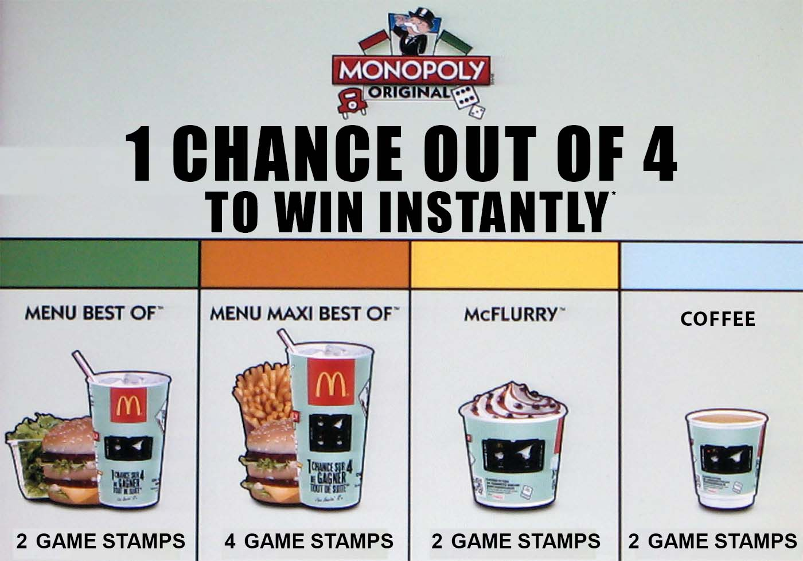
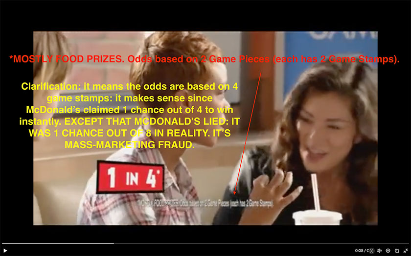
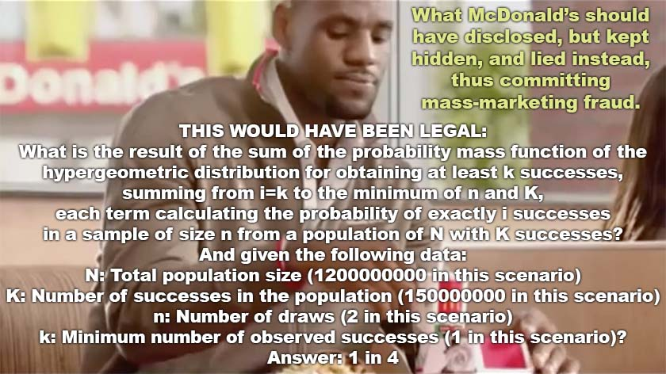

持续更新的犯罪举报书（草稿）——针对麦当劳公司（McDonald’s Corporation）及其共犯的 RICO 刑事案件

摘自第 27 稿。我目前在网上发布的内容仅约占第 27 稿全文的十分之一。
本文件原以英文撰写并发布。以下中文译文仅供参考；如有出入，以英文原文为准。本译文由人工智能（Claude Code）自动翻译，未经 Vincent Le Corre 人工校对，因此可能存在错误。本中文译文对应 2026 年 2 月 18 日的英文版本；英文原文其后可能已有更新。 点击此处阅读英文原文
目录
- 太长不看；内容摘要
- 前言
- (I) 引言：本犯罪举报书是在胁迫之下撰写的
- (I)(A) 干扰证人与我所收到的（死亡？）威胁
- (I)(B) 举报不义行为的基督徒义务
- (I)(C) 关键证人、分析人、举报人，以及如今的双重举报人（whistleblower x 2）
- (I)(D) 为理解本案洗钱方面及其重要性所作的简要而非穷尽的说明
- (I)(E) 部分关键事件的简要而非穷尽的时间线
- (I)(E)(a) 引言
- (I)(E)(b) 1987年：沉沦之路的开端：1987年“大富翁”有奖促销活动（Monopoly Sweepstakes）
- (I)(E)(c) 2002年：McDonald’s Corporation v. Simon Marketing
- (I)(E)(d) 2011年：我开始发现这些犯罪
- (I)(E)(e) 关键法律要点：对麦当劳破产的影响
- (I)(E)(f) 2012年 麦当劳法国公司继续其有组织犯罪活动
- (I)(E)(g) 2015年，我开始直接向麦当劳公司发出警示
- (I)(E)(h) 2016年，我继续就新的犯罪行为向麦当劳公司发出警示
- (I)(E)(i) 2017年，我继续就又一批新的犯罪行为向麦当劳公司发出警示
- (I)(E)(j) 关键法律要点：洗钱及其对麦当劳破产的影响
- (I)(E)(k) 2012年至今：篡改、变造、伪造法院文书、公文书、法律文书、官方文书的反复出现的模式
- (I)(E)(l) 2016-2018年走过场的审判：一场皮洛士式的胜利（惨胜）
- (I)(E)(m) 2019年：法国民选官员 Cédric Villani 干扰证人
- (I)(E)(n) 2019年：一家法国反腐败协会的正式答复
- (I)(E)(o) 2019年：麦当劳公司首席执行官被突然解雇
- (I)(E)(p) 2020年：法国警方干扰证人
- (I)(E)(q) 2018|2019-2021年：法国司法部长 Nicole Belloubet（妮可·贝卢贝）干扰证人
- (I)(E)(r) 2021年：警方确认刑事调查已于2019年启动
- (I)(E)(s) 2021-2022年：干扰证人、敲诈、勒索未遂，据推测系法国政府所为
- (I)(E)(t) 2022年：向美国证券交易委员会（S.E.C.）举报人办公室提交的第二次举报
- (I)(E)(u) 2023年：排除任何一丝怀疑，数十亿笔欺诈交易已获证明
- (I)(E)(v) 2023年：我被非正式地下达封口令
- (I)(E)(w) 2023年：一名持有有效绝密级安全许可（Top Secret clearance）的美国司法部（DOJ）雇员，就一项向美国证券交易委员会（S.E.C.）提出的 FOIA/FOPA 申请与我联系
- (I)(F) 2023年的非正式封口令：美国司法部自2019年以来即知道或理应知道
- (I)(G) 为了透明起见的重要说明
- (I)(H) 我们是否应当对部分犯罪者予以怜悯？
- (I)(I) 致地方执法官员的话：你们联合起来，握有比联邦政府更大的权力！
- (I)(J) 嫌疑人的非穷尽清单
- (I)(K) 可选内容
- (II) 麦当劳（McDonald’s）欺诈丑闻与大众汽车（Volkswagen）排放丑闻相比如何：呼吁公平追责
- (III) 认识麦当劳（McDonald’s）的影响力及其腐蚀能力
- (III)(A) 谨防表象！麦当劳是一个真正的、极为强大的、拥有深厚政治关系的犯罪组织
- (III)(B) 麦当劳公司（McDonald’s Corporation）及其共犯是政客的主要捐赠者
- (III)(C) 麦当劳公司是否已经腐蚀了华盛顿特区？
- (III)(D) 麦当劳公司的共犯是否已经腐蚀了美国各州及地方官员？
- (III)(E) 迈阿密-戴德警察局是否已经遭到腐蚀？
- (III)(F) 所有美国官员是否都会同意退还来自 RICO 犯罪企业的捐款？
- (III)(G) 美国官员及州级官员还能保持公正吗？
- (III)(H) 麦当劳在法国的腐蚀能力
- (III)(I) 只需看看法国高级官员发出的威胁
- (III)(J) 麦当劳公司和/或其共犯似乎已经腐蚀了某些执法官员
- (III)(K) 个体业主经营者同样具有腐蚀能力，例如
- (III)(L) 腐蚀也可能通过麦当劳公司的供应商和/或某些主要机构投资者发生
- (IV) 麦当劳公司（McDonald’s Corporation）及其共犯、以及成为事后从犯的人员，在美国和/或其他国家所实施的已确认犯罪的非穷尽清单，以及涉嫌犯罪的非穷尽清单
- (IV)(A) 关于本非穷尽清单的简要说明，以及为何该犯罪活动——即 18 U.S.C. § 1961(5)（《美国法典》第18编第1961条第(5)款）所定义的 RICO 敲诈勒索活动模式——是持续性的、尚未终结
- (IV)(B) 官员及民选官员持续实施的干扰证人（witness tampering）犯罪。封口令、威胁及可能的死亡威胁
- (IV)(C) 麦当劳公司和/或其共犯持续实施的干扰证人犯罪
- (IV)(D) 位于美国伊利诺伊州芝加哥的总部——麦当劳公司——对全球犯罪所得实施的洗钱
- (IV)(E) 2011年度法国麦当劳“大富翁”有奖促销活动（Monopoly）中的第一起“1 in 4”大规模营销欺诈
- (IV)(F) 2011 年度美国麦当劳“大富翁”有奖促销活动中的第一起“1 in 4”大规模营销欺诈
- (IV)(G) 2012年美国第一起“1 in 4”麦当劳 Monopoly 大规模营销欺诈
- (IV)(H) 2022年澳大利亚的“1 in 4”麦当劳 Monopoly 大规模营销欺诈
- (IV)(I) 现在你可以理解2011年美国“1 in 4”麦当劳 Monopoly 大规模营销欺诈中的第二起欺诈
- (IV)(J) Bis Repetita（拉丁语，意为“再重复一次”）：法国亦复如是——2011年法国“1 in 4”麦当劳 Monopoly 大规模营销欺诈中的第二起欺诈
- (IV)(K) 全球范围内至少存在 50 至 100 起大规模营销欺诈——至少如此。全球范围内可能存在数百起大规模营销欺诈。有时，1 个年度版本之内就有多起欺诈：麦当劳已经破产！（若法治得到维护）
- (IV)(L) 妨碍司法：Philippe Mouricou 实施的干扰证人行为，以及 RICO 犯罪企业的事后从犯
- (IV)(M) 妨碍司法：法国民选官员 Cédric Villani 实施的干扰证人行为，RICO 犯罪企业的事后从犯
- (IV)(N) 2011年法国的“Collect-to-Win”麦当劳 Monopoly 大规模营销欺诈
- (IV)(O) 2012年法国的“Collect-to-Win”麦当劳 Monopoly 大规模营销欺诈
- (IV)(P) 2015年法国的“Collect-to-Win”麦当劳 Monopoly 大规模营销欺诈
- (IV)(Q) 律师事务所 Péchenard & Associés（由法国国家警察总局局长的父母创办）对 RICO 犯罪企业的帮助和教唆
- (IV)(R) 2016年法国的麦当劳 Monopoly 大规模营销欺诈
- (IV)(S) Allen & Overy 很有可能实施了干扰证人行为（删除了一份关键证词）
- (IV)(T) 麦当劳公司、麦当劳欧洲公司、麦当劳法国公司、Allen & Overy 实施的妨碍司法与共谋妨碍司法
- (IV)(U) 2017年法国的麦当劳 Monopoly 大规模营销欺诈
- (IV)(V) 极有可能存在腐蚀外国官员的行为（法国国家警察总局局长）
- (IV)(W) Nicole Belloubet（妮可·贝卢贝）实施的干扰证人行为与故意视而不见，RICO 犯罪企业的事后从犯
- (IV)(X) 小型文化灭绝（Mini-Cultural Genocide）
- (IV)(Y) 1987年美国的“Collect-to-Win”大规模营销欺诈
- (IV)(Z) 美国某一特定麦当劳加盟商可能实施的犯罪（Mc”Truth”，其中 Truth 意为“真相”）
- (IV)(AA) 第三个欺诈实例：麦当劳公司及其共犯实施的“Collect-to-Win”（集齐中奖）欺诈：一起欺诈性虚假陈述与彻头彻尾的欺诈的案件
- (IV)(BB) 第四个欺诈实例：麦当劳法国公司及其共犯实施的2011年“Collect-to-Win”欺诈
- (IV)(CC) 第五个欺诈实例：麦当劳法国公司及其共犯实施的2012年“Collect-to-Win”欺诈
- (IV)(DD) 第六个欺诈实例：麦当劳法国公司及其共犯于2015年实施的“Collect-to-Win”欺诈，此等犯罪为麦当劳公司所纵容
- (IV)(EE) 欺诈第7例：麦当劳法国公司及其共犯于2016年实施的欺诈，这些犯罪再一次得到麦当劳公司的纵容
- (IV)(FF) 欺诈第8例：麦当劳法国公司及其共犯于2017年实施、并再次为麦当劳公司所纵容的欺诈
- (IV)(GG) 欺诈第9例：中国，2019年
- (IV)(HH) 欺诈第11例：爱尔兰 XXXX
- (IV)(II) 第12例：2016年美国的非法彩票
- (IV)(JJ) 对重罪知情不报（Misprision of Felony）：18 U.S. Code Section 4（《美国法典》第18编第4条）
- (V) 针对麦当劳公司（McDonald’s Corporation）及其共犯所实施犯罪的紧急建议
- (V)(A) 怀着最大的敬意：醒醒吧！看看事实！你们必须分析事实！
- (V)(B) 认识有组织犯罪与洗钱的长期后果
- (V)(C) 做好准备！这是历史上最大的欺诈案之一：你们必须有一套方案
- (V)(D) 举行新闻发布会，否则记者可能不敢报道
- (V)(E) 面向消费者和小企业主的受害者信息网站
- (V)(F) 确保调查本案的调查人员在该犯罪企业（criminal enterprise）中不存在经济利益
- (V)(G) 设法确定哪些官员可能已被腐蚀
- (V)(H) 估算受害者的损失
- (V)(I) 估算麦当劳公司的账面价值
- (V)(J) 立即对该 RICO 犯罪企业的律师启动资产没收措施（本节原称 (V)(Uncategorized-2)）
- (V)(K) 立即对麦当劳公司及任何共谋方启动资产没收措施（本节原称 (V)(Uncategorized-1)）
- (V)(L) 对麦当劳公司及其子公司实施资产没收
- (V)(M) 随后开始对所有单个门店签发逮捕令，包括所有加盟商
- (V)(N) 讯问门店经理与业主经营者，以确定其参与这一 RICO 犯罪企业的程度
- (V)(O) 对麦当劳的供应商以及 The Marketing Store 等共犯实施资产没收
- (V)(P) 监控麦当劳公司的前100大机构投资者
- (V)(Q) 对为这一犯罪企业提供融资的投资公司实施资产没收
- (V)(R) 致美国政界人士与政党的紧急呼吁：退还来自麦当劳公司及其共犯的捐款
- (V)(S) 鉴于麦当劳公司销毁证据的历史，保护／保全证据
- (V)(T) 与国际刑警组织和欧洲司法组织（Eurojust）的国际协调
- (V)(U) 与欧洲人权法院（ECtHR）协调
- (V)(V) 致美国参议院：启动参议院调查
- (V)(W) 调查并设法查明，2019年是谁向麦当劳公司内部的某人（也许是董事长）通报了消息
- (V)(X) 一条链条的强度取决于其最薄弱的一环：考虑与 Gloria Santona 和／或 Steve Easterbrook（史蒂夫·伊斯特布鲁克）达成交易
- (V)(Y) 对法国消费者协会 UFC-Que Choisir 发起刑事调查
- (V)(Z) 调查法国总统及其政党与 The Marketing Store 乃至麦肯锡（McKinsey）之间的关联
- (V)(AA) 开始监控那些明知情况却仍会继续为这一犯罪企业提供融资并从中获益的机构投资者
- (V)(BB) 开始对 Philippe Mouricou、Cédric Villani、Nicole Belloubet（妮可·贝卢贝）、Jean-Pierre Petit、Nawfal Trabelsi、Françoise de Borda、Pénichon、Malcolm Hicks 以及任何参与这一 RICO 犯罪企业的人签发引渡请求
- (V)(CC) 扣留 Steve Easterbrook 的护照，并考虑 Carine Smith Ihenacho、Guillaume Huin 以及任何可能有潜逃风险的人
- (VI) 真相即力量：数学即力量
- (VII) 相关法律与法规
- (VIII) 关键考量：值得牢记的若干有益提示
- (VIII)(A) 策略：迫使加盟商选边站
- (VIII)(B) 骗子麦当劳公司（McDonald’s Corporation）及其共犯如何利用 Kahneman（卡尼曼）的行为经济学理论实施大规模营销欺诈
- (VIII)(C) “消费者心理学与小字说明欺诈问题”（Consumer Psychology and the Problem of Fine Print Fraud）
- (VIII)(D) 麦当劳公司、其各子公司、各自的高管以及他们的律师，全都知道自己正在实施规模巨大的大规模营销欺诈与洗钱。甚至有些员工也知道！
- (VIII)(E) 麦当劳公司目前实际上已经破产：对其当前负债的粗略估算
- (VIII)(F) 理解财务核心：股票市值与账面价值（亦称股东权益）之别，以及麦当劳的巨额股票回购
- (VIII)(G) 麦当劳公司是否具有庞氏骗局（Ponzi scheme）的特征？我相信是的，大体上属于此类。
- (VIII)(H) 麦当劳公司及其子公司实施的洗钱
- (VIII)(I) 《反海外腐败法》（FCPA）
- (VIII)(J) 《敲诈勒索及腐败组织法》（Racketeer Influenced and Corrupt Organizations Act，简称 RICO）与麦当劳公司的敲诈勒索活动模式（18 U.S. Code §1961）
- (VIII)(K) 美国联邦调查局（FBI）与联邦犯罪受害者权利
- (VIII)(L) 对美国证券交易委员会的关切事项
- (VIII)(M) 对美国国税局（Internal Revenue Service，IRS）的关切事项
- (VIII)(N) 对各州税务机关的关切事项
- (VIII)(O) 18 U.S.C. § 371（《美国法典》第18编第371条）——共谋欺诈美利坚合众国
- (VIII)(P) 对欧洲各国税务机关的关切事项
- (VIII)(Q) 共谋欺诈欧盟及欧盟境内各国
- (VIII)(R) 对第三国税务机关的关切事项
- (VIII)(S) 共谋欺诈第三国（例如澳大利亚、巴西、中国、新加坡等）
- (VIII)(T) 标题目录
- (VIII)(U) 关于本犯罪举报书
- (IX) 简要时间线
- (X) 尚未分类
- (XI) 其他
太长不看；内容摘要：
(1) 麦当劳公司（McDonald’s Corporation）及其共犯已从事《敲诈勒索及腐败组织法》（Racketeer Influenced and Corrupt Organizations Act，简称 RICO）所定义的敲诈勒索活动模式，该定义载于 Title 18 of the United States Code, Section 1961(5)（《美国法典》第18编第1961条第(5)款）。(2) 本犯罪举报书是在胁迫之下撰写的。迄今为止，我已收到多次严重威胁，这些威胁因而构成 Title 18, Section 1512 of the U.S. Code（《美国法典》第18编第1512条）所定义的干扰证人（witness tampering）罪。至于是否曾暗示存在可能针对我本人和／或我的家庭成员的死亡威胁，仍有待澄清。
(3) 我已被非正式地、因而是非法地下达封口令。因此，出于我现在不愿和／或不能详述的原因——由于该封口令——我坚信，并排除合理怀疑，美国司法部（DOJ）自 2019 年夏／秋以来即知道或理应知道麦当劳公司及其共犯一直在从事犯罪活动。
(4) 我已通知欧洲人权法院（ECtHR），并在 V.L.C.诉法国案（50552/22）中请求采取临时措施（《法院规则》第39条）。由于与麦当劳案有关的部分信息具有极端敏感性，法院的案卷已被封存。然而，鉴于正在持续进行的白领、有组织犯罪性质的金融犯罪的严重性质，并出于让公众知情的考虑，我决定自 2024 年 4 月 24 日前后开始在网上公布部分文件。这些文件均经过审慎的隐去处理，以在向公众提供信息的同时保护敏感信息。
(5) 我也已开始通知两位美国参议员：Mitt Romney1 和 Chuck Grassley2。
(6) 麦当劳公司及其共犯所实施的部分犯罪包括：大规模营销欺诈、洗钱、腐蚀外国官员（corruption of foreign officials）、腐蚀和／或试图腐蚀美国执法人员，以及因其持续未披露危及公司存续的重大法律挑战而产生的证券法违法行为。若法治得到维护，麦当劳公司目前就一切实际意义而言实际上已经破产。
(7) 存在数十亿笔横跨多个国家的欺诈性交易。这是全球性案件。
(8) 以下是所实施的众多欺诈中的一个例子，且仅仅一个例子：在美国，麦当劳公司及其数以千计的共犯（其中包括加盟商等人）欺诈了消费者，即受害者——他们当中包括数百万无辜的儿童受害者——手法是虚假地声称：按每次尝试计算（其中 1 次尝试即为 1 枚游戏印花），他们拥有 1 in 4（即四分之一的中奖概率）的即时中奖概率。这是一个恶毒的谎言，也是一场恶毒的欺诈：这并不是每次尝试的即时中奖概率。 它实际上是以下各项求和的结果：我们在概率论中所称的超几何分布中获得至少 次成功（“成功”即统计学意义上的“成功事件”）的概率质量函数（PMF），即自 求和至 与 中的最小值，其中每一项计算的是从含有 次成功、容量为 的总体中抽取样本量为 的样本时恰好出现 次成功的概率，并由下式表示：
(9) 麦当劳公司及其共犯撒了谎，他们欺诈性地声称消费者拥有“1 in 4”的即时中奖几率。真实的中奖概率实际上是“1 in 8”（即八分之一的中奖概率）。请记住，这只是他们众多欺诈中的一项。
(10) 如果真实的每次尝试中奖概率约为 2.84% 的中奖几率，那么经过 10 次尝试，你最终的即时中奖几率约为 1 in 4：
(11) 这就好比说：
第一部分：“你尝试 1 次［…］”
第二部分：“［…］10 次尝试，每次尝试的成功概率为 2.84%［…］”
第三部分：“［…］而成功的概率约为 25%，即 1 in 4。”
但麦当劳欺诈性地略去了第二部分：“［…］10 次尝试，每次尝试的成功概率为 2.84%［…］”，其结果是，他们最终作出了如下因遗漏而带有欺诈性的陈述：“你尝试 1 次，而成功的概率约为 25%，即 1 in 4。”
(12) 麦当劳欺诈性地声称它是一个概率的结果，而它实际上是超几何分布中获得至少 次成功的概率质量函数（PMF），即自 求和至 与 中的最小值，其中每一项计算的是从含有 次成功、容量为 的总体中抽取样本量为 的样本时恰好出现 次成功的概率。此外，由于从未向消费者告知全部参数，他们不可能仅凭猜测得知。
(13) 重要提示：请记住，这是超几何分布而非二项分布的概率质量函数，但我在此展示的却是二项分布的公式，因为它已足够接近，可用于说明这一欺诈，并且能够帮助读者直观地理解麦当劳公司及其共犯所实施的这一马基雅维利式（Machiavellian）的欺诈。让我再举其他一些例子：
(14) 如果真实的每次尝试中奖概率是 1 in 200（即二百分之一的中奖概率），也就是 0.5%（百分之零点五）的中奖几率，那么经过 57 次尝试，你最终的即时中奖几率为 1 in 4：
(15) 如果真实的每次尝试中奖概率是 1 in 500（即五百分之一的中奖概率），那么经过 144 次尝试，你最终的即时中奖几率约为 1 in 4：
(16) 如果真实的每次尝试中奖概率是 1 in a million (1,000,000)（即一百万分之一的中奖概率），那么经过 287,682 次尝试，你最终的即时中奖几率为 1 in 4：
(17) 麦当劳公司及其共犯撒了谎，他们欺诈性地声称消费者拥有“1 in 4”的即时中奖几率。真实的中奖概率实际上是“1 in 8”。请记住，这只是他们众多欺诈中的一项。
(18) 真实的中奖概率，即“1 in 8”，从未告知消费者，即受害者。“1 in 4”这个数字事实上是源自二项分布函数的一项复杂计算的结果。当且仅当消费者（受害者）多次尝试其中奖机会时，才会得出这一结果。
(19) 但消费者（即受害者，其中包括数百万儿童受害者）不可能轻易猜到，因为犯罪实体麦当劳公司及其共犯——其中包括加盟商等人——以大写字母和粗体字着重地欺诈性声称：更多的尝试，即更多的购买，并不会提高中奖几率。
(20) 这里有一个例子，也是一个事实：如果真实的中奖概率是每次尝试 1 in a million (1,000,000)，那么经过 287,682 次尝试后的中奖概率就是“1 in 4”。
(21) 事实，以及又一个例子：如果真实的中奖概率是每次尝试“1 in 500”，那么经过 144 次尝试后的中奖概率就是“1 in 4”。
(22) 麦当劳使用此类欺诈手法，本可以编造出几乎任何数字。
(23) 我收到了某种封口令，而且我目前可能（我不确定）正在遭到敲诈。因此，我不能再公开讨论本案的某些方面。
(24) 我想 100% 地信任美国联邦调查局（FBI）和美国司法部。但华盛顿特区将承受巨大压力：许多通过持股为犯罪实体麦当劳公司提供融资的金融机构，一旦该公司破产，注定会损失大量金钱。然而，法律就是法律，麦当劳公司及其共犯并不凌驾于法律之上。
(25) 然而，市、县、州各级的地方官员无需等待华盛顿特区的放行，就可以开始起诉麦当劳公司及其共犯，也就是加盟商等人，就在现在。
(26) 这些掠食者仅在美国就造成了数以千万计的受害者，其中包括数百万儿童受害者。受害者中不仅有消费者，还有其他企业——它们根本无法与一个通过欺诈和洗钱从事敲诈勒索活动模式（RICO）的犯罪组织公平竞争。
(27) 犯罪活动仍在持续，尚未结束。
(28) 如果你不理解，我可以提供帮助。请发送电子邮件至 vincent@ecthrwatch.org
前言
(29) 本文件是针对麦当劳公司（McDonald’s Corporation）及其各类共犯的一份非穷尽的犯罪举报书，涵盖了一系列指控，其范围从直接参与地方层面的犯罪活动，直至联邦层面的犯罪活动，包括但不限于洗钱以及违反《敲诈勒索及腐败组织法》（Racketeer Influenced and Corrupt Organizations Act，简称 RICO）的行为。虽然这些指控中的某些方面需要联邦层面的调查，甚至需要与受这一犯罪企业（criminal enterprise，RICO 法上的专门术语，既包括公司实体，也包括事实上结合的团体）影响的其他国家的司法系统开展国际合作，但必须认识到，州和市级执法机关在地方层面处理所涉犯罪方面发挥着不可或缺的作用。(30) 确实，看来加盟商通过其共犯行为或直接参与，已经参与了有助于一个 RICO 犯罪企业运作的行为。
(31) 恳请各级执法官员在本举报书的语境下，考虑其管辖权限的广度。市级和州级执法机关拥有法律授权，可以调查麦当劳加盟商及地方门店在其各自管辖范围内所实施的犯罪。此类调查不仅属于其职权范围，而且对于全面应对这一犯罪网络的规模及其对地方社区的影响而言至关重要。
(32) 因此，尽管本举报书可能值得美国联邦调查局（FBI）等联邦机构予以关注并采取行动，但不应在缺乏地方同步行动的情况下将其单独上呈联邦当局。各级执法机关的协作努力，对于确保对本文所提出的指控作出彻底而有效的回应至关重要。提交本举报书的用意，正在于促成一种多层面的执法路径，敦促市级、州级和联邦级官员对麦当劳公司及其共犯所实施的犯罪展开协调一致的调查。
(33) 此外，麦当劳开展经营的其他国家的当局，也被呼吁审查麦当劳各实体在其管辖范围内所实施的犯罪。麦当劳公司的全球性——它处于这一犯罪企业的顶端——意味着一种超出美国国界的系统性影响。因此，外国执法机关也必须调查麦当劳公司及其共犯在多大程度上从事了违反当地法律的犯罪活动。
(34) 对于尚未发现具体欺诈活动的国家的当局而言，必须考虑与一家涉及 RICO 法所定义的敲诈勒索活动模式的公司发生关联所带来的更广泛影响。事实上，即便在某一特定国家并不存在直接的大规模营销欺诈，麦当劳公司全方位的权力和影响力仍确实对当地市场和竞争产生了不利影响。小企业主和竞争者事实上被迫与一个全球经营已被犯罪行为、更具体而言被洗钱所玷污的实体相抗衡。这种情形造成了不公平的竞争环境，使那些努力公平竞争的人处于不利地位。因此，敦促世界各地的执法和监管当局评估麦当劳的经营对当地商业生态的影响，并考虑竞争者所受的间接侵害以及市场的完整性。
(35) 正如美国司法部（DOJ）司法项目办公室（Office of Justice Programs）网站上的一份文件3——“MONEY LAUNDERING: A PRACTICE MANUAL FOR STATE PROSECUTORS”（《洗钱：州检察官实务手册》）——所解释的：
(36) “洗钱还会扭曲经济。诚实的企业在与那些由有组织犯罪提供资金的企业的竞争中败下阵来。正如一位意大利议会议员、前检察官所指出的：‘当你必须背负 25% 的债务负担、而你的竞争对手负债为零时，你会愿意成为一家与[使用黑钱的企业]竞争的公司吗？’有了这样的竞争优势，黑钱迅速渗透并主导整个行业也就不足为奇了。”（着重部分为我所加）(PART I INTRODUCTION TO MONEY LAUNDERING, CHAPTER ONE — MONEY LAUNDERING: OVERVIEW OF THE PROBLEM, SECTION B. MONEY LAUNDERING DISTORTS THE ECONOMY AND CORRUPTS SOCIETY)。
(37) 麦当劳公司正是如此：一个精心策划犯罪企业的犯罪实体，它之所以能够主导快餐业，是因为几十年来它们一直在从事《敲诈勒索及腐败组织法》所定义的敲诈勒索活动模式（参见 Title 18 of the United States Code, Section 1961(5)，即《美国法典》第18编第1961条第(5)款）。
(I) 引言：本犯罪举报书是在胁迫之下撰写的
(I)(A) 干扰证人与我所收到的（死亡？）威胁
(38) 敬启者：(39) 我谨提请您注意一系列涉及麦当劳公司（McDonald’s Corporation）及其共犯的地方性、全国性和跨国性犯罪活动。麦当劳公司及其共犯实施了《敲诈勒索及腐败组织法》（Racketeer Influenced and Corrupt Organizations Act，简称 RICO）所定义的敲诈勒索活动模式，该定义见于 Title 18 of the United States Code, Section 1961(5)（《美国法典》第18编第1961条第(5)款）。在这起针对麦当劳公司及其共犯的 RICO 刑事案件中，我是关键证人、分析人和举报人（whistleblower，美国证券法语境亦译“吹哨人”）。
(40) 为使麦当劳公司免于破产，美国政府与法国政府目前可能都在试图掩盖这些严重犯罪，而我正是在本犯罪举报书中揭露这些犯罪。
(41) 正因如此，如果您属于地方执法界，且尚未完整阅读本报告的前言——该前言简要说明了这一犯罪网络的范围以及采取分层调查方式的必要性——我强烈敦促您现在就予以阅读，以充分理解地方管辖机关在应对这些严重指控方面所承担的角色与责任。
(42) 我必须首先强调，本犯罪举报书是在胁迫之下写成的，因为我已收到多次威胁，其中包括针对我实施的干扰证人（witness tampering）行为和敲诈。
(43) 此外，我自2023年6月起被非正式地下达了封口令，这可能，但不必然，是意图使我噤声。
(44) 由于根本不存在所谓的非正式封口令——至少从法律角度而言如此——这样一道非正式封口令可能被解释为一种干扰证人的行为（18 U.S. Code § 1512，即《美国法典》第18编第1512条），甚至可能被解释为潜在的死亡威胁。
(45) 我本可以公开详述，为何我所受到的非正式封口令可能被解释为包含死亡威胁，但这样做将迫使我违反那道被非正式地强加于我的封口令本身。这使我陷入典型的 catch-22（“第二十二条军规”式）困境。对于不熟悉这一说法的人而言，catch-22 是指这样一种自相矛盾的情形：一个人因相互抵触的约束或规则而无法摆脱某个问题。实质上，问题的解决取决于一项被该问题本身所禁止的行动，从而形成一种无解的局面——每一条可能的出路都被困境自身的条件所堵死。因此，我被迫对那些有可能说明并揭露这些威胁的具体细节保持沉默，因为这样做本身就将构成对封口令的违反。
(46) 这正是为什么，尽管欧洲人权法院（ECtHR）已于2022年11月准予我匿名，我仍在2023年8月底决定暂时解除我的匿名。作出这一决定不仅是为了我自身的安全，更重要的是为了我所爱之人的安全。2023年12月，我就 V.L.C.诉法国案（50552/22）向欧洲人权法院提出了进一步的临时措施申请。本案的法院案卷已被封存，以保护敏感信息，其中特别包括与我所收到的、以非官方方式通知我的非正式封口令有关的细节。
(47) 我还主动将上述情况告知了两位美国参议员，以确保关键决策者了解这一局面。此外，我将继续积极向美国联邦调查局（FBI）及其他相关当局提交证据，以协助对这一全球性案件的调查。鉴于所涉问题的国际性，我已开始通知英国上议院（House of Lords）的一位议员，以期争取不同法域内有影响力人士的支持与行动。这一做法凸显了我追求正义、维护所有相关方权利与安全的决心——超越国界，全面应对这些犯罪活动。
(48) 长期以来，我因试图唤起公众对麦当劳公司及其共犯所犯罪行的关注，也因我向相关当局举报这些活动的努力，而面临多重威胁。例如，2019年夏/秋，在麦当劳公司首席执行官 Steve Easterbrook（史蒂夫·伊斯特布鲁克）被突然解职前不久，我遭到 Cédric Villani 的威胁与敲诈；他是法国一位知名的民选官员，且处于能够证实麦当劳所犯严重罪行的位置。
(49) 这一事件是本案众多关键节点之一。Cédric Villani 在转入政坛之前曾获菲尔兹奖（Fields Medal）——该奖常被视为数学界的诺贝尔奖。他在数学上的深厚造诣使他能够迅速理解麦当劳犯罪的严重程度。这一专业素养也是我当初与他联系的原因之一。
(50) 然而，Villani 非但没有履行其作为民选官员的职责，反而通过其传播总监 Philippe Mouricou 采取威胁与敲诈手段，试图使我噤声。此外，根据其传播总监所作的陈述，有合理根据相信麦当劳曾对法国民选官员 Cédric Villani 施压。 若得到证实，麦当劳的此类行为不仅将落入《反海外腐败法》（FCPA）的适用范围，而且将构成麦当劳公司及其共犯数十年来所实施的敲诈勒索活动模式中的又一项前提行为（predicate act）。
(51) 凡此种种都凸显出，有必要对已经发生的各项事件作一全面梳理。在进入一份简要的、非穷尽的时间线以说明本案更广泛的背景之前，首先必须谈及我举报这些不义行为的基督徒义务。此外，我还将阐明我作为“关键证人、分析人、举报人”的角色，以及鉴于我所面临的复杂局面与日益增加的风险，如今作为“双重举报人（whistleblower x2）”的角色。这些部分将为理解驱动我行动的伦理与个人层面的迫切要求奠定基础。
(I)(B) 举报不义行为的基督徒义务
(52) 鉴于圣经的诫命以及我自身的基督徒信念，举报不义行为不仅是一项法律义务，更是一项神圣的使命。《圣经》明确指出，正如《出埃及记》20:16 所言：“不可作假见证陷害人。”这条诫命不仅禁止说谎，也促使我们在虚假与不义出现之处出声反对。(53) 同样，《以赛亚书》59:4 生动地描绘了一个被欺骗与不义所充斥的社会：
“无一人按公义告状，
无一人凭诚实辩白；
都倚靠虚妄，说谎言。
所怀的是毒害，所生的是罪孽。”
(54) 这段经文与先知书中许多其他经文一样，不仅是对当下恶行的批判，也是呼吁我们改正自己的道路，恳切地寻求公义与真理。
(55) 在我揭露麦当劳公司不当行为的努力中，正是这些圣经训诫在推动着我。举报其行为的决定，源于我对真理与公义原则的坚持，而这些原则既是社会福祉的基础，也是基督教教义的根基。举报此类活动契合圣经中保护无辜者、确保公义得以伸张的命令。这体现的是我的义务——不是散布谣言或搬弄是非，而是在面对不义时负责任地、勇敢地行动。
(56) 这种对真理的坚持，还因基督徒相信上帝即法律与公义而更为坚定。当我挑战任何实体——无论是企业还是政府——通过封口令压制这一真相的企图时，我坚定地站在这一应许之上：“真理必叫你们得以自由”（《约翰福音》8:32）。我的追求并非出于个人私利，而是出于一个真诚的愿望：希望看到公义得以伸张，希望依照上帝的律法恢复正直。
(57) 麦当劳公司及其共犯在全球范围内所犯的罪行本已极其严重，而美国政府和/或法国政府掩盖这些罪行的任何企图，都将构成性质更为严重的一类罪行。
(58) 披露保证：
(59) 需要澄清的是，我早先的诉求可能受到个人处境的影响，其中包括经济困境和我爱人的健康问题。起初，与麦当劳达成的任何可能的和解都或许可以缓解这些个人困难。然而，我行动的重心此后发生了重大变化，尤其是在我遭到敲诈、威胁、被法国政府监视，并且如今又被非正式地下达封口令之后——这一举动可能被视为又一次敲诈与威胁。今天，推动我揭露真相的，是防止他人进一步受到伤害的愿望，以及为这一犯罪企业（criminal enterprise）所造成的不可逆损害寻求正义的愿望。法国的高层官员已经参与了这些活动，至少是通过严重的刑事过失参与其中，正如我在提交给欧洲人权法院的一份来文中所详述的那样4。
(60) 如果政府机构试图庇护或掩盖麦当劳公司及其共犯所犯的严重罪行，我向所有利益相关方保证，这些企图将遭遇更高的警觉和更强有力的行动，以确保受到最大程度的审视并引起公众的关注。我致力于就这些案件的相关事实作出全面、彻底的披露。我的决心是让这些程序保持透明，确保正义在不受干扰的情况下公开实现。任何政府参与庇护麦当劳都将是完全不可接受的，这会加重原有罪行的严重性，并背弃公众的信任。
(61) 我不会违背良心行事。
(62) “多有财利，行事不义，不如少有财利，行事公义。”（《箴言》16:8）
(I)(C) 关键证人、分析人、举报人，以及如今的双重举报人（whistleblower x 2）
(I)(C)(a) 举报人的定义与角色
(63) 在本犯罪举报书的这一部分，必须阐明我作为关键证人、分析人、举报人，以及在收到封口令之后作为双重举报人（whistleblower times two (x2)）的身份。这一界定并非任意为之，而是深深植根于相关定义，以及我与麦当劳公司、麦当劳欧洲公司（McDonald’s Europe）、麦当劳法国公司（McDonald’s France）之间往来的具体情形，和我所掌握的非公开信息。(64) 首先，必须确认的是，尽管我从未担任过麦当劳的雇员，我对“举报人”一词的使用仍与公认的定义相符。举报人通常被理解为：揭露有关非法活动或危及公众健康与安全之情况的人，而这些信息若非如此本来可能不会为人所知。国家举报人中心（National Whistleblower Center）给出了明确的定义5：
(65) “最简单地说，举报人是指将浪费、欺诈、滥用、腐败，或危及公众健康与安全的情况，报告给有能力纠正该不法行为之人的人。举报人通常在不法行为发生的组织内部工作；但是，成为机构或公司的‘内部人’并非担任举报人的必要条件。关键在于，该个人披露了本不会为人所知的、关于不法行为的信息。”
(66) 这一定义概括了我的处境。最初，我的介入并非以内部人的身份开始，而是作为麦当劳公司在法国所从事活动的受害者。我直接向麦当劳法国公司、进而向麦当劳公司提出对持续存在的消费者欺诈及其他非法活动的关切，这些努力使我得以接触到敏感的往来与通信。其中包括公司高管与我之间的通信，以及我的律师与麦当劳一位律师之间的一次通信；这清楚地表明，麦当劳明知其正在实施的犯罪，并对此全然漠视。
(I)(C)(b) 我作为举报人的角色演变
(67) “举报人”一词最早是由一位记者用于我的行为的：他将我为揭露这些问题而设立的一个网站称为“举报人网站”。尽管我起初对采用这一标签有所犹豫——考虑到我相对于该公司而言处于外部位置——但它已变得越来越贴切。我所披露的非公开信息不仅证实了不当行为，也凸显了压制这些信息的系统性努力。(I)(C)(c) 封口令之后被放大的角色
(68) 在被强加非正式封口令之后，我作为举报人的角色实际上已经加倍——因此是双重举报人（whistleblower times two (x2)）。这一说法反映了我在更严苛的约束之下继续披露关键信息所承担的更高风险与责任。封口令虽使我无法讨论具体细节，却凸显了我持续揭露这些真相所涉及的严重影响与风险。(69) 在继续推进的过程中，我仍必须坚持揭露并举报麦当劳公司及其关联方的不法行为，保持维护公共安全与企业问责所必需的诚信与真实。
(I)(C)(d) 理解我在《多德-弗兰克法案》（Dodd-Frank Act）之下的分析人角色
(70) 我的分析人角色，也许在财务分析师或会计师的意义上并不正式，但它涉及对麦当劳犯罪计划的统计概率与运作模式的深入剖析。这类分析至关重要，并与调查性分析和法证分析相一致——此类分析超越表面信息，去理解其背后的运作机制。(71) 根据《多德-弗兰克华尔街改革与消费者保护法》，分析人确实可以是这样一种人：他汇集并解读公开可得的信息或二手信息，以发现违反金融监管的行为或不当行为。这一角色的范围超出传统的财务分析师，涵盖任何通过其分析使监管机构得以识别监管违规行为并据以采取行动的个人。
(72) 据 Stephen M. Kohn 在其著作 Rules for Whistleblowers: A Handbook for Doing What’s Right（书名直译：《举报人规则：做正确之事的手册》）中所述：“《多德-弗兰克法案》还允许分析人提出奖励申请。分析人并非传统意义上的原始信息来源，而是这样一种人：他以某种方式汇集公开信息或二手信息，从而使各委员会得以获知已发生违法行为。”
(73) 这一规定与我的活动尤为相关，因为我对麦当劳犯罪做法的调查并不只是解读数据，而是揭示了监管机构此前未曾据以采取行动的系统性欺诈。
(74) 鉴于我的工作揭露了重大欺诈行为以及随之而来的严重金融犯罪与不当行为（洗钱以及未向投资者发出警示），它可能有资格获得《多德-弗兰克法案》之下的举报人保护。这一点至关重要，因为它使我免受报复。
(75) 总而言之，我在此情境中的分析人角色超出了传统财务分析的范围，进入了法证审查的领域——在这一领域中，分析本身有助于揭开复杂的计划以及随之而来的监管违规行为。通过这样做，我体现了《多德-弗兰克法案》举报人条款的精神，成为企业实践中通向透明与问责的关键渠道。这重申了我的调查工作在法律上与社会上的价值，使我成为倡导消费者权利与合乎道德的商业行为的关键人物。
(I)(D) 为理解本案洗钱方面及其重要性所作的简要而非穷尽的说明
(76) I(77) section
(78) McDonald’s Corporation
(79) /|\
(80) / | \
(81) / | \
(82) / | \
(83) / | \
(84) McDonald’s USA McDonald’s France McDonald’s Norway
(85) /|\ /|\ /|\
(86) / | \ / | \ / | \
(87) Franchisee A B C Franchisee D E F Franchisee G H I
(88)
(88)
(89) 混同原则（The Commingling Doctrine）：当受污染的资金与干净的资金混合在一起时，整个被混同的资金池都将成为权利主张的对象。
(I)(E) 部分关键事件的简要而非穷尽的时间线
(I)(E)(a) 引言
(90) 本节对与本案洗钱方面有关的若干重要事件作简要说明。(91) 这一非穷尽说明的主要目的，是提供一个快速概览，帮助读者理解本案的洗钱方面，以及为何麦当劳法国公司与麦当劳欧洲公司的高管——更为关键的是麦当劳公司的高管——完全清楚他们正在实施洗钱犯罪。
(92) 关于洗钱，国际刑警组织（INTERPOL）的网站指出：“追根溯源。对洗钱的调查通常与对产生犯罪所得的原始犯罪的调查同步进行。金融调查旨在查明非法收入的来源、流向与去向，并揭开所涉网络的面纱。非法取得的资产随后可被冻结或没收，原始罪行与其后洗钱行为的实施者均可被提起公诉。”
(93) 只有在本犯罪举报书的后文中，我才会更为详细地探讨这些产生犯罪所得的原始犯罪，以揭示这些犯罪活动的深度与广度。就目前而言，这一简要的、非穷尽的说明，主要用于展示麦当劳公司在洗钱中的全面卷入。
(I)(E)(b) 1987年：沉沦之路的开端：1987年“大富翁”有奖促销活动（Monopoly Sweepstakes）
(94) 麦当劳公司至少自1987年推出“大富翁”有奖促销活动起，就开始走上歧途。我认为，这项有奖促销活动——我稍后将更详细地解释其原因——始终构成欺诈，因为它以欺诈方式虚假陈述了人们的中奖机会。(95) 麦当劳这项“大富翁”有奖促销活动的内容因国家而异。但有两个主要方面已在全球各地被复制。第一个是 Collect-to-Win（集齐中奖）。
(96) 1987年之后的若干年，麦当劳又为麦当劳 Monopoly 活动引入了另一个组成部分／另一种参与方式。我不确定它究竟始于哪一年，但在某个时点，他们加入了 Instant-Win（即时中奖）。
(97)
(98) 在麦当劳 Monopoly 活动的 Collect-to-Win 部分中，玩家收集附在麦当劳产品上的游戏印花。这些游戏印花大多代表“大富翁”地产。要赢得奖品，参与者必须集齐同一颜色的全部地产，与《大富翁》桌游如出一辙。然而，并非所有游戏卡片都同样容易获得；某些地产被有意地——因而也是欺诈性地——设置得比其他地产更为稀有。然而，正如普利策奖获奖记者在其撰写的一篇关于该“大富翁”有奖促销活动的文章中所解释的，其中的“秘密配方”——我更愿意称之为欺诈性虚假陈述——在于：参与者相信每一处地产被找到的可能性都是相同的。
(99) 从一开始，这就标志着麦当劳堕落的开端：通过可疑的——正如我稍后将详述的，实际上是违法的——营销做法轻易牟利。通过采用欺骗性手段招徕顾客，麦当劳不仅损害了自身的诚信，也开启了一种日后将招致重大法律后果的行为模式。
(I)(E)(c) 2002年：McDonald’s Corporation v. Simon Marketing
(100) 2002年的 McDonald’s Corporation v. Simon Marketing 案是一场重大的法律交锋，起因于由 Jerome Jacobson 策划的一起大规模欺诈计划；此人是一名前警察，曾受雇于麦当劳促销游戏的供应商 Simon Marketing。Jacobson 利用其职位之便，从 Monopoly 活动中窃取稀有的游戏卡片，并将其分发给一个共犯网络，这些人以虚假方式领取了价值数百万的奖品。(101) 然而，我主张，Jerome Jacobson 不过是一个窃贼，他所窃取的对象是另一个窃贼，即麦当劳。
(102) 2002年 McDonald’s Corporation v. Simon Marketing 这一诉讼案，是理解麦当劳公司内部更广泛的不当行为模式的关键节点。该诉讼源于 Simon Marketing 雇员实施的一起大规模欺诈；该公司负责运营麦当劳的促销游戏，包括著名的 Monopoly 活动。此案不仅凸显了麦当劳促销做法中的重大漏洞，也揭示了内部与外部串通欺诈顾客的可能性。
(103) 此案的意义超出其直接的法律后果：它为理解麦当劳运营中的公司监督与道德管控——或其缺失——提供了关键洞见。该诉讼以巨额的财务和解告终，本应就麦当劳的合同伙伴关系与运营安全为其敲响警钟。此外，它还开启了公众层面的讨论：企业需要执行严格的道德标准并保持严密的监督，以防止类似事件发生。
(104) 此案对我们的讨论至关重要，因为它例示了大型企业内部可能普遍存在的各类漏洞与道德挑战。它也为此类问题在法律层面与公众层面的处理方式树立了先例，为其后数年对麦当劳企业做法的持续审视提供了基础性背景。
(I)(E)(d) 2011年：我开始发现这些犯罪
(105) 2011年我在法国生活期间，首次开始发现麦当劳实际上已经实施了数十年的部分犯罪。而直到2023年，在我被下达封口令前不久，我才开始明白：这一持续／不间断的犯罪企业——受《敲诈勒索及腐败组织法》（RICO）规制的犯罪企业，由麦当劳公司策划的犯罪企业——早在1987年就已开始，甚至可能更早。(106) 在本犯罪举报书的内容摘要中，我简要陈述了他们众多罪行中的一项——“1 in 4”（即四分之一的中奖概率）即时中奖欺诈，一项大规模营销欺诈计划。这一欺诈计划在2011年的法国同样存在。然而，这并非法国当年唯一的欺诈。
(107) 值得注意的是，还存在麦当劳 Monopoly 活动的 Collect-to-Win 欺诈计划。若有读者不熟悉这一运作——或更准确地说，不熟悉它在法国所构成的彻头彻尾的欺诈——其运作方式如下：
(108) 在麦当劳 Monopoly 活动的 Collect-to-Win 部分中，玩家收集附在麦当劳产品上的游戏印花。这些游戏印花大多代表“大富翁”地产。要赢得奖品，参与者必须集齐同一颜色的全部地产，与《大富翁》桌游如出一辙。然而，并非所有游戏卡片都同样容易获得；某些地产被有意地——因而也是欺诈性地——设置得比其他地产更为稀有。然而，参与者相信每一张游戏卡片被找到的可能性都是相同的。
(109) 在法国，针对企业对消费者的不公平商业行为的欧洲第2005/29/EC号指令，其转化立法明确将此类欺骗性做法归类为重罪，而不论官方规则、乃至小字说明中披露了什么。然而，需要理解的关键在于：在法国，麦当劳不仅在小字说明中，甚至在官方规则之内，都未曾指明某些地产是被有意地——因而在刑事意义上具有欺诈性地——设置得稀有的。
(110) 但请记住，欧洲第2005/29/EC号指令的含义在于：即使麦当劳曾在 Monopoly 活动的规则或小字说明中披露某些游戏卡片比其他卡片更为稀有——需要非常明确的是，他们并没有这样做——仅仅是试图扭曲人们对中奖机会的认知这一举动，实际上就会被视为重罪。缺少这一披露，进一步凸显了该促销活动的欺骗性，使其完全归入法国刑法之下构成彻头彻尾的欺诈的那类做法。
(111) 令人震惊的是，法国的2011年度活动还规定，消费者在领取任何奖品之前，不仅需要集齐单独一组，而且需要集齐整个游戏底板——据我所知，这一要求在任何参与国家均无记载，这进一步说明了该计划的欺诈性设计。
(112) 这种程度的欺诈性虚假陈述已超出单纯疏忽的范畴；它构成故意的、精心算计的欺诈。针对儿童以及其他弱势人群的欺诈。
(113) 在我2011年最初发现之后约一个月，并在咨询了一名律师之后，我开始就我所发现的欺诈活动通知麦当劳法国公司。
(114) 在随后的一年，即2012年，我坚持不懈，将我的关切进一步上报，不仅涉及当地高管，还敦促他们通报组织的更高层级，包括位于芝加哥的麦当劳公司、其高管团队以及董事会。
(115) 尽管我作出了这些努力，麦当劳法国公司及其共犯仍继续参与有组织犯罪活动。
(116) 随着时间推移，越来越明显的是，这种不当行为模式并不局限于法国，而是一个影响全球众多其他国家的普遍问题。
(I)(E)(e) 关键法律要点：对麦当劳破产的影响
(117) 要充分理解在欧洲所实施的这些犯罪的影响，以及其对麦当劳法国公司随后的破产、乃至此后麦当劳公司破产所产生的影响，有必要先作一简要说明。(118) 麦当劳法国公司声称每一种“大富翁”地产的数量均等。然而，他们操纵了游戏，使消费者几乎不可能通过 Collect-to-Win（集齐中奖）这一欺诈方案中奖。
(119) 因此，通过操纵游戏，他们剥夺了自己的顾客（更准确地说是他们的受害者）公平且均等的中奖机会。
(120) 由于麦当劳法国公司及其共犯实际上通过欺诈性虚假陈述声称，所有“大富翁”地产的游戏印花都是均等地、并且是按顺序地——关于顺序发放这一点，我稍后会再作说明——发放的，他们因而使自己负担了一项永远无法履行的责任。
(121) 其结果是，麦当劳法国公司及其共犯实施了欺诈，并负有法律义务，就假如该有奖促销活动未被操纵、受害者——也就是他们自己的顾客——本应享有的中奖机会之丧失，向其作出赔偿。该总额在理论上最多约为 3,771,375,365,237.50 欧元。是的；超过 3.7 万亿欧元；您没有看错。而这仅仅是他们 2011 年在法国所实施的诸多欺诈中的一项。
(122) 鉴于麦当劳法国公司直接或间接地是麦当劳公司的子公司，且鉴于麦当劳公司目前的股票市值约为 1920 亿美元（截至 2024-04-16），我认为可以公允地说，麦当劳法国公司实际上已经破产，因为其估值不可能高于麦当劳公司。而且，即便是麦当劳公司的市值，也不足以赔偿受害者。此外，正如我稍后将说明的，真正重要的是该公司的账面价值，而不是股票市值。
(123) 其法律依据，与我后来才了解到的一起案件完全相同；该案属于 FBI 一项名为“Final Answer”（英文，意为“最终答案”）的全国性行动的一部分。
(124) 只不过这一次，犯罪者是麦当劳法国公司及其共犯。麦当劳公司其后成为事后从犯；而最终我意识到，实际上正是麦当劳公司在纵容此类有组织犯罪活动。
(125) 麦当劳 Monopoly 活动在美国被操纵的方式，与麦当劳 Monopoly 活动在法国被操纵的方式之间，一个关键区别在于，在美国，
(I)(E)(f) 2012年 麦当劳法国公司继续其有组织犯罪活动
(126) One(I)(E)(g) 2015年，我开始直接向麦当劳公司发出警示
(127) 2015年，我直接与麦当劳公司取得联系，向其发出警示：其在欧洲的各子公司正在从事犯罪活动。麦当劳公司通过其时任总法律顾问（General Counsel）Gloria Santona 答复了我，她确认对该询问予以认真对待：因此，他们完全知悉当时在欧洲正在发生的犯罪行为。(128) 总部内部的一些最高层管理人员——例如麦当劳公司首席执行官 Steve Easterbrook 和总法律顾问 Gloria Santona——已获知这些关切。在我于2015年10月21日 23:47 +0800（中国标准时间）收到的一封往来电子邮件中，Santona 女士表示：“感谢您的跟进函。当然，我们对此类询问是认真对待的。由于这是一项法国事务，我已请法国团队审查有关情况，并在他们向我通报其结论后向您作出答复。”麦当劳公司前首席执行官 Steve Easterbrook 也被抄送了这封通信，表明他已获悉此事。
(129) 根据 RICO 法，Title 18 of the United States Code, Section 1961(5)（《美国法典》第18编第1961条第(5)款），“敲诈勒索活动模式”要求至少有两项敲诈勒索活动行为，其中一项发生在本章生效日期之后，且最后一项发生在实施前一项敲诈勒索活动行为之后的十年之内。
(130) Section 1961(1)（第1961条第(1)款）进一步将“敲诈勒索活动”界定为涵盖范围广泛的多种犯罪，包括但不限于与贿赂、欺诈、赌博、洗钱、妨碍司法等有关的行为。
(131) 考虑到现有证据以及涉案各方的行为，我认为麦当劳公司及其共犯的行为符合上述 RICO 法项下的定义与要件。
(132) 事实上，鉴于麦当劳公司与麦当劳法国公司最高层管理人员的知情，以及他们此后的不作为，所举报的欺诈活动牵涉到洗钱问题。基于所观察到的证据与行为模式，我认为麦当劳公司目前仍在持续从事《敲诈勒索及腐败组织法》（Racketeer Influenced and Corrupt Organizations Act，简称 RICO）所定义的敲诈勒索活动模式。
(133) 麦当劳公司至少自2015年起，就深陷于一个他们永远无法摆脱的恶性循环之中。我稍后会更详细地加以说明。
(134) 我还将在本报告的后文说明该敲诈勒索活动模式。但我想指出的一点是：自2015年起，麦当劳公司再也不可能合理地对其各子公司正在从事犯罪活动一事视而不见。
(135) 在作为顶层母公司（apex company）、负责监督其各子公司全球运营的麦当劳公司完全知悉这些正在进行的犯罪活动之后，他们本应立即制止当时正在进行的欺诈行为。
(136) 麦当劳公司选择不命令其各子公司立即停止犯罪活动。其结果是，麦当劳公司已进入一个如今再也无法摆脱的恶性循环：即 RICO 法所定义的敲诈勒索活动模式。若法治得到维护，则麦当劳公司目前无论从哪个实质意义上看，都实际上已经破产。
(137) 这是一起横跨多国的全球性案件：几乎整个世界都受到了麦当劳所从事的敲诈勒索活动模式的影响。正如我在本犯罪举报书的前言中所说明的，即便是从未发生过任何大规模营销欺诈的国家，也受到这一由麦当劳公司策划的犯罪企业的影响。
(I)(E)(h) 2016年，我继续就新的犯罪行为向麦当劳公司发出警示
返回目录 ↩︎(I)(E)(i) 2017年，我继续就又一批新的犯罪行为向麦当劳公司发出警示
返回目录 ↩︎(I)(E)(j) 关键法律要点：洗钱及其对麦当劳破产的影响
(138) Text(139) Text
(140) Text
(I)(E)(k) 2012年至今：篡改、变造、伪造法院文书、公文书、法律文书、官方文书的反复出现的模式
(141) 我曾多次试图向法国司法机关发出警示，但随之出现的是种种反常、甚至可以说是犯罪性的事情，例如法院文书、公文书、法律文书、官方文书或决定被伪造、篡改或变造。(142) 篡改、变造、伪造法院文书、公文书、法律文书、官方文书的犯罪行为极其严重。我在向欧洲人权法院提交的临时措施申请中对此作了详尽记录。
(I)(E)(l) 2016-2018年走过场的审判：一场皮洛士式的胜利（惨胜）
(143) Text(I)(E)(m) 2019年：法国民选官员 Cédric Villani 干扰证人
(144) 与此同时，在法国——麦当劳全球第二大盈利市场——一项重大的平行事态正在展开，它涉及麦当劳公司及其关联方（包括麦当劳法国公司及其加盟商）的犯罪活动。在这起全球性案件的背景下，麦当劳在法国所实施的欺诈行为，其严重程度尤为恶劣。(145) 在内容摘要中，我已极为简要地阐明了麦当劳所策划的重大欺诈方案之一，其所展示的欺骗程度之精密，令即便最精明的消费者也无法察觉其中运作的欺诈手法。
(146)
(147) 为寻求帮助，我于2019年夏天联系了 Cédric Villani——一位法国民选官员，也是受人尊敬的菲尔兹奖（Fields Medal）得主，该奖常被视为数学界的诺贝尔奖。起初，我收到的是一份泛泛的答复，称其日程繁忙但仍承诺提供帮助——这是一份名义上积极的回复，但最终并未有任何后续行动。
(148) ==========
(149) 除此之外，还有许多问题妨碍着法国司法的正常运作。例如，变造、伪造、篡改、更改官方文书、法院文书、公文书、法律文书的反复出现的模式。
(I)(E)(n) 2019年：一家法国反腐败协会的正式答复
返回目录 ↩︎(I)(E)(o) 2019年：麦当劳公司首席执行官被突然解雇
返回目录 ↩︎(I)(E)(p) 2020年：法国警方干扰证人
(150) Text(I)(E)(q) 2018|2019-2021年：法国司法部长 Nicole Belloubet（妮可·贝卢贝）干扰证人
(151) Text(I)(E)(r) 2021年：警方确认刑事调查已于2019年启动
(152) Text(153)
(154) 这一事件与我在2023年收到的非正式封口令之间存在关联。
(I)(E)(s) 2021-2022年：干扰证人、敲诈、勒索未遂，据推测系法国政府所为
(155) Text(I)(E)(t) 2022年：向美国证券交易委员会（S.E.C.）举报人办公室提交的第二次举报
(156) Text(I)(E)(u) 2023年：排除任何一丝怀疑，数十亿笔欺诈交易已获证明
返回目录 ↩︎(I)(E)(v) 2023年：我被非正式地下达封口令
(157) Text(I)(E)(w) 2023年：一名持有有效绝密级安全许可（Top Secret clearance）的美国司法部（DOJ）雇员，就一项向美国证券交易委员会（S.E.C.）提出的 FOIA/FOPA 申请与我联系
(158) Text(159) 有人以非正式、非官方的方式让我明白了某些事情，而这些事情完全可以被解释为一种潜在形式的敲诈。
(160) 例如，有人向我建议，销毁与本案有关的全部证据，包括我所有的硬盘和所有手写笔记，并称我的性命系于此。
(161) 这能否被解释为一项死亡威胁？我不确定。我愿意相信并非如此。但由于此前我在试图向相关机关发出警示时，就已经遭到过敲诈与威胁，且其中一项威胁已被付诸实施，我认为我有权感到担忧。
(162) 在这起针对麦当劳公司及其共犯的刑事案件中，存在极其令人不安的情节。
(163) 有一个事实是：若法治得到维护，麦当劳公司目前实际上已经破产。这并非夸张：只需看看该公司的账面价值，您就会发现它是负数。因此，将会有很大的压力试图让我噤声。
(164) 基于向我传达的、而我无权披露的一些信息，我目前排除合理怀疑地相信，美国司法部自2019年夏季／秋季起就知道或理应知道，麦当劳公司确实正在从事严重的犯罪活动。
(165) 考虑到麦当劳公司及其共犯所实施的犯罪本已极其严重——因为这些犯罪构成《敲诈勒索及腐败组织法》（Racketeer Influenced and Corrupt Organizations Act，简称 RICO）所定义的敲诈勒索活动模式——如果在此之上，美国政府自2019年起就已知情并试图加以掩盖，那么这将是一场彻底的丑闻！
(166) 基于有人让我明白的、而我目前（也许永远）无法公开披露的内容，我目前相信，美国政府自2019年夏季／秋季起即已知情，与 Steve Easterbrook 在同一时期被解职之间存在关联。我认为，麦当劳公司内部有人——也许是董事长，也许是其他人——遭人非法通风报信，而这才是 Steve Easterbrook 被解雇的真实原因。他们只需找到一个虚假、却看起来可信的理由来为解除其职务作辩解，因为他牵涉过深。
(167) 需要说明的是，我并不是说灌输给公众的官方理由不属实；我只是表明，我目前排除合理怀疑地相信，该理由属实，但它并不是其被解职背后的真实原因。
(168) 我已开始请求 Empower Oversight 的协助，并希望他们和／或其他举报人协会能够帮助我。我也已开始通知两位美国参议员：Chuck Grassley 和 Mitt Romney。
(169) Text
(I)(F) 2023年的非正式封口令：美国司法部自2019年以来即知道或理应知道
(170) 2023年6月，就在我通过数学分析确凿地证明了数十亿笔欺诈性交易同样发生在美国境内之后不久，我收到了只能被形容为非正式封口令的东西。(171) 此外，可能被解释为死亡威胁的言行是不可接受的。我不会被噤声。我不会被敲诈。
(172) 这项“指令”，这道非正式封口令，是以非官方的方式传达给我的，让我只能自行面对其来源与影响所存在的模糊之处。
(173) 有人可能会质疑这样一道非正式指令是否可行，以及它可能的来源；遗憾的是，我无法给出确定的答案。可能性很多，但都属于推测。
(174) 然而，我现在可以在排除合理怀疑的程度上断言：美国司法部至少自2019年夏／秋以来——如果不是更早的话——就已经知道，或理应知道，麦当劳公司牵涉严重犯罪活动。其未采取行动一事，引发了重大的关切，而其中一些细节我受到限制，无法公开讨论。
(175) Text 注：=> SEC DOJ Active Top Secret Clearance。巧合？也许。但也许不是。
(I)(G) 为了透明起见的重要说明
(176) 自2023年6月／7月以来，有迹象表明，美国司法部（DOJ）自2019年夏／秋以来即已知道，或理应知道，涉及麦当劳公司及其共犯的严重犯罪活动。(177) 我为揭露这些涉及麦当劳公司及其共犯的严重犯罪活动所作的努力，在2023年6月／7月遭遇了阻力。这种阻力并未经官方认可为法律上的封口令，但仍可能被视为一种旨在劝阻或阻止披露的非正式企图。这样一段经历虽然缺乏正式的确认，却可能意味着：相较于促成透明，更倾向于维持沉默。
(178) 面对这些事态发展，同时也出于以下担忧——这些行为可能被解释为一种通过间接手段令我噤声的企图；我必须澄清，这是对相关事件的一种推测性的、但可信的解读——我在国际层面寻求法律救济。2023年年底前后，我通过向欧洲人权法院（ECtHR）提出临时措施请求，启动了相关程序，案件名称为 V.L.C.诉法国案（50552/22）。目前，与本案有关的文件受保密令约束，这反映出相关指控与程序极其敏感的性质。
(179) 在不违反任何法律指令的前提下，值得一提的是：围绕美国司法部对这些活动的知情情况所存在的模糊之处，引发了疑问。究竟是无意的疏忽，还是刻意的掩盖，仍不清楚；尤其是考虑到2023年的进一步发现，已在排除任何一丝怀疑的程度上证明了美国境内的犯罪范围更为广泛，这使得任何在这些问题上维持沉默的努力都更加复杂。
(180) 地方、州和联邦执法机构拥有对这些指控进行彻底调查的管辖权和责任。这些机构必须穷尽一切追诉途径，因为证据支持我关于犯罪已经发生的主张。尽管此前处理这些关切的努力有可能曾受到阻碍，但当前的首要任务必须是确保问责并维护法治。
(181) 鉴于我所收到的部分信息具有敏感性，我在公开讨论这些事项时保持谨慎。我希望这段说明并非一项指控，而是一项呼吁：呼吁就麦当劳公司及其共犯所实施的犯罪，以及本文所涉美国司法部自2019年夏／秋以来即知道或理应知道的指控，进行更深入、更透明的调查；在倡导正义与企业问责的同时，尊重法律的界限。
(182) 本报告与其他报告的不同之处，在于所提出的某些证据具有不可否认的性质。就这些犯罪的某些具体方面，我能够提供达到排除任何一丝怀疑程度的证明，并以严谨的数学论证为支撑，确保以100%的确定性表明大规模营销欺诈已经发生。我随后还将在本犯罪举报书中确切说明：麦当劳公司及其最高层管理人员如何知晓这些欺诈行为并予以纵容，以及他们如何从事洗钱活动。
(183) 但在我们更深入地探讨这起史上最大的欺诈案之一——如果不是最大的一起的话——之前，如果本文所使用的语言有时可能被认为严厉或具有对抗性，我谨致以我真挚、最诚挚的歉意。之所以采取这种方式，是因为迫切需要破除一种普遍存在且根深蒂固的偏见——这种偏见不仅盛行于公众之中，也或许为某些官员所持有，他们可能错误地将麦当劳公司视为企业美德的化身。
(184) 这一误解在很大程度上受到麦当劳全球知名度的影响，也受到其对“I’m lovin’ It”（意为“我就喜欢”）口号不间断推广的影响，再加上其财务报告或商业行为准则虚假地宣称遵守法律的文字与精神。此类说法即便不是公然彻头彻尾的虚假，也具有明显的误导性。
(185) 严酷的现实被掩盖在这一精心构筑的门面之下。麦当劳公司及其共犯，就其本质而言，象征着企业不法行为的一种典型范式。他们非但没有充当公众信任的守护者，反而选择了一条犯罪的道路。
(186)
(187) ==================
(188) 因此，使用直白语言的意图并非挑衅或冒犯，而是为了履行一项道德义务：揭露欺骗、揭示企业的不当行为，并就麦当劳公司及其共犯长期而广泛的犯罪行为历史追究责任。这是对读者和执法官员的呼吁：超越麦当劳精心营造的公众形象——去质疑，去要求正义，并认识到，关于其企业美德的普遍看法乃是一种精心编造的假象，由其全球知名度和误导性的公关策略所支撑。
(I)(H) 我们是否应当对部分犯罪者予以怜悯？
(189) 在如此规模的案件中，追责的比例性问题是无法回避的：本案涉及数十万人，牵连于一张横跨数十年、遍及多个大洲的错综复杂的加盟关系网络之中。不妨审视这一光谱：其一端，是本报告第 (IV)(Z) 节所讨论的那类加盟商——即打着自以为义的“McTruth”（该名称中的英文词“Truth”意为“真相”，大致相当于“麦真相”）旗号经营的那个人——此人单凭其对名称的选择，就似乎是在嘲弄诚实这一概念本身，而与此同时又涉嫌参与犯罪活动。另请考虑 Jean-Noël Penichon，此人由麦当劳的高级管理人员转变为加盟商，并将其对该企业内部运作的全面了解一并带入。再请考虑处于这一光谱另一端的人：昨天才投入毕生积蓄、开设了自己第一家麦当劳门店的人，或许是一名曾经的麦当劳门店员工（crew member），怀着自己当老板的梦想，且迄今尚未在知情的情况下参与任何欺诈。这些人各自所处的道德地位与法律地位截然不同，然而截至今日，他们全都是一个犯罪企业的事实上的参与者。执法机关若要作出合乎比例的应对，就必须在联邦、州和地方各级机关之间，以及在法国、美国乃至其他司法管辖区之间，实现真正的协调。但无论他们处在这一光谱的哪个位置，所有人都必须刻不容缓地选择自己的立场。持续的沉默与不作为只会加深他们的罪责。同样值得注意的，是在法国 Rosny 经营的一名特定加盟商的情况：此人得益于一家律师事务所积极提供的法律保护，而该律师事务所本身就帮助和教唆了麦当劳公司（McDonald’s Corporation，下称“MCDC”）实施洗钱——这是一起远远超出消极共犯范畴的犯罪协助案例。
(190) 我希望谈一谈对卷入这一犯罪企业的部分个人——尤其是对麦当劳的部分加盟商——予以怜悯的问题；我这样做出于真诚的心意，而不仅仅是出于法律上或策略上的考量。这并非一场抽象的道德演练。他们是活生生的人，其中许多人至少在最初，可能并未充分理解他们所加入的这一企业的性质。然而法律是明确的，而比例原则要求我们区分两类人：一类是因境遇所迫而沦为受害者的人，另一类是犯罪的设计者。
(191) 并非所有加盟商都生而平等，法律必须反映这一现实。试想这样一名加盟商：他将毕生积蓄投入到一家麦当劳门店，昨天才开张，并且作为一名可能曾经的麦当劳雇员，从未参与过任何欺诈性的促销活动或大规模营销计划。尽管严格说来，此人凭借其特许经营协议而属于犯罪企业的事实上的参与者，但若把他与诸如下文讨论的佛罗里达加盟商集团置于同等的追责标准之下，则是极其不公正的，在法律上也是不合比例的——那一集团连续经营达四十年之久，因此几乎无法想象他们没有至少在知情的情况下，从麦当劳在此期间接连推出的每一场大规模营销欺诈中获益。
(192) 举例而言，佛罗里达的那家加盟商集团在迈阿密-戴德（Miami-Dade）地区的经营可追溯至1982年。自那一年起持续经营至今，他们几乎可以肯定曾主持过、并在经济上受益于麦当劳在整个这一期间所策划的几乎每一场大规模营销欺诈。使其情形尤为引人注目的，是主要加盟商本人的背景：一名前执法人员。人们本会期待，一名由警察转行的商人，在参与那些事后表明具有欺诈性的大规模促销活动之前，会尽到更高程度的审慎注意义务。其中的反讽显而易见：如果连一名前警察——一个受过专业训练、能够识别犯罪行为并维护法律的人——都未能意识到自己正在参与有组织的大规模营销欺诈，那么麦当劳公司在即将到来的集体诉讼中，又怎么可能令人信服地主张，普通消费者本应知道这些完全相同的促销游戏具有欺诈性呢？这一论点，即麦当劳可能试图用于自我辩护的论点，被其自身加盟商网络的行为彻底瓦解。
(193) 此外还有来自达拉斯的那名加盟商，他在某个时期看来乐于在公开场合把自己塑造成一个有信仰、有操守的人。作为同样身为基督徒的人，我相信应当给予“疑点利益”（benefit of the doubt），因此在本报告的这一节中，我不会过多着墨于他的姓名。但我无法无视证据。对金钱的贪爱——《圣经》称之为万恶之根——往往会令人盲目，即便是那些自称行在光中的人也不例外。我只能得出这样的结论：在本案中，一如在其他许许多多的案件中，贪婪蒙蔽了本应清晰的道德判断与法律判断。
(194) 然而，还有一类加盟商，其罪责在性质上属于另一个层次：这些人被直接告知了这些犯罪——无论是通过正式通知、媒体报道，还是直接的往来沟通——却看来是带着轻蔑，选择彻底驳回、贬低或无视这些指控。这些人无法以不知情作为掩护。在面对具体且有文件佐证的欺诈主张时，他们的故意视而不见使其行为从消极的过失上升为积极的刑事过失。对他们必须适用相应更高的追责标准。
(195) 此外还有或许是所有类别中最令人不安的一类：那些曾担任麦当劳公司高级管理人员的人，他们凭借其职位之高，对正在实施的欺诈计划完全知情。这些人领取薪酬——而这份报酬直接来源于有组织犯罪活动的收益。在离开公司之后，其中一些人并未选择与这一企业保持距离，反而选择加深与之的联系，动用其担任高管期间积累的财富，为自己收购加盟门店。他们这样做，不只是在技术意义上洗钱；他们把担任高管那些年所得的黑钱，转化为源源不断的加盟经营收入流，从而进一步为他们早已从中获利的那个犯罪企业提供资金，并使其得以延续。法律对此有一个专门的名称：洗钱。而法院对此将有许多话要说。
(196) 我想说清楚：我真诚地希望能够给予怜悯。驱使我的并非复仇的欲望。我深切地、切身地明白，我们生活在一个堕落的世界之中。我完全坦诚地承认，倘若我身处同样的处境——被同样的社会压力、经济激励和机构文化所包围——我不能保证自己会做得更好。我们都是罪人。这正是我为何相信存在真正悔改的可能，也正是我为何希望法院与检察官会考虑对那些表现出真诚悔意的人从宽处理。但在此语境下，悔改不能仅仅停留在口头上。它必须是切实的、即时的：它意味着切断与特许人的一切关系，全面配合调查人员，并向这些欺诈的受害者作出赔偿。凡达不到这一点的，都不是悔改——而是犯罪的延续。
(197) “贪财是万恶之根。”使徒保罗在其写给提摩太的第一封书信中如此写道。这整个犯罪企业的种子就是贪婪——正是华尔街的各家机构一个季度接一个季度地施肥并加以奖赏的那种贪婪：尽管麦当劳公司犯罪行为的证据不断增多，它们仍继续对其投资。是时候拆毁这座腐败的殿了。而这必须从为其提供资金的人开始。无论知情与否，为这一犯罪企业提供资金的机构投资者，都是其中事实上的参与者。一旦被正式告知——而其中许多机构业已被正式告知——他们继续持有麦当劳股票，就不再是消极的投资，而是积极的共犯行为。凡未能在一个合理且明确的期限内抛售其持股的机构——我建议以正式通知之日起三十日为限——都应当预料到，在刑事诉讼结果作出之前，其资产将被冻结。三十日并非惩罚性的期限。这是宽厚的安排。事实上，这是一种怜悯之举。
(I)(I) 致地方执法官员的话：你们联合起来，握有比联邦政府更大的权力！
(198) 首先，我个人相信，99.5% 至 99.99% 的 FBI 探员都是正直的人。但有时，当涉及巨额金钱、又存在大量潜在政治压力时，即便是最出色的探员也可能被束住手脚。而且，被束住手脚的或许并不在 FBI 内部，而是在 DOJ 内部。也或许不是在本届政府，而或许是在上一届政府。而一切都可能实时发生变化。但是，如果——而且仅当——确实存在某种腐败，那么你们，地方执法官员、警察、县治安官、助理地区检察官和地区检察官、各州总检察长，你们所有人在本案中都握有巨大的权力：你们可以发起地方调查，并就此向媒体发声。所需要的只是一点媒体关注；一旦有几篇报道发表，真相很快就会为人所知。(I)(J) 嫌疑人的非穷尽清单
(I)(J)(a) 美国各州内部的嫌疑人
(199) Text(200) Text
(I)(J)(b) 欧盟各成员国内部的嫌疑人
(201) Text(202) Text
(I)(J)(c) 英国境内的嫌疑人
(203) Text(204) Text
(I)(J)(d) 全球层面的嫌疑人
(205) Text(206) Text
(I)(J)(e) 美国政府及外国政府内部的嫌疑人
(207) Text(208) Text
(I)(J)(f) 民选官员中的嫌疑人
(209) Text(210) Text
(I)(K) 可选内容
(211) 共犯除其他人员外，还包括麦当劳公司的各家子公司，例如 McDonald’s USA, LLC（麦当劳美国有限责任公司）（注：这是一个与麦当劳公司不同的实体）、麦当劳法国公司、麦当劳意大利公司（McDonald’s Italy）、麦当劳德国公司（McDonald’s Germany）以及麦当劳中国公司（McDonald’s China）——这里仅举数例。(212) 共犯还包括这些子公司各自的加盟商，甚至包括某些供应商。
(213) 加盟商当中有独立的业主经营者；然而，作为直接与消费者接触的实体，他们是我即将揭露的这一犯罪企业不可或缺的组成部分。
(214) 这就是为什么，就美国而言，本犯罪举报书面向的是联邦以及地方——州和县两级——的执法官员。
(215) 其他国家亦是如此。例如在法国，每一位 Procureur de la République（检察官，相当于美国的地区检察官）都有权针对个别加盟商／门店发起刑事调查。
(216) 此外，即便在从未发生欺诈的国家，当局仍应发起刑事调查，以便首先确定该子公司及其加盟商在多大程度上属于由麦当劳公司策划的这一犯罪企业的组成部分，其次
(217) 而且还包括麦当劳在全球开展业务的所有国家的执法官员，其中包括那些并未发生大规模营销欺诈犯罪的国家（我稍后会解释原因）。
(218) 不限于 SEC 和 FBI，还包括麦当劳经营业务所在地区的地方警察局和治安官办公室（sheriff’s offices），同时也面向麦当劳在全球开展业务的所有国家的执法官员。
(219) 尽管本报告涵盖范围之广可能显得令人难以承受，我仍尽我所能，以精确和深入的方式撰写，以确保在详述麦当劳公司及其网络所犯罪行时做到准确。
(220) 尽管我并不指望地方执法机构会深入本案的国际层面，但他们负有法定职责，去调查其管辖范围内各个麦当劳门店的犯罪行为。因此，地方执法机构掌握着巨大的权力。在此类地方调查之后，应当协力将调查结果与 FBI 及其他相关机构进行协调，以全面应对并处置麦当劳公司及其共犯的犯罪活动。
(II) 麦当劳（McDonald’s）欺诈丑闻与大众汽车（Volkswagen）排放丑闻相比如何：呼吁公平追责
(II)(A) 重温大众汽车排放丑闻及其对企业追责的启示
(221) 大众汽车排放作弊丑闻——即臭名昭著的“柴油门”（Dieselgate）——凸显了一起赤裸裸的企业欺骗案例，其对环境和公共健康造成了深远的影响。麻省理工学院（MIT）的研究估计，大众汽车车辆的超标排放将在美国导致约 60 例过早死亡6，在欧洲各地导致 1,200 例过早死亡7，凸显了企业不当行为的严重后果。(222) 这一信息证实了大众汽车行为的严重健康后果，为评估企业不当行为对公共健康的间接影响提供了先例。
(II)(B) 两相对照，麦当劳公司（McDonald’s Corporation）及其共犯是死亡的设计者：他们很可能已经造成、或者必定将在未来造成远多于大众汽车的过早死亡
(223) 数十年来，公众一直被麦当劳系统性地误导——它将自己虚假地描绘成一个有道德的实体。此类说法与其犯罪经营的现实形成鲜明的矛盾。我们必须以批判的态度重新审视这些叙事，揭开麦当劳公司及其共犯的真实面目：一个堪比最臭名昭著的黑手党的犯罪组织。(224) 麦当劳虽然并非通过公开的暴力手段，却仍造成了严重的伤害。其犯罪活动助长了不健康食品的消费，而这很可能已经间接导致、或者必定将在未来间接导致其消费者的过早死亡。
(225) 一些著名的批评意见，例如来自英国上议院（英国议会的上院）成员 Lord Watson of Wyre Forest 的批评，严厉批评了8麦当劳“大富翁”有奖促销活动（Monopoly），将其描述为“怪诞的营销策略”，并明确无误地将其定性为“对公共健康的危险”。
(226) Lord Watson 并不知道的是，情况已经超出了道德层面的关切；我所收集的证据证实，麦当劳公司及其共犯深度卷入围绕其欺诈性有奖促销活动的犯罪活动。这些犯罪包括严重的罪行，包括但不限于：总部位于伦敦的麦当劳欧洲公司（McDonald’s Europe）在跨境洗钱行动这一严重罪行中所扮演的角色。
(227) 大众汽车一案——该公司遭到严厉的抨击，并在某种意义上被间接追究了因操纵发动机排放而将造成的未来过早死亡的责任——树立了一个先例：
(228) 如果个人与公司这样的法律实体在法律面前确实平等，那么就必须对麦当劳公司及其共犯适用类似的审查。
(229) 我们有必要发问：有多少人的生命可能已经、和／或必定将在未来受到他们的犯罪的不利影响？我们绝不能回避准确地给他们贴上标签：麦当劳公司及其共犯是欺诈的实施者，是死亡的设计者。
(230) 这些行为的严重程度，以及是否将其归类为等同于非预谋杀人（manslaughter），在不同的法律体系中可能有所不同。然而，如果他们犯罪的间接后果将造成数十万乃至更多的过早死亡，那么这样的类比就值得认真考量。我们必须无所畏惧地宣告真相：麦当劳的犯罪做法促成了生命年数的损失。
(231) 此外，我们必须正视麦当劳的做法所带来的更广泛的社会影响：对各国社会保障制度的压力。因过量食用不健康食品而加重的糖尿病、心脏病等慢性疾病的患者，不可避免地导致医疗费用上升。这些费用最终由社会保障制度承担，凸显了受垃圾食品消费影响的饮食习惯所带来的深远后果。
(232) 尽管麦当劳并非唯一销售不健康食品的实体，但它为提高利润而广泛参与犯罪活动这一点，使其明显有别于他者。鉴于这种对法律边界的逾越，可以合理地主张，麦当劳应通过法律程序承担惩罚性赔偿。这一做法不仅使其为自身行为承担责任，也对其他公司的类似行为起到威慑作用。
(233) 前文提及的、由麻省理工学院和哈佛大学（Harvard University）研究人员开展的研究所提供的信息至关重要，尤其是考虑到麦当劳邪恶的营销策略——这些策略巧妙地瞄准包括儿童和青少年在内的弱势人群。一个显著的例子是麦当劳的犯罪伙伴之一、位于法国的 The Marketing Store，它自豪地宣称自己在吸引这些年轻受众方面的专长。此类蓄意设计以进行剥削的手法，只能被形容为恶毒。请记住，即便是十三岁的儿童，也被期待能够辨识这些精巧的营销方案背后的含义。这种对纯真的利用，无异于恶魔行径。
(234) 美国癌症协会（American Cancer Society）于 2024 年 3 月在 LinkedIn 上发布的一则帖子9,10称：“麦当劳在 1979 年于全美推出开心乐园餐（Happy Meal）时，改变了孩子们用餐的方式。如果你也是 1979 年成立的，那么现在是时候与你的医疗服务提供者谈谈结直肠癌筛查了。[…]”（着重部分为我所加）。
(235) 美国癌症协会的这则帖子明确无误地暗示了麦当劳的商业做法与癌症之间存在相关性。
(236) 作为证据，请见下方美国癌症协会帖子的截图：

(237) 所以，是的。麦当劳在杀人。当然，它不像一颗射入头部的子弹那样快，但正如美国癌症协会的帖子所清楚暗示的，不健康的饮食迟早会引发严重的健康并发症，并因此有时导致过早死亡。
(238) 并且我相信，麦当劳公司及其共犯已经造成或将在未来造成的过早死亡人数，可能比大众汽车将造成的过早死亡人数高出数千倍。这将我们引向下一个问题，也是下一节的主题：法律面前人人平等。
(II)(C) 德国汽车制造商大众汽车与美国快餐连锁企业麦当劳公司，是否会被美国司法系统以同一标准追究责任？
(239) 美国司法部（United States Department of Justice，简称 DOJ）连同其他监管机构，因排放丑闻而对德国汽车制造商大众汽车采取了重大行动。大众汽车同意就三项刑事重罪指控认罪，并因其在美国排放测试中作弊的图谋支付了 28 亿美元刑事罚金。这项和解11是一项更广泛行动的一部分，该行动共计包含 43 亿美元的刑事及民事罚金。这些处罚的科处，不仅是针对其对环境法的直接违反，也是针对其就车辆排放标准合规情况误导消费者和政府的行为。这些行动体现了 DOJ 对追究公司不当行为责任的决心，强调了企业诚实与正直的重要性。(240) 除刑事罚金之外，大众汽车同意支出最多 147 亿美元，以了结与排放测试作弊及欺骗客户有关的指控。这项和解包含最多 100 亿美元，用于受影响车辆的回购、租约终止或改装以及对消费者的赔偿。此外，大众汽车被要求支出 47 亿美元用于减轻污染并投资于绿色汽车技术，凸显了政府不仅要处罚、而且要修复所造成的环境损害的努力。
(241) 尽管大众汽车与 DOJ 之间和解磋商的具体内容并未明确提及超标排放所造成的过早死亡的估计数字，但处罚的全面性以及要求大众汽车减轻污染这一点，指向一种应对该丑闻的环境与公共健康影响的广泛努力。
(242) 针对大众汽车采取的这些行动，为追究公司环境违法的责任、并确保其为补救所造成的损害作出贡献，树立了一个先例。
(243) 鉴于因环境违法行为而对大众汽车采取的严厉法律行动，这就引出了一个问题：美国快餐连锁企业麦当劳，是否会因从事《敲诈勒索及腐败组织法》（Racketeer Influenced and Corrupt Organizations Act，简称 RICO）所定义的敲诈勒索活动模式而面临类似的审查与追责。大众汽车一案所树立的先例，凸显了企业责任的重要性，以及法律体系在落实这一责任方面所起的作用。同样的标准是否会适用于麦当劳公司及其共犯，确保他们为其犯罪承担责任？
(244) 在我们厘清企业不法行为与有组织犯罪的复杂性时，大众汽车与麦当劳这两个案例揭示了对透明、合乎道德的商业行为的迫切需要。这是对消费者、监管者以及法律体系发出的呼吁：追究公司的责任，确保诚信标准在各个层面一致适用。
(III) 认识麦当劳（McDonald’s）的影响力及其腐蚀能力
(III)(A) 谨防表象！麦当劳是一个真正的、极为强大的、拥有深厚政治关系的犯罪组织
(245) 本节旨在深入探讨麦当劳的企业战略与其广泛的政治关系之间的复杂互动；这些因素促成了其对各个领域的强大影响力。简要的分析与证据将在本报告的后续更新中提供。
(III)(B) 麦当劳公司（McDonald’s Corporation）及其共犯是政客的主要捐赠者
(246) 本节将探讨麦当劳公司及其共犯（包括各加盟商）向美国两大政党的政治人物提供的数额可观的资金捐助。尽管其广泛参与游说和政治捐赠，但仍存在严重的指控，称麦当劳是作为一个犯罪企业（criminal enterprise）在运作。这呈现出一个令人不安的悖论：具有影响力的企业行为可能潜在地与非法活动交织在一起。有关这些问题的详细证据和进一步讨论，将在时间允许的情况下于稍后阶段展开。
(III)(C) 麦当劳公司是否已经腐蚀了华盛顿特区？
(247) 美国司法制度的廉正是我深为尊重的，我也坚持认为它是我们民主制度的根基。然而，麦当劳公司可能破产一事所涉的非同寻常的影响——这一情形具有深远的经济与社会后果——要求我们采取谨慎而警惕的态度。我无意对联邦政府提出毫无根据的指控，也无意暗示华盛顿特区（Washington D.C.）的核心已经腐败。相反，本节提出的是一个反问：麦当劳公司是否已经腐蚀了华盛顿特区？
(248) 这一追问是一个重要的反思点，用以审视麦当劳与联邦体制内关键环节之间的互动。鉴于其中利害关系之重大，本案的每一个方面都必须依照最严格、最透明的标准接受审查。我们必须确保，无论是在美国，还是在法国或其他国家，我们的正义守护者都保持警惕，其行动继续增进信任、毫不妥协地维护法律。
(III)(D) 麦当劳公司的共犯是否已经腐蚀了美国各州及地方官员？
(249) 正如审视麦当劳公司可能对联邦机构施加的潜在影响是审慎之举，同样至关重要的是考察其触角在州和地方政府架构中延伸的程度。麦当劳不仅作为一个企业实体运作，还通过庞大的加盟商网络运作；这些加盟商虽然由独立所有者持有，却与该公司更为广泛的议程存在内在关联。这些加盟商往往会进行数额可观的政治捐赠，或直接捐给地方官员，或通过支持包括参议员和州长在内的各类政治人物的政治行动委员会（Political Action Committees，简称 PACs）进行。
(250) 本节将探讨麦当劳及其关联方的从属关系与资金活动是否有可能对地方治理和执法机构施加不当影响。这不仅是一种理论上的担忧，更是一种现实的担忧，因为地方层面的权力格局能够直接影响社区层面的规章与执法做法。
(251) 在对这些影响提出质疑的同时，我们还将深入考察具体实例，例如迈阿密-戴德警察局（Miami-Dade Police）是否可能已因此类企业关系而受到侵蚀这一问题。这将作为一个具体的案例研究，凸显在政府与私人实体互动的各个层级上保持警惕与透明的必要性。
(III)(E) 迈阿密-戴德警察局是否已经遭到腐蚀？
(252) 2024年3月3日，我联系了洛杉矶地区检察官办公室（Los Angeles District Attorney’s Office），举报在其辖区内经营的麦当劳公司加盟商涉嫌实施的犯罪活动。这一举动是一项更广泛努力的一部分，旨在揭露并处理各个地方层面上可能存在的不当行为，凸显出一种可能并不局限于单一地区的模式。(253) 在我提出问询后不久，我收到了该地区检察官办公室的答复。他们强调：“所有犯罪都必须向警方报案，以便进行适当的调查并作出刑事认定，本办公室无法采取行动。请向犯罪发生地管辖区内适当的执法机构报案。”这一标准的程序性答复凸显出地方执法部门在刑事调查初始阶段所发挥的关键作用。
(254) 鉴于这一程序框架，必须审视地方执法机构的廉正与独立性——它们是对企业不当行为指控作出反应的关键第一线机关。本节将探讨，迈阿密-戴德警察局与其他地方执法机构一样，是否可能已受到麦当劳这类企业实体及其庞大的加盟商网络的影响或侵蚀。这一考察旨在了解麦当劳影响力的深度，以及这种影响力是否已延伸至损害地方执法机关的根本廉正，尤其着眼于是否存在某些可能表明其职责与义务已被侵蚀的事例。
(III)(F) 所有美国官员是否都会同意退还来自 RICO 犯罪企业的捐款？
返回目录 ↩︎(III)(G) 美国官员及州级官员还能保持公正吗？
返回目录 ↩︎(III)(H) 麦当劳在法国的腐蚀能力
(255) 随着本报告的展开，错综复杂的事实将得以披露。一个值得注意的例子涉及麦当劳法国公司（McDonald’s France）——麦当劳公司在欧洲的一家子公司——该公司在某一时期曾由 Péchenard & Associés 律师事务所代理，或许现在仍由其代理。该律师事务所由 Frédéric Péchenard 的父母创立；在众多大规模营销欺诈和洗钱事件发生之时，Frédéric Péchenard 担任的职务相当于美国联邦调查局（FBI）局长——即法国国家警察（French National Police）总局局长。
(256) 使这一关系的复杂性进一步加深的，是麦当劳法国公司的法律代理与 Frédéric Péchenard 之间的联系。麦当劳法国公司的代理律师 Éric Andrieu 不仅是 Péchenard & Associés 的合伙人；根据一篇新闻报道提供的信息，据称他还是 Frédéric Péchenard 自童年起相交一生的挚友。这一关系可类比于这样一种假想情形：在一起 RICO 刑事调查中代理麦当劳公司的法律顾问，是 FBI 局长 Christopher Wray 自童年起的挚友，并受雇于一家由 Wray 的父母创办的律师事务所，而 Wray 的母亲至今仍是该所的律师。此处所作的类比说明存在一种严重的利益冲突，尖锐地凸显了法国存在的这些问题。
(257) 尽管在完成全面的法律评估之前，将这些行为明确定性为腐败或许为时过早，但显而易见的是，这些往来直接违反了麦当劳公司的内部合规政策。
(258) 但麦当劳法国公司前首席执行官 Jean-Pierre Petit 在其题为《I Sold My Soul to McDonald’s》（我把灵魂卖给了麦当劳）的著作中，作出了一个颇具挑衅意味的断言。书名本身即影射“把灵魂卖给魔鬼”这一说法，为 Petit 的披露定下了基调。在书中，Petit 似乎在夸耀麦当劳左右政客的能力，暗示该公司已把关键政治人物掌握在手中。这一坦率的承认揭示了麦当劳与政治权力纠葛之深，也呼应了人们对企业影响民主制度的担忧。
(III)(I) 只需看看法国高级官员发出的威胁
返回目录 ↩︎(III)(J) 麦当劳公司和/或其共犯似乎已经腐蚀了某些执法官员
(259) Text(III)(K) 个体业主经营者同样具有腐蚀能力，例如
返回目录 ↩︎(III)(L) 腐蚀也可能通过麦当劳公司的供应商和/或某些主要机构投资者发生
(260) Text(IV) 麦当劳公司（McDonald’s Corporation）及其共犯、以及成为事后从犯的人员，在美国和/或其他国家所实施的犯罪、有时是涉嫌犯罪的非穷尽清单
(IV)(A) 关于本非穷尽清单的简要说明，以及为何该犯罪活动——即 18 U.S.C. § 1961(5)（《美国法典》第18编第1961条第(5)款）所定义的 RICO 敲诈勒索活动模式——是持续性的、尚未终结
(261) 这份由麦当劳公司以及其他人所实施的犯罪的非穷尽清单，未必按时间顺序排列。其中有些犯罪是由麦当劳公司实施的。有些犯罪是由其子公司实施的。其中一部分犯罪不仅能够排除合理怀疑地予以证明，而且能够排除任何一丝怀疑地予以证明：即具有 100% 的确定率。至于其他犯罪，我认为已达到排除合理怀疑的证明程度，接下来应由相关当局展开调查，以夯实提起公诉的依据。(262) 其中一些最重要的犯罪已经能够排除任何一丝怀疑地予以证明，而这些犯罪足以使麦当劳公司破产。但这不应成为美国州级或地区级执法当局和/或外国执法当局放松的理由。
(263) 事实上，另有一些涉嫌犯罪——我尚不确定其是否已达到足以让各州总检察长、地区总检察长和/或其他国家的公诉人取得定罪的门槛——仍必须予以调查，尤其是加盟商直接实施的涉嫌犯罪，因为地方层面的加盟商才是最终与消费者、即受害者接触的一方。
(264) 有时，单单一次欺诈性的有奖促销活动（sweepstakes）就包含多个不同的欺诈要素。
(IV)(B) 官员及民选官员持续实施的干扰证人（witness tampering）犯罪。封口令、威胁及可能的死亡威胁
(265) Text 持续存在的胁迫，因此无法透明地列出某些可能已经实施的犯罪(266) Text
(267) 提供参议员 Chuck Grassley 和参议员 Mitt Romney 的媒体联系方式，并提供欧洲人权法院（ECtHR）的联系方式。
(IV)(C) 麦当劳公司和/或其共犯持续实施的干扰证人犯罪
(268) 除其他具体行动之外，例如 LinkedIn 账户封禁（由此使我无法访问某些联系人、无法核实我所说过的内容，或阻断对我在 LinkedIn 上发布的、面向美国联邦调查局（FBI）的那份内容的访问），还有 Mouricou 收到的、后文将提及的威胁……(269) => 持续的 Twitter 封禁，我曾要求解除，但对于 @MCD_Fraud 和 @McDoEscroc 等账户未获准许，结果我无法访问
(270) => 欧洲人权法院拒绝责令法国解除某种只能被形容为对个人权利之妨碍的做法 xxxxx
(271) => 这些犯罪的持续性是该 RICO 刑事案件的一个重要方面，因为敲诈勒索活动模式的 4 年诉讼时效将自这些违法行为停止之日起开始计算。
(IV)(D) 位于美国伊利诺伊州芝加哥的总部——麦当劳公司——对全球犯罪所得实施的洗钱
(272) Text text text(IV)(E) 2011年度法国麦当劳“大富翁”有奖促销活动（Monopoly）中的第一起“1 in 4”大规模营销欺诈
(273) 2011年法国麦当劳 Monopoly 活动被至少五项各自独立的犯罪活动所玷污。其中不仅包括一起非法彩票——这一事实已获确凿证明——还涵盖三起大规模营销欺诈，这些案件的事实可以排除任何一丝怀疑地予以确认。此外，还有强烈迹象显示存在第五项欺诈活动，其细节尚待完全查明。本次部分分析所揭露的，是这五项欺诈行为中的第一项，它由麦当劳公司与麦当劳法国公司（McDonald’s France）伙同其共谋者——包括加盟商及其他串通参与方——一手策划。值得注意的是，2011年在法国发生的“1 in 4”（即四分之一的中奖概率）大规模营销欺诈包含两项相互独立的欺诈行为；本节讨论将专门处理其中的第一项。(274) 我将首先出示一张照片，它如今是本 RICO 刑事案件中的关键证据。这张照片收录于我于2019年致 François Molins 的一封公开信12之中；他此前曾担任巴黎法院检察机关的负责人，该机关是法国在全国范围内监督白领犯罪与金融犯罪的首要机构。写这封信时，他已晋升至检察系统的最高职位，出任法国最高法院（Cour de Cassation，法国三大最高法院之一）的总检察长（Procureur Général）。
(275) 虽然初步印象可能让人以为这主要是一桩法国的事务，但我必须恭敬地表示不能苟同，因为类似的欺诈行为也发生在美国以及世界其他国家。FBI 以及世界各地的州检察机关、县检察机关和执法机构，必须对这些犯罪展开彻底调查，而不应仅仅依赖或听从法国司法系统。我对仅仅依靠法国当局所持怀疑态度的理由，将在本报告后文阐述本案的腐败层面时变得显而易见。
(276) 值得注意的是，麦当劳法国公司一直在向 Péchenard & Associés 律师事务所输送资金，该所由法国国家警察前总局长 Frédéric Péchenard 的父母创办。麦当劳公司的高管纵容了这一行为，尽管我已明确向他们发出警告，也尽管此举与其自身的合规政策形成鲜明抵触。
(277) 需要指出的是，François Molins 与法国国家警察前总局长 Frédéric Péchenard 关系密切。我曾在一位法国司法官的博客上读到，正是 Molins 与 Péchenard 之间的良好关系助推了他的仕途晋升。在我于2022年11月15日向美国证券交易委员会举报人办公室（SEC Office of the Whistleblower）提交的第二份举报材料13中，我已将 Péchenard 与 Molins 二人连同其他人一并举报，列为需予关注的相关人员（people of interest）。
(278) 正因如此，在我致 François Molins 公开信的引言部分14中——他当时是法国三大最高法院之一的总检察长——我表达了对他的敬意，并给予他“疑点利益”（benefit of the doubt）。然而，我同时也毫不含糊地写道：“[…] 在读完这份正式催告函之后，如果您仍继续声称我所揭发的事实并不构成刑事犯罪，那么我可以毫无风险地断言，您要么是危险地无能，要么干脆就是腐败的。” 我坚持我所说的话！
(279) 以下是我作为证据提交给法国当局的那张照片的英文翻译版本：

(280) 法文原版可在此查看，也可在我致 Molins 先生的公开信中查阅。
{kind=link}
(281) 这张照片向您展示了消费者（即受害者）在麦当劳得来速（Drive-Thru）下单时所看到的内容。其上以欺诈方式明确写着“1 CHANCE OUT OF 4 TO WIN INSTANTLY”（意为“四分之一的即时中奖机会”）。所给出的概率与消费者购买多少“GAME STAMPS”（游戏印花）无关。无论消费者购买的是提供 2 枚游戏印花的商品还是提供 4 枚游戏印花的商品，其即时中奖概率都是“1 in 4”。
(282) 让我们来考察这一主张在逻辑上的含义：无论消费者购买的是给予 2 枚还是 4 枚游戏印花的商品，中奖概率都是“1 in 4”。
(283) 假设：
该有奖促销活动（sweepstakes）的主张是，参与者有“1 in 4”的中奖概率，而与所购买的游戏印花数量无关。
逻辑推演：
概率一致性主张：该主张在事实上陈述的是在不同数量的游戏印花之间存在一致的中奖概率。这意味着概率不随所购买的游戏印花数量而改变。
内在推论：如果无论购买多少枚游戏印花，中奖概率确实都是“1 in 4”，那么在逻辑上的推论就是：每一枚游戏印花单独提供“1 in 4”的中奖概率。这是因为，要维持该主张成立，概率就必须在不同数量的游戏印花之间保持一致。
(284) 细心的消费者若循着一个小小的星号（*）的指引去查看小字说明，会发现其中主张的概率甚至更为有利——声称中奖概率并非“1 in 4”，而是一个难以置信的“1 in 2”（即二分之一的中奖概率）。
(285) 为了充分理解麦当劳关于概率更为有利的第二项欺诈性主张——即小字说明中所称的“1 in 2”概率——我请您参阅我向《纽约时报》记者 Constant Méheut 所作的清楚说明。他以法文表示自己已经理解了这场欺诈：“J’ai bien compris la fraude ‘une chance sur quatre’”，其意思是“我清楚地理解了这场‘1 in 4 chance’的欺诈”。若要详细了解此事，请参阅我网站上的说明：https://www.tojournalists.com/open-letters/explanations-sent-to-constant-meheut-may-25-2022/
(286) 用一段话概括我向 Méheut 先生所作的说明：麦当劳虚假声称消费者拥有“1 in 4”的即时中奖概率，由此实施了大规模营销欺诈。小字说明与主要信息相矛盾，声称的概率甚至更为有利：即时中奖概率为“1 in 2”。然而，实际概率二者皆非，而是低得多的“1 in 8”（即八分之一的中奖概率）即时中奖概率；这一概率无处可见，既未出现在小字说明中，也未出现在官方规则中。
(287) 您或许会疑惑：如果“1 chance out of 8”这一真实概率在任何地方都没有标示，我又是如何发现的呢？答案在于统计分析的运用，尤其是中心极限定理。该原理表明，只要样本量足够大，样本均值的分布就会近似于正态分布，而与总体的分布形态无关。
(288) 通过大量参与麦当劳 Monopoly 活动并投入可观的资金，我收集到了一个庞大的游戏印花数据集。这些数据使我得以计算出经验中奖概率，其结果清楚地表明中奖几率仅为“1 in 8”。
(289) 作为一名密切观察这批数据内在规律的分析人，我得以推导出稳健的统计证据，用以揭露麦当劳所宣传的概率与实际机会之间的差距。因此，尽管促销资料未能披露这些概率，我全面的个人分析仍揭示了这起由麦当劳公司、麦当劳法国公司及其共犯所策划的严重大规模营销欺诈。
(290) 考察向消费者宣传的实际中奖概率，即可显露这一欺诈性促销活动的犯罪性质。尽管其醒目地宣称“1 in 4 chance to win instantly”，真实概率却只有“1 in 8”。所宣传的概率与实际概率之间的这一重大差距，加之信息本身自相矛盾，无疑构成一起严重的大规模营销欺诈。
(291) 根据1993年4月5日欧盟理事会第93/13/EEC号指令，“若对某一条款的含义存在疑问，应以最有利于消费者的解释为准。”因此，最有利于消费者的解释将是“1 in 2”的即时中奖概率，这显示出与所宣传概率之间存在四倍的偏离。
(292) 为便于当局理解，请考虑这样一个类比：设想一位珠宝商将一枚戒指宣传为 12K 金，而小字说明却称其为 24K 金。然而，顾客买下这枚戒指后，拿到的却只是 6K 金的产品。这一情形明白无误地构成严重欺诈，可以排除任何一丝怀疑。
(293) 1993年4月5日的欧盟理事会第93/13/EEC号指令，与“contra proferentem”（拉丁文法律格言）这一法律原则存在间接关联，该原则亦称“不利于起草人的解释”。该原则主张，合同或其条款中的任何含混之处，均应作不利于负责起草一方的解释。其背后的理由在于推定：合同的撰写者处于最有利于澄清含混之处的位置，因而应在文本用语仍不清晰时承担相应责任。
(294) 此外，该指令属于一套更广泛的、旨在加强消费者保护的法律法规框架，而这一承诺的范围并不止于欧盟。许多国家，包括美国的大多数州以及世界上的其他国家，都已制定类似的法律保障措施来保护消费者。这些措施确保消费者不会因含混的合同条款而处于不利地位，从而促进商业交易中的公平与透明。
(295) 虽然我不会在此列出《法国刑法典》第313-1条（原第405条）的完整条文——该条对欺诈作了详尽的定义，涵盖各种各样的欺骗手法与诡计，以厘清何者构成欺诈——但援引法国法院的若干判例来进一步说明该法条的适用范围，仍是有益的：
(296) “单纯的谎言，即使有书面记载，也不足以构成欺诈事项中可予处罚的手段；然而，当这些谎言被一再重复并通过报刊广告广泛传播时，情况就不同了。”（拉瓦尔轻罪法院（District Court of Laval），1940年11月22日）（着重部分为我所加）
(297) “为使不实说法显得可信并为之提供支撑而大量借助欺骗性广告，其本身即构成刑法典第405条意义上的一整套欺诈手段。 ［注：原刑法典中的第405条即现行刑法典第313-1条］”（巴黎轻罪法院（District Court of Paris），1983年11月17日）（着重部分为我所加）
(298) “可能误导一般公众的广告（无论是否造成任何损害），与损害特定个人的欺诈，是两项在实质上相互区别的罪行，因而可以按两项独立的罪名分别追诉。”（法国最高法院刑事庭，1978年5月10日）（着重部分为我所加）
(299) 因此，虽然显而易见，麦当劳所开展的促销活动就广告的覆盖面、数量与强度而言位居全球最密集之列，但对《法国刑法典》第313-1条（欺诈）的公然违反不容忽视：麦当劳法国公司及其共犯实施了欺诈，这是一个可以排除任何一丝怀疑的事实。
(300) 关于2011年在法国实施的“1 in 4”大规模营销欺诈，另有一份部分说明以法文提供。您可以在我于2019年致 Molins 先生的公开信中读到它；他当时担任 Procureur général près la Cour de Cassation——法国级别最高的公诉人。该信可在此处访问：https://archive20210730.FrancoisMolins.fr/fr.html
(301) 请注意，FrancoisMolins.fr 是一个关于 François Molins 的非官方网站。
(302) 若要以英文或其他语言查看其中的内容，您可以考虑借助网页浏览器内置的翻译功能。该工具可以自动为您翻译网页，是理解所载信息的一种便捷方式。
(303) 麦当劳法国公司及其共犯撒了谎，并实施了大规模营销欺诈，其针对的对象包括儿童这样的弱势群体在内。他们撒了谎，因为真实的中奖概率是“1 in 8”，而不是“1 in 4”，更不是“1 in 2”。这就是大规模营销欺诈。而且它在任何地方都没有写明，甚至在几乎无人阅读的官方规则中也没有写明——况且在此类大规模营销欺诈的情形下，这些官方规则也不会具有任何法律效力。
(304) 请记住，我在开头说过，2011年在法国发生的“1 in 4”大规模营销欺诈包含两项相互独立的欺诈行为；本节讨论专门处理的是其中的第一项。我将在后文的另一节中说明这一“1 in 4”大规模营销欺诈中第二项、且性质有别的欺诈行为。此外，请记住我说过，本分析仅为部分分析。
(305) 现在，让我们以更为深入的分析，来考察发生在美利坚合众国的“1 in 4”大规模营销欺诈，并详细考察麦当劳及其共犯所使用的那个恶劣诡计——一项真正的欺诈犯罪行为——在过去几十年间，他们凭此在全世界成功地（迄今为止如此；但他们的日子如今已屈指可数）欺诈了数以亿计、甚至数以十亿计的消费者。
(IV)(F) 2011 年度美国麦当劳“大富翁”有奖促销活动中的第一起“1 in 4”大规模营销欺诈
(306) 与 2011 年发生在法国的大规模营销欺诈相似，美国版本同样呈现出多重欺诈要素。美国的“1 in 4”方案并非单一的一起欺诈，而是涵盖了两种不同类型的欺诈行为。本分析将集中于其中的第一种。此外，我的判断是：2011 年的美国版本不仅通过其 Collect-to-Win（集齐中奖）部分实施了欺诈性虚假陈述，而且还作为一种非法彩票在运作。这些方面以及其他方面，将在后续章节中详细阐述。(307) 我认为，如果我直接向您作一个带有答案的简要介绍，我们将会事半功倍；这个答案我其实在内容摘要中已部分给出，它说明了由麦当劳公司策划的这一犯罪企业如何在数十年间成功欺诈了全球数十亿消费者，同时又成功地避开各方视线、从未被抓获（尚未）。同样需要简要提及的是：我目前认为，可能曾有美国和法国两国的政府官员试图掩盖这些罪行，以图使麦当劳公司和麦当劳法国公司免于破产。其中涉及巨额金钱。必须以非同寻常的审慎态度对待此事！
(308) 您必须理解的关键一点是：大规模营销欺诈有许多不同的类型，而我在本节中聚焦的这一起大规模营销欺诈，不仅在排除合理怀疑的程度上得到证明，而且在排除任何一丝怀疑的程度上得到证明，因为它有严格的数学论证作为支撑。
(309) 但什么是欺诈？以下是美国司法部（DOJ）网站上《刑事资源手册》（Criminal Resource Manual）的一份存档15对欺诈所下的定义：
(310) “该法条并未对‘obtained by fraud’（因欺诈而取得）这一措辞作出定义。欺诈是按非技术性标准界定的，且不应被限制于普通法上任何关于虚假借口（false pretenses）的定义。曾有一家法院指出：‘[法律]并未对欺诈下定义；它无需定义；它与谎言一样古老，并与人类的机巧一样变化多端。’ Weiss v. United States, 122 F.2d 675, 681 (5th Cir. 1941), cert. denied, 314 U.S. 687 (1941)。第四巡回上诉法院在复核一项依据 18 U.S.C. § 2314 作出的定罪时亦指出：‘欺诈是一个宽泛的术语，其中包括虚假陈述、不诚实与欺骗。’ See United States v. Grainger, 701 F.2d 308, 311 (4th Cir. 1983), cert. denied, 461 U.S. 947 (1983)。”（着重部分为我所加）
(311) 请借助以下这个浅显的类比来更好地理解欺诈的性质：设想一家珠宝店做广告并出售号称含有 12 开（carat）黄金的戒指，然而该首饰的实际含金量只有 6 开。这无疑构成欺诈。同样地，如果一名商贩声称出售 100% 的牛奶，却往其中兑水，使其实际只含 50% 的牛奶，却仍以 100% 牛奶的名义进行欺诈性宣传，这也是一起显而易见的欺诈。
(312) 实质上，这正是麦当劳公司及其共犯被指控所为之事：他们为其有奖促销活动宣传虚假的中奖概率，以促使消费者花更多的钱。然而，麦当劳的欺诈性广告并不限于误导性的概率。它还可能涉及其他形式的欺骗，例如对产品规格作出不实表述。我稍后将详述的一个来自中国的例子表明，某产品的尺寸曾被欺诈性地宣传。虽然中国的这起欺诈并不涉及有奖促销活动，但其底层的 modus operandi（作案手法）——以歪曲事实来提高消费者支出——是完全相同的。
(313) 在白领犯罪和金融犯罪案件中，动机几乎无一例外都是经济利益。然而，必须记住的是，大规模营销欺诈只是这起庞大的 RICO 刑事案件的一个方面。其他罪行还包括洗钱、妨碍司法、腐蚀外国官员，以及腐蚀和／或试图腐蚀美国执法人员等等。我们将在适当的时候更深入地探讨这些方面。
(314) 以下是一则由 NBA 篮球巨星 LeBron James（勒布朗·詹姆斯）出演的电视广告的截图。在这则广告中，麦当劳公然撒谎，声称每次尝试的中奖概率为“1 in 4”，而每一次尝试对应一枚游戏印花：

(315) 该截图所取自的视频可在这条帖子中观看16，该帖子发布于 X（原 Twitter）。正如您可以清楚地看到的那样，麦当劳明确无误地声称中奖概率为“1 in 4”，而那几乎无法辨认的小字说明则证实了显而易见的事实：“Odds based on 2 Game Pieces (each has 2 Game Stamps).”（中奖几率基于 2 张游戏卡片计算，每张游戏卡片含 2 枚游戏印花。）
(316) 换言之，中奖概率的计算实际上是以 4 枚游戏印花为基础的，因为 2 张游戏卡片各含 2 枚印花，实际上即 2 × 2 = 4。
(317) 参考哈佛大学（Harvard University）物理系高级讲师、本科教学联合主任 David J. Morin17 所著的《Probability: For the Enthusiastic Beginner》18（书名意为“概率论：写给热忱的初学者”），某一事件发生的概率 按下式计算：
(318) 在概率论的语境中，当以方程式界定某一具体的概率情形时，在概率记号中使用大写的“”是常见且恰当的做法。因此，如果我们试图确定某一事件为 Instant-Win（即时中奖）的概率“”，我们便将其记作 。
(319) 鉴于麦当劳声称消费者拥有“1 in 4”的即时中奖机会，概率 可表示为：
(320) 这可转写为：
(321) 麦当劳在其 2011 年由 NBA 巨星 LeBron James 出演的电视广告的小字说明中指明，该计算以 4 枚游戏印花为基础。因此，所有可能结果的总数为 4 枚游戏印花：
(322) 鉴于所有可能结果的总数为 4 枚游戏印花，而麦当劳并未明确说明期望结果数——即这 4 枚游戏印花中有多少枚是中奖印花——我们必须自行求解该方程。我们设变量 表示期望结果数，也就是即时中奖游戏印花的数量：
(323) 为确定使该等式成立的 值，我们分析两个分数之间的关系。我们需要找出：4 枚游戏印花中有多少枚（）相当于总数的四分之一（）。因此：
(324) 为求解 ，如果有助于理清其中的逻辑，您可以交叉相乘；但在本例中，由于两个分母相同（均为 4），这直接意味着：要使两个分数相等，分子也必须相等。因此：
(325) 这一计算确认：要满足所宣传的“1 in 4”即时中奖机会，4 枚一组的游戏印花中必须有 1 枚是中奖印花。因此，小字说明确实支持麦当劳大力宣传的每枚游戏印花“1 in 4”中奖机会这一说法。
(326) 乍看之下，这似乎并无不妥。然而，当您审视实际情况时，真正的欺诈便显现出来。与麦当劳的说法相反，美国消费者的中奖概率只有“1 in 8”。
(327) 麦当劳公司及其共犯系统性地操纵了游戏，所发放的即时中奖游戏印花只有其明确承诺数量的一半。
(328) 麦当劳以“每枚游戏印花有‘1 in 4’即时中奖机会”这一欺诈性说法，对消费者（受害者）进行了狂轰滥炸式的反复灌输。然而，正如我已完美证明的那样，排除任何一丝怀疑，在数学上根本不可能——即便是那些仔细阅读了那份几乎无法辨认的小字说明的人也同样不可能——让这一犯罪企业的数百万受害者（该犯罪企业由犯罪实体麦当劳公司策划）意识到自己正在被欺诈，意识到真实概率其实是“1 in 8”。的确，正如我在本犯罪举报书前一节中就同为 2011 年度发生在法国的欺诈所简要提及的那样，真实的即时中奖概率是八分之一而不是四分之一！
(329) 为了体会这起大规模营销欺诈的严重程度，请再考虑我先前提到的那个类比：如果一家珠宝店做广告并出售一枚号称为 24 开黄金的戒指，而实际上该戒指只含 12 开黄金，这无疑是欺诈。鉴于此前已有的警告与知情，麦当劳公司并非仅仅出于疏忽或无辜的不实表述而行事。恰恰相反，他们是蓄意实施了大规模营销欺诈。进而言之，鉴于通过这种欺骗所获得的经济收益，他们也牵涉到洗钱活动之中。
(330) “1 in 4”这一出入并不只是一个小小的疏忽；它是对中奖几率的公然操纵，仅在美国就误导了数千万乃至数亿消费者——其中包括数百万儿童受害者——使他们相信自己的中奖机会比实际情况更大。这不仅仅是对广告规范的违反；这是一起赤裸裸的欺诈！
(331) 消费促销活动中如此重大的扭曲，尤其是当它由麦当劳这样的全球性公司加以传播时，不容轻描淡写，也不容被当作一次单纯的失误而不予理会。美国联邦调查局（FBI）作为维护联邦法律的首要机构，必须毫不迟延地介入。仅此一起欺诈性虚假陈述事例，就要求展开全面调查。当务之急是查明麦当劳犯罪行径的范围，并确保参与这一蓄意欺骗的所有实体，包括加盟商在内，依法受到最大限度的追究。
(332) 这一欺诈性构想并不局限于单一地区或单一国家。麦当劳公司与其众多共犯相互勾结，在全球范围内实施了这一恶意欺骗且构成犯罪欺诈的方案。
(333) 您或许会主张，根据迄今为止就该欺诈的美国版本所呈现的内容，我并未确凿地证明存在任何欺骗。相反，您可能认为麦当劳的说法与其小字说明之间是一致的。我理解这一观点。那么，我又如何能够有把握地断言，真实概率确实是“1 in 8”而不是“1 in 4”？关键在于记者 Walter Hickey 大约十年前为 Business Insider 撰写的一篇文章。
(334) 不过，我必须在此插入一项重要的告诫。该文虽然在某些方面颇具启发性，却包含大量不准确之处与错误。根据 Hickey 先生的领英（LinkedIn）个人资料，其学历显示他持有 William & Mary University 的应用数学理学学士学位。他的文章发表于其毕业后不久，这意味着他不太可能当时就已经忘记了数学的基本原理。然而，他的文章却呈现出明显的数学与统计学疏漏。
(335) 我倾向于认为，Hickey 先生文章的发表方 Business Insider 的母公司 Insider Inc. 具备职业操守，并希望他们能够承认这些错误。然而，美国当局必须认识到，该文的数学论断是有缺陷的。为了使这份犯罪举报书保持简明和集中，我已将一封公开信（拟致 Insider Inc. 及 Hickey 先生）作为附件 A（Annex A）收录。该信呼吁他及其发表机构更正已查明的错误以及所有其他不准确之处。无论他们作何回应立场，都不应阻碍美国当局客观地审视事实。
(336) 正如我向 Insider Inc. 和 Hickey 先生所解释的：“集合论中的外延公理强调，只有当两个集合拥有完全相同的元素时，它们才相等。[他]在[其]概率计算中将单个元素与集合混为一谈，这是一个根本性的错误。”
(337) 为了进一步说明清楚，我还准备了一份全面的论述，详细阐述“1 in 4”欺诈在美国语境下的发生经过。这一详尽的探讨有佐证证据的支持。仅凭这些资料，就已存在充分理由指控麦当劳实施大规模营销欺诈；我认为，这一指控已在排除任何一丝怀疑的程度上得到了证实。
(338) 不过，在深入了解附件 A 所载的具体内容之前，我恳切地建议您先完整通读这份主要的犯罪举报书。读完之后，我建议您再读第二遍，但这一遍请一并纳入随附附件中所提供的补充信息。
(339) 在深入这项揭露麦当劳可耻行径的复杂数学分析之前，理解其行为的严重程度何等深重至关重要。本犯罪举报书及随后的详细分析，细致地揭露了麦当劳公司所实施的骇人犯罪方案。随着阅读的推进，您将看到这家跨国巨头如何在数千家加盟商及其他共谋者的串通之下，系统性地实施了有记录以来最恶劣的大规模营销欺诈之一。
(340) 该分析借助严格的数学原理，确凿地证明麦当劳的欺骗不仅仅是对伦理规范的违反，更是对消费者信任的精心算计的背叛。这一欺骗以公平游戏为幌子，残忍地诱陷了数百万人，其中包括脆弱的儿童。与单纯的指控不同，此处汇编的证据在排除任何一丝怀疑的程度上确立了麦当劳的罪责。
(341) 对其方案的这番细致剖析，将赤裸裸地揭示麦当劳以何等冷酷而精心算计的精准手法操纵概率以为己牟利，并使一个严重损害全球消费者以及竞争对手的谎言得以延续。在我们揭露这一真相之际，我敦促您吸收本举报书的每一个细节，以便为直面企业不法行为最不可饶恕形态的赤裸现实做好准备。
(342) 因此，在美国，就这场大规模营销欺诈的 2011 年度活动而言，麦当劳公司及其数以千计的共犯——其中包括加盟商等人——向消费者，即受害者（其中包括数以百万计的无辜儿童受害者），欺诈性地宣称：他们每次尝试（其中 1 次尝试即 1 张游戏印花）即时中奖的概率为 1 in 4。这是一个恶毒的谎言，也是一场恶毒的欺诈：这并不是每次尝试即时中奖的概率。 它实际上是一个求和的结果，而所求和的对象，正是 我们在概率论中所称的 超几何分布中用于获得至少 次成功的概率质量函数（PMF），其求和自 起至 与 中的较小者止，其中每一项计算的是：从含有 次成功的规模为 的总体中抽取规模为 的样本时，恰好出现 次成功的概率 并由以下表达式表示：
其中：
- 是二项式系数。
- 是总体中潜在成功的数量（在我们的例子中，对应于总体中即时中奖游戏印花的总数）。
- 是总体的总规模（在我们的例子中，对应于游戏印花的总数）。
- 是样本量，对应于尝试的次数；在我们的例子中，它等于用于该计算的游戏印花数量。
- 是所需的成功次数，在我们的例子中，对应于使该概率被视为成功所需的即时中奖游戏印花数量。在我们的例子中，这一数量为 1 张即时中奖游戏印花，因为我们计算的是即时中奖的概率，而只需 1 张即时中奖游戏印花即可算作中奖。
- 是求和中当前所考虑的成功次数，其取值范围自 至 。
公式中的 一项，表示 与 这两个值中的较小者：
- 是试验或尝试的次数，就本游戏而言，即你所持有的游戏印花数量。
- 是总体中可获得的成功结果的总数。在本游戏中，它表示中奖游戏印花的总数。
公式中使用 ，是为了确保求和不会超出实际可获得的成功次数或试验次数。例如，如果试验次数多于可获得的即时中奖游戏印花数量（即 ），那么你实际上能够观察到的最大成功次数就是 。反之，如果可获得的即时中奖游戏印花数量超过试验次数（即 ），那么最大成功次数就受试验次数 的限制。
在公式中使用 ，确保了概率计算始终切合实际，并以该情形的实际约束条件为依据。它避免了去计算在既定的总体设定与样本量之下、逻辑上不可能出现的成功次数所对应的概率。
二项式系数通常记作 ，读作 “a choose b”（即“从 a 个中选取 b 个”），是组合数学中的一个关键数学概念。它描述的是在不考虑元素次序的情况下，从 个元素的集合中选取 个元素的方式数。以下是它的计算方法及其含义：
二项式系数的计算
二项式系数由以下公式计算：
其中 表示阶乘，即直到该数为止的所有正整数之积。例如，。
(343) 而 “1 in 4”，排除任何一丝怀疑，大致上正是由此得出的结果。我在此再重复一遍，以确保这一点真正被听进去：它并不是某一事件发生的概率 所得出的结果；而这个概率 的定义，以及 99.9999% 的人口——如果不是 100% 的话——对它的理解，都由以下表达式给出：
(344) 这个简单的公式表示的是某一事件发生的概率，而这也正是 99.9999% 的人口——如果不是 100% 的话——对“概率”一词的理解。
(345) 这个定义概率的公式是不言自明的：设想一个罐子里装有 4 个可供抽取的球（即所有可能结果的总数），其中 1 个球是红色的，3 个球是蓝色的；如果你想计算抽到那（唯一）1 个红色球的概率，由于罐中只有 1 个红色球，因此期望结果数为 1，概率即为 1 in 4，或写成分数形式即 。
(346) 尽管并非人人都知道概率的精确数学定义，但大多数人对它都有一种天然的理解，正如我刚才所举的例子所表明的那样。
(347) 这就是这些欺诈者歪曲真相的方式：这个由犯罪实体麦当劳公司所策划的犯罪企业，在其他人等——诸如参与了该犯罪企业的加盟商之类的犯罪分子——的合谋之下（就加盟商而言，至少构成刑事过失），向消费者撒谎，并将 “1 in 4” 欺诈性地虚假陈述为一个普通概率的结果，而非它真实之所是：超几何分布中用于获得至少 次成功的概率质量函数（PMF）之和，其求和自 起至 与 中的较小者止，其中每一项计算的是：从含有 次成功的规模为 的总体中抽取规模为 的样本时，恰好出现 次成功的概率。而在数学上，消费者要知道真实的概率究竟是多少，是 不可能 的，即使他们仔细阅读了小字说明也是如此。
(348) 借助这样一套犯罪方案，这个犯罪企业本可以使用几乎任何它们想要的数字，以掩盖每次尝试的真实中奖概率，同时又通过这场大规模营销欺诈，系统性地、欺诈性地宣称：消费者（他们是 RICO 法所定义的敲诈勒索活动模式的联邦犯罪受害者）每次尝试即时中奖的概率为 “1 in 4”——而这本不会是真实的中奖概率。
(349) 让我们通过一个实例，来说明麦当劳所采用的手法如何能够掩盖真实的中奖概率。请回想概率的基本定义：有利结果数与所有可能结果总数之比。在我们的语境中，这就是中奖游戏印花与全部可得游戏印花之比。假设我们共有 5,000,000（五百万）张游戏印花，而在这一池子中只有 10,000（一万）张是即时中奖印花。那么，抽到一张中奖游戏印花的概率 计算如下：
(350) 化简之后，即为：
(351) 这相当于 500 次中有 1 次的机会。
(352) 现在，设想你是一个像麦当劳公司那样的邪恶组织，而你发现 1 in 500 的概率并不足以吸引你的潜在受害者。为了让它更具吸引力，你选择摆出一副慷慨的姿态，暗示中奖几率为 1 in 4——正如麦当劳所做的那样。这样的落差是如何被制造出来的？其方法很简单：以欺骗的方式操纵人们所感知到的概率。具体做法，就是借助我们此前讨论过的超几何分布公式，将 “1 in 4” 的中奖几率作欺诈性的虚假陈述。
(353) 现在举例说明：以 144 次尝试，从一个含有 5,000,000 张游戏印花、其中仅 10,000 张为中奖印花的池子中抽取，每次尝试的概率确实是 1 in 500。然而，利用这 144 次尝试，我们看似达到了 1 in 4 这一诱人的数字。务必记住，这个 ‘1 in 4’ 并不是每次尝试的实际中奖概率；真实的概率仍然是每次尝试 1 in 500。但在我们进一步深入之前，你或许会好奇：我是如何确定恰好需要 144 次尝试才能构造出这一假象的。在此解释这一计算过程将过于复杂，也超出了我们当前讨论的范围。不过，我鼓励执法调查人员及其专家分析人员直接与我联系。我可以解释：虽然并非任何数字都可以被捏造——因为某些数学比例关系必须得到维持——但只要这些比例关系得到遵守，几乎任何数字都可以显得可行。
(354) 要计算从一个含有 5,000,000 张游戏印花、其中 10,000 张为中奖印花的池子中抽取 144 次、至少赢得一张中奖游戏印花的概率，我们必须考虑所有可能的中奖结果——从仅仅一张中奖印花，直至根据我们的抽取次数所能达到的最大值。这是因为从一到 144 之间的任意中奖数量都算作一个成功的结果。我们将使用超几何分布公式，来计算抽到一张或多张中奖印花的每一种情形所对应的概率：
的超几何分布公式
其中：
= 5,000,000（游戏印花总数）
= 10,000（中奖游戏印花数）
= 144（每次尝试所抽取的印花数量）
(355) 恰好抽到 1 张中奖游戏印花的概率（ = 1）：
恰好抽到 2 张中奖游戏印花的概率（ = 2）：
恰好抽到 3 张中奖游戏印花的概率（ = 3）：
\[ \vdots \]（以此类推，一直到 143，最后到 144）
恰好抽到 143 张中奖游戏印花的概率（ = 143）：
恰好抽到 144 张中奖游戏印花的概率（ = 144）：
(356) 在运用超几何分布公式计算出恰好抽到 1 张、2 张、3 张，以此类推直至恰好 144 张中奖游戏印花的各项概率之后，我们接着对这些概率求和。请记住，每一次由 144 次抽取构成的尝试，都可能产生从 1 到 144 之间任意数量的中奖——每一种情形都对至少中奖一次的总概率有所贡献。
(357) 累积概率的公式，亦即超几何分布中用于获得至少 次成功的概率质量函数（PMF）之和，如下所示：
(358) 这一求和汇总了所有情形的概率——从恰好抽到 张中奖游戏印花，直至在抽取次数（在我们的例子中为 144 次尝试，记作 ）与中奖游戏印花数量（在我们的例子中为 10,000 张，记作 ）这两项约束之下所能达到的最大值。求和中的每一项计算的是：从含有 10,000 张中奖游戏印花（正如我们刚才所举的例子）、规模为 5,000,000（在我们的例子中记作 ）的总体中，抽取样本量为 144（正如我们刚才所举的例子）的样本时，恰好抽到 张中奖游戏印花的概率。
(359) 现在，到了见证真相的时刻……擂鼓声……🥁 ……我们这番详细计算的结果大约是……
(360) 我们刚刚演示了：一个起初并不吸引人的中奖概率——1 in 500——如何能够被操纵，从而显得像 1 in 4 那样诱人。这一转变说明了统计操纵在促销策略中的欺骗性威力：真实的中奖几率被掩盖，以增强吸引力。
(362) 
(363) 我之所以想要做到极其周详，原因之一在于：我本人就是这个犯罪企业的受害者——不仅因其大规模营销欺诈，也因其妨碍司法。事实上，我曾亲眼目睹麦当劳公司及其共犯——例如麦当劳法国公司及其加盟商，以及他们的一家大型顶级律师事务所（Big Law）Allen & Overy——竟至在法庭上撒谎，从而犯下妨碍司法这类其他严重罪行。向当局举报如此极其严重的罪行，并 100% 确保正直的官员不被这些罪犯所蒙骗、确保这些罪犯在法庭上为其严重罪行承担责任，是神赋予我的义务。
(364) 正因如此，尽管眼下这看起来或许有些重复，但为求完全周详，我想带各位再看一个演示——这一次使用的是二项分布。
(365) 我现在要非常简要地介绍二项分布这一概念。**重要：**请务必始终记住，二项分布并不是能够绝对完美地描述所发生之事的完美公式，其中的原因我或许会在后面解释。但就目前而言，请姑且认为它是成立的，只是附有一个条件：当且仅当样本池的规模足够大时。我现在之所以要用二项分布来解释，是因为它把其中两个参数显式地呈现出来，这将帮助各位更容易地理解这些白领罪犯所炮制的这场马基雅维利式（Machiavellian）的欺诈。
(366) 在超几何分布中，概率在每一次抽取／试验／尝试之后都会发生变化。话虽如此，当且仅当样本池的规模足够大时，二项分布可以替代超几何分布中用于获得至少 次成功的概率质量函数（PMF），其求和自 起至 与 中的较小者止，其中每一项计算的是：从含有 次成功的规模为 的总体中抽取规模为 的样本时，恰好出现 次成功的概率。同样，其中的原因我或许会在后面解释。
(367) 因此，为了让这一论证更易于理解，我们也可以说：“1 in 4”这一结果并不是中奖概率的结果，而是，近似地，二项分布的概率质量函数（PMF）为取得至少 次成功、从 求和至 的求和结果（请注意：这一次我们谈论的是二项分布，而不是超几何分布），其中求和式内的每一项计算的是在 次试验中恰好取得 次成功的概率。
(368) 因此，某一事件至少出现 次成功的概率，可由下列表达式定义：
(369) 位于最开头、处于第三个位置的小写字母 ，也就是 下标中的那个字母，在本公式中代表一次伯努利试验。简要地说，目前我们不妨就把这个参数理解为每次尝试的概率，而其左侧的小写字母 则是尝试的次数。于是，这些欺诈者的诡计，实质上就是宣称：一名消费者只要按这一公式尝试 1 次，便就此获得大约 1 in 4 的即时中奖概率。
(370) 而且，只要为尝试次数 和概率 选定恰当的组合，他们就能使最终结果始终近似等于 1 in 4 的概率（即 25% 的即时中奖概率），哪怕真实概率可能是百万分之一（1 in 1,000,000，即 0.0001%）。以下是几个具体的例子：
(371) 如果真实的每次尝试中奖概率约为 2.84%，那么经过 10 次尝试，你最终获得的即时中奖概率约为 1 in 4：
(372) 这就好比说：
第一部分：“你尝试 1 次[…]”
第二部分：“[…]以每次尝试 2.84% 的成功概率进行 10 次尝试[…]”
第三部分：“[…]而成功的概率约为 25%，即 1 in 4。”
但麦当劳欺诈性地略去了第二部分：“[…]以每次尝试 2.84% 的成功概率进行 10 次尝试[…]”其结果是，他们最终作出了下面这一以遗漏方式构成的欺诈性陈述：“你尝试 1 次，成功的概率约为 25%，即 1 in 4。”
(373) 麦当劳欺诈性地宣称，这是一个概率的结果，而事实上，它是超几何分布的概率质量函数（PMF）为取得至少 次成功、从 求和至 与 中较小者的求和结果，其中每一项计算的是：从一个含有 次成功、规模为 的总体中抽取样本量为 的样本时，恰好出现 次成功的概率。此外，由于从未在小字说明中向消费者披露全部参数，他们在数学上根本不可能仅凭猜测得出结果。
(374) **重要提示：**请记住，这里涉及的是超几何分布的概率质量函数，而不是二项分布，但为了帮助你理解这场欺诈，我在此展示的却是二项分布的公式，因为它足够接近，能够帮助读者形象地看清麦当劳公司及其共犯所实施的这场马基雅维利式的欺诈。下面我再举一些例子：
(375) 如果真实的每次尝试中奖概率是“1 in 200”（即二百分之一的中奖概率），也就是 0.5%（百分之零点五），那么经过 57 次尝试，你最终获得的即时中奖概率为 1 in 4：
(376) 如果真实的每次尝试中奖概率是“1 in 500”，那么经过 144 次尝试，你最终获得的即时中奖概率约为 1 in 4：
(377) 如果真实的每次尝试中奖概率是“1 in 1,000,000”（即一百万分之一），那么经过 287,682 次尝试，你最终获得的即时中奖概率为 1 in 4：
(378) 要理解人们何以会被蒙骗，其实很简单：唯有具备概率论这一数学领域的专业知识，才能彻底洞悉并完全理解这一真正马基雅维利式的欺诈方案。若不具备专业知识与理解能力，要看清究竟发生了什么，即便并非不可能，也是十分困难的。
(379) 此外，由于麦当劳享有全球性的品牌知名度，人们甚至不敢质疑他们是否可能实施了这类恶毒罪行——其目标甚至包括儿童。而对于那些像我一样确实对其欺诈提出质疑的人，等待他们的是骚扰、敲诈、威胁，以及我只能准确地称之为干扰证人罪的行为——就我而言，情况显然曾经如此，而且事实上至今依然如此。
(380) 请始终记住这一真相、这一事实：在美国，麦当劳公司及其数以千计的共犯——其中包括加盟商等人——欺诈性地向消费者，即受害者（其中包括数以百万计的无辜儿童受害者），宣称他们拥有 1 in 4 的每次尝试即时中奖概率，而在其中，1 次尝试即为 1 枚游戏印花。这是一个恶毒的谎言，一场恶毒的欺诈：这并不是每次尝试的即时中奖概率。事实上，它是下述内容求和之后的结果——即我们在概率论中所称的超几何分布的概率质量函数（PMF）为取得至少 次成功、从 求和至 与 中较小者，其中每一项计算的是：从一个含有 次成功、规模为 的总体中抽取样本量为 的样本时，恰好出现 次成功的概率，并由下列表达式表示：
(381) 众多国家都因这些对中奖概率的公然虚假陈述而蒙受损害。迄今为止，我已经向 FBI 提供了无可辩驳的证据，排除任何怀疑并以绝对的确定性证实：此类欺诈在美国和法国均已实施。
(382) 但这仅仅是大规模营销欺诈的两个实例。更深入的调查很可能会揭示：类似的欺诈活动同样玷污了麦当劳在其他国家的促销活动。鉴于麦当劳公司在全球的庞大版图，这种欺骗性做法的范围与规模可能是惊人的。有必要采取协调一致的多国行动，以全面查明这一不法行为的范围，并为全球受影响的消费者伸张正义。
(383) 作为本节的结语，必须记住：2011年美国麦当劳 Monopoly 有奖促销活动中的 Collect-to-Win（集齐中奖）部分，包含了两个各自独立的欺诈要素。在上述讨论中，我们只处理了其中的第一个欺诈——一种两倍于事实的偏离。麦当劳欺骗性地将每次尝试的中奖概率宣传为 1 in 4，而实际上它更接近 1 in 8。这只是 Collect-to-Win 方案中更为广泛的欺骗的一部分。
(384) 有必要澄清的是：在这一场有奖促销活动之内，还推广了多种游戏——每一种都构成各自独立的欺诈实例。我们所讨论的 Collect-to-Win 游戏只是这一欺骗的一个方面，它本身就包含两个欺诈要素，而我们在此仅探讨了第一个。在我陈述并分析2022年澳大利亚所发生的欺诈的性质之后，我将深入论述2011年美国 Collect-to-Win 的第二个欺诈要素——以及其他年份中同样具有欺骗性的做法。
(385) 事实：2011年美国大规模营销欺诈中，被专门针对的 Instant-Win 欺诈方案的第一个方面，已被确凿地证明——不仅达到排除合理怀疑的程度，而且达到排除任何一丝怀疑的程度！仅在 Instant-Win 这一类别之内，该方案就包含两个各自独立的欺诈要素。我稍后将深入论述 Instant-Win 欺诈方案的第二个方面，进一步揭开层层欺骗——不仅是2011年各项欺诈之中的欺骗，也包括其他年度版本之中的欺骗。
(386)
《箴言》12:22
(IV)(G) 2012年美国第一起“1 in 4”麦当劳 Monopoly 大规模营销欺诈
(387) 行文至此，必须理解一点——随着我们进一步深入麦当劳的欺诈活动，这一点还会变得更加清晰——即计算一个概率需要两项关键信息：所有可能结果的总数，以及期望结果数。这一认识至关重要，因为我们随后还将考察麦当劳犯罪方案的其他年度版本，它们表明这家公司所策划的这些大规模营销欺诈具有持续性和普遍性。(388) 在2011年那则欺诈性电视广告中，麦当劳只披露了这一算式的一部分。他们声称该概率是以四枚游戏印花为基础的——即所有可能结果的总数——却没有说明其中有多少枚是即时中奖的游戏印花——即期望结果数。然而，麦当劳关于消费者拥有 1 in 4 中奖概率的断言，明确暗示了这四枚游戏印花中至少有一枚是中奖印花。如果他们仅仅表示存在中奖机会，而不指明“1 in 4”，那么鉴于游戏印花池的规模为四枚，潜在中奖印花的数量可能从一枚直至全部四枚。为使我们的分析完全周详，并在考察其他欺诈年度版本时理解这些大规模营销欺诈的深度，我们不妨设定 x 来代表这一池子中中奖游戏印花的数量。
(IV)(H) 2022年澳大利亚的“1 in 4”麦当劳 Monopoly 大规模营销欺诈
(389) Text(390) Text
(IV)(I) 现在你可以理解2011年美国“1 in 4”麦当劳 Monopoly 大规模营销欺诈中的第二起欺诈
(391) Text(392) Text
(IV)(J) Bis Repetita（拉丁语，意为“再重复一次”）：法国亦复如是——2011年法国“1 in 4”麦当劳 Monopoly 大规模营销欺诈中的第二起欺诈
(393) Text(394) Text
(IV)(K) 全球范围内至少存在 50 至 100 起大规模营销欺诈——至少如此。全球范围内可能存在数百起大规模营销欺诈。有时，1 个年度版本之内就有多起欺诈：麦当劳已经破产！（若法治得到维护）
(395) Text(396) Text
(IV)(L) 妨碍司法：Philippe Mouricou 实施的干扰证人行为，以及 RICO 犯罪企业的事后从犯
(397) Text text text(IV)(M) 妨碍司法：法国民选官员 Cédric Villani 实施的干扰证人行为，RICO 犯罪企业的事后从犯
(398) Text text text Willful Blindness(IV)(N) 2011年法国的“Collect-to-Win”麦当劳 Monopoly 大规模营销欺诈
(399) Text text text(IV)(O) 2012年法国的“Collect-to-Win”麦当劳 Monopoly 大规模营销欺诈
(400) Text text text(IV)(P) 2015年法国的“Collect-to-Win”麦当劳 Monopoly 大规模营销欺诈
(401) Text text text(IV)(Q) 律师事务所 Péchenard & Associés（由法国国家警察总局局长的父母创办）对 RICO 犯罪企业的帮助和教唆
(402) Text text text(IV)(R) 2016年法国的麦当劳 Monopoly 大规模营销欺诈
(403) Text text text(IV)(S) Allen & Overy 很有可能实施了干扰证人行为（删除了一份关键证词）
(404) Text text text(IV)(T) 麦当劳公司、麦当劳欧洲公司、麦当劳法国公司、Allen & Overy 实施的妨碍司法与共谋妨碍司法
(405) Text text text(IV)(U) 2017年法国的麦当劳 Monopoly 大规模营销欺诈
(406) Text text text(IV)(V) 极有可能存在腐蚀外国官员的行为（法国国家警察总局局长）
(407) Text text text(IV)(W) Nicole Belloubet（妮可·贝卢贝）实施的干扰证人行为与故意视而不见，RICO 犯罪企业的事后从犯
(408) Text text text(IV)(X) 小型文化灭绝（Mini-Cultural Genocide）
返回目录 ↩︎(IV)(Y) 1987年美国的“Collect-to-Win”大规模营销欺诈
(409) Text text text(IV)(Z) 美国某一特定麦当劳加盟商可能实施的犯罪（Mc”Truth”，其中 Truth 意为“真相”）
(410) Text text text(411) Text
(IV)(AA) 第三个欺诈实例：麦当劳公司及其共犯实施的“Collect-to-Win”（集齐中奖）欺诈：一起欺诈性虚假陈述与彻头彻尾的欺诈的案件
(412) 在此前已论及的心理伎俩与操纵手法的基础上——这些手法受到诸如 Daniel Kahneman（丹尼尔·卡尼曼）所提出的理论的启发——麦当劳公司通过其在美国推出的“Collect-to-Win”游戏，实施了欺诈性虚假陈述，甚至可能是彻头彻尾的欺诈。(413) 正如记者 Walter Hickey 在其文章《The Math Behind McDonald’s Monopoly Sweepstakes》（意为《麦当劳“大富翁”有奖促销活动背后的数学》）中正确指出的那样，许多人错误地假定所有格子（spaces）的出现概率都是均等的。需要说明的是，该文章存在诸多错误，但这一点是准确的。您可以通过以下网址查阅该文章首次发表时的原始版本，以作证据：https://www.ecthrwatch.org/evidence/business-insider-erroneous-article-2013-07-17/evidence_McDonalds_criminal_RICO_case_2013_07_17_business_insider_article.pdf
(414) 鉴于我已请求 Hickey 先生更正该文章，查阅其存档版本以供参考就显得至关重要。
(415) 这一由 Hickey 加以印证的错误假定意味着：消费者在并不知晓该游戏已被麦当劳操纵的情况下，会相信自己获得任何一处特定“大富翁”地产的概率为“1 in 26”（即二十六分之一的中奖概率）。这种认知明显有悖于“Collect-to-Win”这一名称所设定的预期——该名称意味着这是一场以集齐为目的的游戏，而不是一场充斥着稀有、几乎无法获得的游戏卡片的游戏。
(416) 使问题进一步复杂化的是麦当劳的官方规则，它们与其广告宣传公然相互矛盾。值得注意的是，麦当劳在小字说明中以大写字母着重声明：“A PURCHASE WILL NOT IMPROVE CHANCES OF WINNING.”（意为“购买不会提高中奖机会”）。正如我在寄往设于美国驻北京大使馆内的 FBI 外勤办公室（FBI Field Office）的信函中，运用二项分布向 FBI 以数学方式所证明的那样，这一表述在逻辑上意味着每一次参与游戏的中奖概率均为100%。该证明可通过以下网址查阅：https://www.linkedin.com/posts/x-v-france_explanation-sent-to-an-fbi-field-office-on-activity-7100867648397164544-2tk2
(417) 这是无可辩驳的证据——一项排除任何一丝怀疑的证明——表明麦当劳公司实施了欺诈性虚假陈述与欺诈。它再次印证了 Walter Hickey 所表达的观点，支持了这样一种看法：消费者确实相信每一处地产被收集到的机会是均等的。Daniel Kahneman 的洞见——我们可能对显而易见之事视而不见，而且对自己的视而不见也毫无察觉——或许可以解释为何有如此多的人受到了欺骗。然而，法律制度是依据事实运作的。如果麦当劳并未获得法律免责声明的充分掩护而得以欺骗消费者，那么他们就要为自己的行为承担责任。这不仅仅是欺诈性虚假陈述；这是彻头彻尾的欺诈。
(418) 关于这一主题的更多细节，将在后续各节中详细阐述。
(IV)(BB) 第四个欺诈实例：麦当劳法国公司及其共犯实施的2011年“Collect-to-Win”欺诈
(419) 尽管我们此前的论述主要围绕麦当劳在美国所采用的欺骗手法展开，但必须着重指出，这并非一起在地域上孤立的事件。一起同样恶劣的操纵实例可追溯至2011年的法国，它揭示出该品牌存在一种系统性欺骗的模式。(420) 重新审视被滥用的研究：如前所述，Daniel Kahneman 等知名研究者的著作被以荒唐可憎的方式滥用，用以实施此类欺诈计划。此外，Furth-Matzkin 与 Sommers 关于《Consumer Psychology and the Problem of Fine Print Fraud》（意为《消费者心理与小字说明欺诈问题》）的关键洞见，进一步凸显了消费者所固有的脆弱性——正是这种脆弱性被麦当劳这类品牌当作猎物。
(421) 法国式的欺骗：麦当劳法国公司不仅通过大量广告与宣传材料误导性地传达出每一枚游戏贴纸都同样容易获得的印象，而且还犯下了更为严重的罪行。他们在官方规则中的任何地方都没有说明某些地产是稀有的。这一显而易见的遗漏使得即便是最为勤勉、通篇细读官方规则的消费者，也会对该游戏被操纵的本质浑然不觉。
(422) 谴责这一欺骗行为：这不只是一次简单的疏忽，也不只是对合乎伦理的商业惯例的轻微偏离；它明白无误地呈现出欺诈最为恶毒的形态。它是对公平竞争之根本精神的冒犯，是对消费者信任的公然背叛。对于麦当劳这样一个享誉全球的品牌而言——它的帝国正是建立在一致性、可靠性与消费者信任这几大支柱之上——此类欺骗行径实在可耻至极。
(423) 总而言之，法国的“Collect-to-Win”闹剧再次印证了麦当劳蓄意且系统性欺骗的令人不安的趋势。此类以毫无戒备的消费者为目标的掠夺性做法，不仅玷污了品牌形象，也就当代商业运作的伦理问题引发了迫切的关切。
(IV)(CC) 第五个欺诈实例：麦当劳法国公司及其共犯实施的2012年“Collect-to-Win”欺诈
(424) 2011年12月，在察觉到欺诈行为之后，我向麦当劳法国公司及其若干犯罪伙伴寄出了一封正式催告函。该函以挂号信方式寄出并要求提供收件证明，提请他们注意其所涉及的欺诈行为。麦当劳法国公司未作任何回应。(425) 我并未因此退缩，于2012年6月12日又寄出了第二封正式催告函。我在信中重申了对其欺骗手法的指控，并恳请他们迅速通知麦当劳公司的高层管理人员及其董事会。具体而言，我列出了以下人员：James Skinner、Douglas Goare、Peter Bensen、Andrew McKenna、Timothy Fenton、Janice Fields、Donald Thompson、Gloria Santona（注：此人当时是麦当劳公司的总法律顾问；我曾于2015年直接、亲自向其发出告知，而其确认正认真对待该问询）、Jose Armario、Richard Floersch、Kevin Newell、Jeffrey Stratton、Kevin Ozan、Susan Arnold、Robert Eckert、Enrique Hernandez（注：此人当时是、如今仍是董事长；我后来曾向其发出告知，但他看来是在把头埋进沙里）、Jeanne Jackson、Richard Lenny、Walter Massey、Cary McMillan、Sheila Penrose、John Rogers、Roger Stone 以及 Miles White。
(426) 在同一封信函中，我强调，根据粗略估算，麦当劳欠法国消费者的金额高达860多亿欧元，数额惊人。考虑到麦当劳公司当时的股票市值约为884.9亿美元，我建议麦当劳法国公司及其合作方立即向其位于美国的总部发出警示，以确保美国金融监管机构得到通报，并及时发布盈利预警。不过，我必须提请注意一点：我在2023年春前后意识到，860亿欧元这一数字可能被大幅低估了。
(427) 所收到的唯一回应，是麦当劳法国公司总法律顾问 Françoise de Borda 的一封来信，信中大言不惭地宣称其运作具有合法性。这一辩解为一项明显欺骗了消费者（包括儿童在内）的营销策略主张正当性，它不仅仅是敷衍搪塞而已。要么是他们明知故犯地参与了欺诈与洗钱，要么就是麦当劳法国公司的总法律顾问表现出了最高程度的刑事过失。
(428) 在2012年随后的几个月里，麦当劳法国公司及其合作方展现出肆无忌惮的犯罪性，变本加厉地又推出了新一轮麦当劳 Monopoly 活动。他们对《法国刑法典》的公然漠视，体现在麦当劳法国公司在其2012年的欺诈性促销活动中，于其网站上展示了“RUE DE LA PAIX”和“AVENUE DES CHAMPS-ÉLYSÉES”等地产近乎均等的分布。他们无论是在小字说明中还是在官方规则中，都没有在任何地方指出某些游戏贴纸的稀有性。举例而言，他们展示了多枚“RUE DE LA PAIX”游戏贴纸，但据我后来的了解，在2012年法国的整场活动中，此类贴纸仅存在一枚。
(429)

(430) 该图像所呈现的，是围绕促销标识“MONOPOLY”环形排布的一组 Monopoly 游戏卡片。值得注意的是，这些游戏卡片的分布与出现频次——尤其是“RUE DE LA PAIX”与“AVENUE DES CHAMPS-ÉLYSÉES”这两种游戏印花——给人以一种鲜明的印象。
(431) 图中有四枚“RUE DE LA PAIX”游戏印花和三枚“AVENUE DES CHAMPS-ÉLYSÉES”游戏印花，它们看上去散落在各种其他游戏卡片之间。二者数量几乎相等，加之分布均匀，强烈地暗示获得每一种印花的概率是对等的。这种视觉呈现方式显然引导消费者认为，所有地产——包括上述那些稀有地产在内——都具有同等的分布，因而同样容易获得。
(432) 实质上，游戏卡片的视觉布局——各地产的数量几乎相等、摆放间距均匀——暗示每一处地产的概率相同，从而在该游戏真实中奖几率的问题上，以犯罪的方式蓄意误导了消费者。
(433) 为使美国当局充分认识到事态的严重性，必须指出至关重要的一点：法国版中的“RUE DE LA PAIX”地产相当于美国版游戏中的“BOARDWALK”地产。此外，有必要重申：法国消费者没有任何途径可以辨明某些地产实际上是稀缺的。令人震惊的是，在这场犯罪性促销活动的2011年版中，麦当劳法国公司公然规定，消费者在主张领取奖品之前，必须集齐整个游戏底板！在这些可疑做法被推行过的任何国家中，是否存在有人做到这一点的任何记录？据我所知，没有。
(434) 此类虚假陈述远非单纯的疏忽；它是蓄意的、精心谋划的欺骗。一款以标志性的《大富翁》桌游（Monopoly）命名的游戏——而在桌游世界里，《大富翁》正是公平竞争的象征——竟被用来实施这场欺诈，这一事实本身无异于在伤害之上再添羞辱。
(435) 总而言之，如果美国和欧洲的监管机构认为此类行为是合法的，其后果将是灾难性的。为这些欺诈行为背书，无异于将欺诈彻底合法化。我们民主制度的根基支柱——在欧洲、美国以及其他受影响的国家之内——都将就此崩塌。如果法律面前人人平等还具有任何意义，那么就应当视麦当劳为正处于破产的边缘，因为他们必须为其恶劣行为承担责任。
(IV)(DD) 第六个欺诈实例：麦当劳法国公司及其共犯于2015年实施的“Collect-to-Win”欺诈，此等犯罪为麦当劳公司所纵容
(436) 要完整把握麦当劳被指控的不法行为的全貌，就必须深入考察具体的犯罪事例。在本文的叙述中，一个关键的事例涉及麦当劳法国公司于2015年实施、并为麦当劳公司所纵容的犯罪。这一年并非一系列指控中平平无奇的一年；它承载着不容否认的证据，直接使麦当劳公司牵涉于其欧洲子公司所实施的犯罪之中。(437) 麦当劳法国公司2015年欺诈的基本模式，与2010年、2011年和2012年的欺诈如出一辙。在2013年和2014年，麦当劳法国公司改用了另一种有奖促销活动，具有欺诈性的 Monopoly 活动方案一度被取代。然而到了2015年，借由具有欺诈性的 Monopoly 活动方案实施的犯罪做法再度出现。
(438) 为确保清晰，并凸显本节的严重性——本节至关重要——有必要作一简要回顾。
(439) 这些欺诈活动的核心，是一个根本性的误解：正如记者 Walter Hickey 中肯地指出的那样，“许多人假定所有格子的概率都是相同的。”而 Hickey 先生所称的“麦当劳 Monopoly 活动的秘密”，在我看来则是一个欺骗的谱系：其一端是欺诈性虚假陈述——若非彻头彻尾的欺诈——例如2016年美国版活动的情形；其另一端则是彻头彻尾的欺诈，即2010年、2011年、2012年和2015年的法国版活动。
(440) 在法国，麦当劳不仅未披露关键信息，致使消费者相信所有“大富翁”地产的中奖几率均等；他们有时还主动误导消费者。以2011年为例：麦当劳法国公司建议玩家先集齐整块游戏底板，然后再提交游戏卡片兑奖。到了2012年，即便已经收到指明其有奖促销活动具有欺诈性质的正式通知，他们仍然厚颜地在其网站首页上展示了看似数量相等的各款地产。试想一下，倘若麦当劳美国公司在其网站上展示比如四枚 BOARDWALK 游戏印花与三枚 PARK PLACE 游戏印花，却不在其官方规则中说明真实的中奖几率，那将激起何等的轩然大波。此类欺诈性虚假陈述之严重，无论如何强调都不为过。
(441) 在我得知麦当劳于2015年再度开始欺诈法国消费者之前，我决定直接向位于伊利诺伊州的麦当劳公司总部发出警示。我起草了一封电子邮件，详述了我的部分关切与要求，并将其发送给麦当劳公司的总法律顾问 Gloria Santona 女士。该邮件还抄送给了其他高管，包括 Steve Easterbrook（史蒂夫·伊斯特布鲁克）和 Kevin Ozan 等人。
(442) 随后，我设法通过电话联系上了 Santona 女士。如果我没有记错，在我们的通话中，她似乎并不知情，或者声称不知道我此前就该问题发出的警告。这或许表明麦当劳的欧洲分支与全球分支之间存在严重的沟通中断。要么是法国的高管们未将其犯罪性的营销手法告知全球总部，要么就是存在有意的遗漏。
(443) 这通电话之后不久——根据我的最佳回忆——我再次访问了麦当劳法国公司的网站。令我沮丧的是，欺诈做法似乎已经重新开始。为此，我向麦当劳公司的高层管理人员发送了一系列电子邮件，以确保他们得到了正式的通知。
(444) 在一封时间戳为 2015-10-21 23:47（中国标准时间 +0800）、致我本人并抄送首席执行官 Steve Easterbrook 的往来邮件中，Santona 女士回复称：“[…] 感谢您的跟进函。当然，我们对此类询问是认真对待的。由于这是一项法国事务，我已请法国团队审查有关情况，并在他们向我通报其结论后向您作出答复。有关细节正在迅速核查之中，预计不会有延误。[…]”（着重部分为我所加）
(445) 这封由 Gloria Santona 发出的电子邮件，可在以下网址查阅：https://www.ecthrwatch.org/timeline-of-events-and-open-letters/mcdonalds-general-counsel-confirms-taking-inquiry-seriously-2015-10-21/MCD—2-2015-10-21-23h47CN_Redacted.pdf
(446) 这封邮件具有至关重要的意义。它构成不容否认的证据，证明麦当劳公司在其最高层已被告知其各子公司当时正在进行的犯罪活动。沟通链条由此确立。因此，麦当劳公司此后的任何作为或不作为，都成为在充分知悉麦当劳法国公司及相关实体的犯罪不当行为的情况下所作出的有意识的选择。这揭示了该公司在这些行为中的共犯地位，使其负有同等的责任。
(447) 在这次往来之后，2015年10月23日 05:34 +0800（中国标准时间），我又收到了另一封电子邮件，这一次来自 Malcolm Hicks。他自我介绍为“麦当劳旗下包含法国等国家在内的业务板块的总法律顾问”。该邮件可在此查阅：https://www.ecthrwatch.org/timeline-of-events-and-open-letters/2015-10-23_email_received_from_malcolm_hicks_mcdonalds_corporate_vice_president/MCD-2—2015-10-23-05h34CN_Redacted.pdf
(448) Hicks 先生提到，他打算聘请一名外部的法国律师来审查此事；这很可能是对我此前来函的回应——我在信中建议麦当劳公司指定一名此前未卷入麦当劳法国公司所实施犯罪的独立律师。
(449) 有几点值得注意：
(450) 联系的由来：Hicks 先生究竟通过何种途径取得我的联系方式，至今仍不确定。收到他的邮件后，我曾试图联系 Santona 女士，但这一次她没有接听。她的一位据推测是助理的人士暗示，此事现在由 Malcolm Hicks 负责。我强烈推测，是位于伊利诺伊州的麦当劳公司将此案移交给了 Hicks 先生。因此，当 Hicks 先生提到他“[已]选择介入此事”时，这就引出一个问题：这真的是他单方面作出的决定吗？
(451) 与麦当劳法国公司的关联：2022年年底或2023年年初，我作出了一项关键的发现——我通过一个官方网站偶然得知，Malcolm Hicks 与麦当劳法国公司之间有着错综复杂的联系。该官方公告可在此查阅：https://www.bodacc.fr/pages/annonces-commerciales-detail/?q.id=id:B201301902227
(452) 上述公告载明：
(453) “Annonce n° 2227 du BODACC B n° 20130190 publié le 02/10/2013
(454) […]
(455) N° RCS : 479 506 800 RCS Versailles
(456) Dénomination : MCD FRANCE ［注：“dénomination”意为“名称”］
(457) Forme juridique : Société à responsabilité limitée ［注：意译：法律形式：有限责任公司］
(458) Administration : Gérant : PETIT Jean-Pierre Robert modification le 12 Septembre 2007 Gérant : BOURDON Alexis, Germain, Jean, Hugues en fonction le 03 Février 2011 Gérant : GOARE Douglas en fonction le 23 Février 2012 Gérant : HICKS Malcolm Wayne en fonction le 24 Septembre 2013”（着重部分为我所加）
(459) 这就揭示出 Hicks 先生与麦当劳法国公司之间不容否认的从属关联。
(460) 鉴于这些情况，一条贯穿全局的主线浮现出来：麦当劳法国公司与麦当劳公司之间的联系错综复杂、紧密交织。有鉴于这些披露，任何声称不知情、或声称与所实施的犯罪相距甚远的说法，都变得越来越可疑。
(461) 更为引人注目的是，我在细查同一官方网站时又发现了另一件事。Steve Easterbrook 于2015年担任麦当劳公司首席执行官，并被抄送在 Gloria Santona 致我的往来邮件之中；经查，他在2011年多起欺诈发生期间曾是麦当劳法国公司的一名高管。该官方公告可在此查阅 https://www.bodacc.fr/pages/annonces-commerciales-detail/?q.id=id:B201102121431，该公告清楚地表明了这一点：
(462) 其中载明：
(463) “Annonce n° 1431 du BODACC B n° 20110212 publié le 31/10/2011
(464) […]
(465) N° RCS : 479 506 800 RCS Versailles
(466) Dénomination : MCD FRANCE ［注：“dénomination”意为“名称”］
(467) Forme juridique : Société à responsabilité limitée ［注：意译：法律形式：有限责任公司］
(468) Administration : Gérant : PETIT Jean-Pierre Robert modification le 12 Septembre 2007 Co-gérant : BOURDON Alexis, Germain, Jean, Hugues en fonction le 03 Février 2011 Co-gérant : EASTERBROOK Stephen James en fonction le 03 Février 2011”（着重部分为我所加）
(469) 这一新发掘出的细节强化了上述关联，并印证了如下事实：麦当劳公司直至其最高层，都对其法国子公司内部正在发生的经营活动以及可能存在的违规情况知之甚详。鉴于 Easterbrook 在这些欺诈发生的特定时期与麦当劳法国公司存在牵连，母公司关于自己对子公司的行为不知情或置身事外的貌似合理的推诿（plausible deniability），就变得完全站不住脚。
(470) 这种角色与职位的交叠凸显出，麦当劳法国公司的所作所为可能并非孤立的事件，而可能是一种更为广泛的公司风气或监督缺失的反映或后果。责任与义务在很大程度上——但不仅仅——落在麦当劳公司的领导层身上。
(471) 此外，必须强调的是，如上所述，Steve Easterbrook 对这两个实体均有第一手的了解，并有直接的牵涉。这一双重关联，使他以及更为广泛的公司架构，进一步牵连于与这些犯罪有关的任何指控之中。
(472) 鉴于高管角色之间的密切关联与重叠，麦当劳公司所承诺的内部调查是否具有诚信性，便成了问题。据称受命独立审查针对麦当劳法国公司之指控的 Malcolm Hicks，与他本应调查的那个实体本身有着显而易见的渊源。人们不禁要问：当调查者与受审查的实体存在既往的关联、甚至或许还有效忠关系时，一项针对犯罪活动的调查又如何可能做到公正？
(473) 因此，审视这些内部调查的深度与广度就至关重要。它们是否仅仅是敷衍了事之举，目的只在于营造出已尽职调查的表象？抑或，它们是发掘真相、追究个人责任、纠正系统性问题的真诚努力？这些调查缺乏透明度，也没有产生实质性的结果，这使天平倾向于前一种假设。
(474) 此外，如果我们考虑到麦当劳公司历来干预其子公司经营活动之迅速——即便在合法性并无疑问的情况下亦是如此——上述叙述就更具说服力。麦当劳法国公司前首席执行官 Jean-Pierre Petit 在其著作《I sold my soul to McDonald’s》（意为“我把灵魂卖给了麦当劳”）中的讲述，凸显出母公司仅凭一通电话就能叫停一场广告宣传活动的能力。有此先例，这家公司在获悉其最著名的子公司之一正在进行犯罪活动之后，却采取消极姿态、听任此类活动肆无忌惮地继续下去，这看来是难以令人相信的。
(475) 事实上，在麦当劳法国公司前首席执行官 Jean-Pierre Petit 所著的回忆录《I sold my soul to McDonald’s》（此处系影射“把灵魂出卖给魔鬼”这一说法）中，有一则轶事生动地凸显出麦当劳公司对其各子公司所施加的铁腕控制。Petit 先生回忆道，麦当劳法国公司曾推出一场广告宣传活动，该活动完全在法律许可的范围之内，却遭到麦当劳美国总部的反对。仅凭公司总部打来的一通电话，该活动便被立即终止。这一事件提出了一个鲜明而令人不安的问题：如果麦当劳公司能够仅凭自身好恶就动用如此权力，迅速叫停一场合法的宣传活动，那么他们又怎么可能辩称自己无力介入并制止一项明确无疑的犯罪行动——尤其是考虑到其中明显牵涉洗钱？Petit 先生所讲述的并不只是公司内部的传闻轶事；它赤裸裸地揭示了麦当劳公司最高层所拥有的集中权力与固有责任。
(476) 显而易见，麦当劳公司凭借其高管交叉任职、跨实体牵连的错综网络，无法简单地与麦当劳法国公司的行为撇清关系，也无法佯装不知情。恰恰相反，该公司通过其直接知情、默许，或者未作出果断干预，深深地牵涉于这些被指控的欺诈之中。
(477) 其影响是深远的。这不仅反映出世界上最广为人知的品牌之一在道德上的严重失范，也使人注意到跨国公司监督机制中固有的缺陷。当这些庞然大物的高层管理人员身兼数职，当忠诚、义务与责任之间的界线变得模糊时，它们又如何能够确保问责与合乎道德的行为？
(478) 责任在于法律与监管机构：应当对这些问题作更深入的调查，并追究相关实体与个人的责任。唯有如此，消费者才能对全球品牌及其关于诚信、透明与合乎道德行为的承诺抱有信心。
(479) 麦当劳公司对法国及欧洲境内的违法行为听之任之，由此产生的另一项令其难辞其咎的后果，是他们直接参与了洗钱。这一严重犯罪行径的深层情况，将在后文的某一节中详加剖析。
(480) McDonald’s Corp. v. Simon Marketing, Inc., Case No. 01 C 8121 (N.D. Ill. Sep. 16, 2002) 一案鲜明地揭示出：当存在不当行为的嫌疑或证据时，尤其是当涉及可能给公司造成重大财务损害或声誉损害时，麦当劳公司能够表现出何等的警觉。鉴于他们此前曾依据《敲诈勒索及腐败组织法》（Racketeer Influenced and Corrupt Organizations Act，简称 RICO）对与 Simon Marketing 有关联的个人提起诉讼，麦当劳公司清楚地表明：它对某些非法活动的严重性及其可能的后果是有认识的。
(481) 如前所述，2002年那起案件列明了针对若干个人的指控——指其通过敲诈勒索活动模式经营一家公司的事务，以及共谋。麦当劳曾寻求依据 RICO 获得救济，这一事实排除任何一丝怀疑地证明了他们知晓此类法规。由于 Gloria Santona 自1999年12月至2001年6月担任美国区总法律顾问、自2001年6月至2017年3月担任公司总法律顾问，她就只可能明白：麦当劳在欧洲的各子公司正在实施严重的欺诈与洗钱，而麦当劳公司正伙同其共犯（即其各子公司以及其他人员）从事 18 U.S. Code § 1961 所定义的敲诈勒索活动模式。
(482) 因此，在这一历史背景之下，就不可能相信麦当劳公司的高管们会对其各子公司的任何犯罪行为毫无察觉——尤其是当这些行为具有与一项 RICO 违法行为同等的分量与重要性时。此处的逻辑推论是清楚的：如果公司领导层在一起事件中曾有意愿、也有资源采取法律行动，那么他们在2015年又怎么可能对其法国子公司的犯罪行为视而不见、或者推说不知情？这种前后不一致证实了：麦当劳公司的合规政策不过是一项流于表面、毫无价值的纸面方案（paper program），而绝不是对道德、监督与公司治理的真诚承诺。麦当劳公司的运作方式无异于一个犯罪集团！
(483) 2015年，麦当劳公司在已经完全知悉其欧洲子公司正在从事有组织的犯罪活动、而这些活动所针对的对象中包括儿童之后，为什么没有命令麦当劳法国公司及其加盟商立即停止当时仍在持续的犯罪活动？正如麦当劳法国公司前首席执行官 Jean-Pierre Petit 所著书籍明确无误地证明的那样，一通电话本就足够了！
(484) 麦当劳公司自身的历史——包括其在2002年 RICO 诉讼中的主动追究——使其2015年的不作为更加无可辩解。面对如此确凿的不利证据，Steve Easterbrook、Gloria Santona 和 Malcolm Hicks 又如何能为其震耳欲聋的沉默作出辩解？这不只是一次失察；这是刑事过失，是公然的故意视而不见。
(485) 该子公司所实施欺诈的胆大妄为不仅令人警惕，更是对该公司整套经营伦理的控诉。这不是一个可以被原谅或忽视的小错误。这是一个根深蒂固、精心策划的图谋，严重损害了麦当劳公司作为一个整体的诚信。
(486) 鉴于现有证据，麦当劳公司与麦当劳法国公司正濒临财务崩溃。它们对直接问题的回避与躲闪，暗示其正在拼命掩盖痕迹、设法减轻后果。
(487) 明确地说：麦当劳公司的行为所反映出的，不是一个享有声誉的全球品牌，而是一个隐秘的犯罪集团。FBI 的介入不只是可取的，而是必不可少的。追究责任的时刻，就是现在。
(488) 2015年10月27日15:59 +0800（中国标准时间），我收到麦当劳法国公司的律师、Péchenard & Associés 律师事务所合伙人 Éric Andrieu 发来的一封明确无误的电子邮件。Andrieu 先生简短而生硬地驳回了我的指控，未提供任何实质性解释。他转达称，其当事人——邮件中以法语阴性形式“ma cliente”（我的女当事人）指称，这可能表明所指的是法国的总法律顾问 Françoise de Borda 女士——已委托他声明：就此事不会再有任何进一步的讨论，并且此后我不应期待收到他或麦当劳的任何联络。
(489) 我随后的调查揭示出一个令人震惊的关联。麦当劳法国公司的律师 Andrieu 先生，是法国国家警察前总局长 Frédéric Péchenard 的挚友，据称二人的交情可追溯至童年。作为背景需要说明：在我本人成为麦当劳所策划的这些有组织犯罪的受害者的那段时期内，Péchenard 担任着法国警察系统的最高职务，相当于法国方面与 FBI 局长对应的人物。
(490) 进一步深入这一错综复杂的关系网络后，我发现 Péchenard & Associés 律师事务所正是由 Frédéric Péchenard 的父母创办的。这一论断还得到以下事实的印证：我收到的 Éric Andrieu 的来函上，明白无误地印有 Frédéric 的母亲 Chantal PÉCHENARD 的名字。
(491) 耐人寻味的是，2002年曾有这样一个节点：麦当劳法国公司因涉嫌在法国境内经营非法彩票而受到法国内政部（Ministère de l’Intérieur）的审查，并因此被提起公诉。在此背景之下，令人震惊的是：麦当劳公司拥有严格的合规政策，该政策绝对禁止哪怕一丝潜在的利益冲突，却仍选择聘用一家与法国执法机关关系如此之深的律师事务所。
(492) 2016年8月1日03:12 +0800（中国标准时间），一封电子邮件发送给了 Steve Easterbrook、Gloria Santona 和 Malcolm Hicks，指出了一项可能有损清白的关联关系。该函件表达了对麦当劳选择 Andrieu 先生作为其法律代表的关切，尤其考虑到他与法国国家警察前总局长 Frédéric Péchenard 之间众所周知的密切关系。
(493) 然而，即便掌握了这一信息，麦当劳仍继续聘用这家与法国国家警察前总局长关系密切的律师事务所，似乎无视了其自身的合规政策。
(494) 使上述关切进一步加重的，是这样一项披露：Frédéric Péchenard 与 François Molins 关系密切，后者当时是法国最重要的检察官。情节更趋复杂的是，有种种陈述称，多项法律程序因公文书、法律文书或法院文书遭到伪造、篡改或变造而受到破坏。这些操弄实际上使麦当劳法国公司免于在法国法庭上被追究责任。这些造假究竟源于法国司法体系本身固有的缺陷，还是有外部力量介入以协助麦当劳逃避司法，尚不明确。然而，我所积累的证据体系无疑确立了多起欺诈的存在——既在法国和美国，也在其他第三国。
(495) 麦当劳与 Péchenard & Associés 律师事务所之间的关系，似乎笼罩着某种不确定性。虽然尚不清楚 Péchenard & Associés 是否是由 Malcolm Hicks 专门就麦当劳涉嫌的犯罪活动聘请以提供第二意见的，但某些事件提供了较为清晰的图景。
(496) 在察觉麦当劳法国公司重新出现欺诈活动后不久，我创建了一个网站以警示消费者，并由此与数名受害者产生了互动。随后，另一个聚焦于白领罪犯 Steve Easterbrook 的网站 https://www.Steve-Easterbrook.com 上线。该域名的注册时间为 2015-12-23 14:12:52 UTC。
(497) 不久之后，2016年1月4日，我注意到有来自一家“Big Law”（对顶级大型律师事务所的通称）律师事务所——Allen & Overy——伦敦网络的互联网连接访问了我的部分网站。
(498) 尽管麦当劳在那段时期此前一直聘用 Péchenard & Associés，但其合作关系在2016年秋季发生了转变，Allen & Overy 成为新的法律代表。
(499) 我指控 Péchenard & Associés 和 Allen & Overy 两家律师事务所与麦当劳公司及其关联者串通，帮助和教唆洗钱活动。
(500) 我稍后将更深入地探讨资产没收的具体问题。届时将讨论对这两家律师事务所依 RICO 提起公诉的理由，以及即便相关资产已作为刑事案件法律代理的报酬转移给律师、仍应推进资产没收的依据。
(501) 在我收到当时常驻伦敦的 Malcolm Hicks 的邮件之前，Péchenard & Associés 是否就是代理麦当劳法国公司的最初那家律师事务所？还是说，它是 Malcolm Hicks 为获取第二意见而聘请的律师事务所？又或者，Malcolm Hicks 最初为获取第二意见而聘请的律师事务所其实是 Allen & Overy？只有刑事侦查才能查明事实。鉴于我这些指控的分量与范围，必须彻查每一个角落，调查每一处关联。
(502) 在使针对麦当劳公司的持续调查更趋深入的一系列事件中，我与该组织内部一位重要的高管 Gloria Santona 在 Twitter 上发生了一次值得注意的互动。
(503) 2016年11月24日01:15（北京时间），Twitter 通知我，Gloria Santona 选择关注了我的一个账号。鉴于我一直针对麦当劳提出的指控范围广泛且内容详尽，这一举动绝非随意或偶然之举。它清楚地表明，Santona 至少一直在关注事态的进展。
(504) 在她关注之后，Twitter 系统自动开启了我们之间的私信（Direct Message，DM）功能，这是一处潜在的疏漏，她或许未曾预料到。我随即发起了对话，要求其作出解释，并强调麦当劳涉嫌的非法活动的严重性。在我发出一连串消息后不久，我便被拉黑，这暗示她可能并无意开启这样一条直接沟通渠道，或是对这种即时接触感到措手不及。
(505) 此事绝非无关紧要的脚注。恰恰相反，它凸显出麦当劳高层管理人员的一种默示承认。他们对这些指控的知悉不容否认，而此类数字互动进一步强化了如下指控的理据：该公司对这些据称的欺诈行为进行了监督，甚至可以说是予以彻底批准。
(506) 此外，必须着重指出 Gloria Santona 其后的职业动向。在麦当劳长期任职之后，她并未退休，而是在数月后转任另一职务，离开了麦当劳公司。结合我们之间的往来，以及她看似无意间对这些指控的承认，这一变动可能意味着公司内部的某种动态，或是她个人试图与麦当劳正在酝酿的风暴保持距离。
(507) 考虑到这些披露的严重性，美国司法部（DOJ）或许会希望接触 Santona 女士，寻求其可能的合作。她与麦当劳公司所犯罪行的接近程度，以及她显而易见的知情，可能使她成为厘清这些指控之深度与广度的宝贵助力。
(508) 至关重要的是，这一叙述的每一条线索都必须得到细致核实，因为这些指控的影响极为深远。数字痕迹与实质性主张相结合，勾勒出的图景要求调查当局进行严格的审查。
(IV)(EE) 欺诈第7例：麦当劳法国公司及其共犯于2016年实施的欺诈，这些犯罪再一次得到麦当劳公司的纵容
(509) 2016年，麦当劳法国公司对其敲诈勒索策略作出了彻底的改变。尽管其欺诈性的有奖促销活动仍沿用“Monopoly”这一名称，它却推出了一个全新的概念，与传统的《大富翁》桌游毫无关系。然而，犯罪活动依旧持续。以下是对2016年犯罪活动中其中一项欺诈的剖析（与此前各年一样，当年同一次犯罪行动之中存在多项欺诈）；这些犯罪活动发生于2016年10月19日至2016年11月13日期间：(510) 在这一次非法有奖促销活动之中，其中一项欺诈围绕收集一种被称为 ‘M’ 的虚拟货币展开。此前的地产收集机制被这种虚拟货币的累积所取代。参与者必须积攒到特定数额的 ‘M’ 才能领取奖品。
(511) 消费者每购买一份 Maxi Best Of 套餐、一杯饮料或一份麦旋风（McFlurry，一种冰淇淋），便可获得游戏印花；其中有且仅有一枚会无一例外地标明一个数额，介于 10 ‘M’ 至 500 ‘M’ 之间。麦当劳引诱人们积攒这些游戏印花以领取礼品。例如，某位消费者若设法集齐 4000 ‘M’，便可赢得一台 XBOX；集齐 3500 ‘M’，则可赢得一台电脑，如此等等。
(512) 正如您将从下表中看出的那样，麦当劳计划共发放 35,149,999 枚 ‘M’ 游戏印花，累计总额为 3,491,499,999 ‘M’。
(513) 根据我的计算，他们投放流通的相当于 3,491,499,990 ‘M’，下表即为证明（来源：法国2016年度“Monopoly”有奖促销活动的官方规则）：
(514)
| ‘M’ 游戏印花的颜色 | 各颜色 ‘M’ 游戏印花的数量 | 每枚 ‘M’ 游戏印花的价值 | 各颜色 ‘M’ 总价值 |
|---|---|---|---|
| 蓝色 | 7,149,999 | 10 | 71,499,990 |
| 绿色 | 6,000,000 | 20 | 120,000,000 |
| 紫色 | 10,000,000 | 50 | 500,000,000 |
| 黄色 | 8,000,000 | 100 | 800,000,000 |
| 橙色 | 4,000,000 | 500 | 2,000,000,000 |
| ’M’ 游戏印花总数： | 35,149,999 | 总价值：3,491,499,990 |
(515) 这意味着，每一次能够获得 ‘M’ 游戏印花的购买，大约合 99 ‘M’。事实上：3,491,499,990 / 35,149,999 ≈ 99.33。为简化论证，我们将其向下取整为 99。
(516) 然而，一旦计算所提供奖品以 ‘M’ 纸币计的总价值，便可惊人地确认，该总额仅为 59,190,000 ‘M’（见下表）。
(517)
| 奖品清单 | 奖品数量 | 每份奖品所需的 ‘M’ 数量 | 数量 × 所需 ‘M’ |
|---|---|---|---|
| 一台 XBOX | 200 | 4,000 | 800,000 |
| 一台电脑 | 300 | 3,500 | 1,050,000 |
| 一副 Bose 耳机 | 500 | 3,000 | 1,500,000 |
| 一个 Bose 音箱 | 700 | 2,000 | 1,400,000 |
| 一台相机 | 1,000 | 1,000 | 1,000,000 |
| 一款电子游戏 | 4,300 | 800 | 3,440,000 |
| 1 部可下载的电影 | 100,000 | 500 | 50,000,000 |
| 全部奖品的 ‘M’ 总价值： | 59,190,000 |
(518) 既然投放市场的全部 ‘M’ 游戏印花的总价值为 3,491,499,990 ‘M’，而所有可供领取奖品的 ‘M’ 总价值却仅为 59,190,000，这就意味着，可供争夺的奖品比本应提供的少了约 59 倍！
(519) 3,491,499,990 / 59,190,000 ≈ 59（约数）
(520) 这次有奖促销活动中存在一处显而易见的落差，值得关注。流通中的全部 ‘M’ 游戏印花总价值为 3,491,499,990 ‘M’，而可供领取的奖品总额却相对少得可怜，仅为 59,190,000 ‘M’；二者之间的鲜明反差引发了严重的担忧。
(521) 若进一步分析，在考虑消费者真正感兴趣的那些奖品的实际价值时，情况显得更加令人警惕。多数参与者被这场促销游戏吸引，主要并非为了那 1 部可下载的电影，而该项奖品却在奖品总价值中占去了高达 50,000,000 ‘M’。如果把这一数额从奖品总池中剔除，那么那些更令人心动的奖品的价值便骤降至仅 9,190,000 ‘M’。
(522) 以 59,190,000 减去 50,000,000，得数为 9,190,000。这意味着，这一比例不只是比本应提供的少 59 倍，而是比这场游戏本应向您提供的少了惊人的 380 倍。
(523) 如此巨大的悬殊不仅误导消费者，还破坏了这次有奖促销活动的诚信；顺带一提，这次活动并非免费，与麦当劳欺诈性地宣称的情形正好相反，我稍后将予以论证。
(524) 参与者可能被引导相信，自己确有真实的机会积攒到足够的 ‘M’ 游戏印花，从而获得那些更受追捧的奖品；而实际上，中奖几率被严重地向不利于他们的一方倾斜。
(525) 这是否违法？确实违法！甚至构成犯罪！正如前文题为“理解法国与欧洲的若干关键法律概念”的章节所强调的，“售完即止”（While Supplies Last）这一说法在法国和欧洲都站不住脚。这一概念不仅缺乏正当性，还可能使企业直接违反关于企业对消费者的不公平商业行为的欧洲第2005/29/EC号指令。必须理解的是，欧盟内部各成员国有权强化对欧洲指令的转化（transposition）。在法国，对该指令的转化极为严格，以至于将此类欺骗性行为入罪化。违反者可能面临监禁。我稍后将对此作更深入的阐述。
(526) 现在，让我们回过头来看2016年发生的事情：促销活动启动后不久，一件相当可以预见的事情就发生了——所有奖品都不再可供领取。鉴于我在前文列出的计算与推算，这对麦当劳法国公司及其共犯而言本应是意料之中的结果。除非——正如证据在排除合理怀疑的程度上、有时甚至在排除任何一丝怀疑的程度上所证明的那样——他们的意图本就是沿着其明显以犯罪活动为特征的轨迹继续走下去。
(527) 进一步说明：一次典型的购买大约可获得 99 ‘M’。因此，平均而言，一位消费者若购买 41 杯每杯 2 欧元的中杯饮料，支出 82 欧元，便可积攒略多于 4000 ‘M’。这样一笔 ‘M’ 的积存即可兑换一台 Xbox，而我相信，当时其售价约为 300 欧元。这一悬殊本应引起麦当劳法国公司的警觉，预示奖品储备将迅速耗尽。而实际发生的正是如此。
(528) 支持这一主张的证据可见于以下两张截图。2016年10月23日的画面证实，除了几乎无人问津的电影下载之外，每一项奖品都已被领走。
(529) 必须指出的是，虽然所显示的数字对应的是2016年10月23日，但我并没有机会观察此前几天的奖品数量。然而，网上大量的证言表明，这些奖品中的大部分早在促销活动的第一天或第二天便已耗尽——该活动于2016年10月19日开始。一次全面的刑事调查应当迅速确定奖品告罄的确切日期。
(530)

(531)

(532) 麦当劳法国公司不仅公然违反欧洲第2005/29/EC号指令，从而在法国境内实施了犯罪行为，他们及其同伙还进而犯下了更为恶劣的罪行。在完全知悉除了几乎无人关注、无足轻重的电影下载之外所有实质性奖品均已耗尽的情况下，这些主体仍恶意地继续误导公众。他们通过铺天盖地的促销展示，大胆而虚假地宣称消费者仍可积攒 ‘M’ 印花，从而有机会赢得 XBOX、电脑、Bose 耳机、Bose 音箱或电子游戏等令人向往的奖品。这是一场公然的、不折不扣的欺骗！其两面派行径的确凿证据见以下截图。
(533)

(534) 虽然我不会全文引述《法国刑法典》第313-1条（原第405条）——该条对欺诈作出了深入的定义，涵盖各种各样的欺骗手段与诡计，以厘清何为欺诈——但援引法国法院的若干判例来进一步说明该法条的适用范围仍是有益的：
(535) “单纯的谎言，即使以书面形式载明，也不足以构成欺诈事项中可予处罚的手段；然而，当这些谎言被一再重复并通过报刊广告广泛传播时，情况则有所不同。”（拉瓦尔轻罪法院，1940年11月22日）（着重部分为我所加）
(536) “大量借助欺骗性广告，以使不实说法显得可信并为之提供支撑，其本身即构成《刑法典》第405条意义上的一整套欺诈手段。［注：旧《刑法典》中的第405条即现行《刑法典》第313-1条］”（巴黎轻罪法院，1983年11月17日）（着重部分为我所加）
(537) “可能误导一般公众的广告——无论是否造成损害——与损害特定个人的欺诈，是两项在实质上截然不同的罪行，因而可以按两项独立的罪名分别追诉。”（法国最高法院刑事庭，1978年5月10日）（着重部分为我所加）
(538) 因此，虽然显而易见，麦当劳所开展的促销活动就广告的覆盖面、数量与强度而言位居全球最密集之列，但其对欧洲第2005/29/EC号指令以及《法国刑法典》第313-1条的公然违反同样不容忽视。
(539) 选择购买菜单上最便宜的商品以获取 ‘M’ 游戏印花——这些印花在理论上本可兑换价值高得多的奖品——看起来是聪明而合乎理性的做法。
(540) 当时，我曾在一个由我创建、意在设法引起公众关注麦当劳所犯罪行的 Facebook 上发布了一则帖子，其开头是这样的：“麦当劳 Monopoly 是一场欺诈。我们的页面创建的目的，是试图警示并保护消费者。［…］”
(541) 然而，关于2016年实际发生的情况，一项在线证言揭示了极具杀伤力的内情；提供该证言的，是一名在这些犯罪发生期间任职于麦当劳法国公司某家门店的员工。她名叫 Orane El’Khass。这名员工在不自知的情况下充当了举报人，其证言尤为切题，因为她揭示了已被实施的这些犯罪在幕后的实际运作过程。
(542) 这名员工的揭露进一步暴露了这些欺诈的深度，为麦当劳公司、麦当劳法国公司以及无数共犯所实施犯罪的加重情节提供了额外的证据——您很快就会明白这一点。
(543) 当时身为麦当劳员工的 Orane El’Khass，在 Facebook 上公开回复我的帖子称：“所有奖品都在2-3天内被麦当劳的员工领走了 😉。”（自由翻译，Free translation）（着重部分为我所加）
(544) 当我进一步追问：“他们是怎么做到的？他们是把顾客丢进垃圾桶里的游戏印花收集起来了吗？”她回答说：
(545) “要么是从被丢弃的、或者被我同事喝掉的饮料杯的杯堆上拿的。要么就是在我们晚上打烊的时候，员工会收集许多杯子，甚至整摞整摞地收集，就为了把游戏贴纸揭下来，以便尽可能多地积攒比如说 500 点的游戏印花。要么就是从垃圾桶里弄到的 😁。”（自由翻译）
(546) 另一位用户 Emilien Vares 指出：“麦当劳的员工本不应参加这次有奖促销活动。”我强调，尽管这一点在理论上属实，但麦当劳无论如何都因继续虚假宣传这些奖品仍可供领取而实施了严重的欺诈。
(547) El’Khass 女士进一步说明：“我在那里工作，所以我知道这是被禁止的。但将近 98% 的奖品都被员工赢走了。他们只需换一个名字注册就能领取奖品。是的，我觉得这很令人愤慨。我不会对顾客隐瞒这一点。他们为了游戏印花继续购买，所以我会公开告诉他们，这没有用，某种程度上就是一场欺诈。”（自由翻译）（着重部分为我所加）
(548) 尽管我在 Facebook 上的一些评论可能已被非法移除，或在未经我同意的情况下被删除——我将在本犯罪举报书的后文回到这一话题，说明这如何成为可能，以及我因针对麦当劳及其共犯的指控而遭到大型科技公司何种形式的审查——但我仍保有 El’Khass 女士这份关键证言的截图。虽然看来我可能已无法再访问自己的评论，但如果我没有记错的话，我或许曾在某个时候暗示过，她的陈述带有推测性。
(549) 然而，根据一张截图以及一封来自 Facebook 的电子邮件——每当我收到一条回复，此类邮件便会自动发出，其中载有她所写内容的准确文字记录——El’Khass 女士补充说：
(550) “这些不是官方数字。正如您所说，是推测。但不好意思。除非有人一天买 20 杯饮料而且拿到的全是 500 点的贴纸，否则一半以上的电脑怎么会在仅仅一天之内就被领走了呢？这是简单的逻辑。在我工作的那家麦当劳，我大多数同事晚上打烊后做的就是这件事……所以那个‘98%’是为了说明问题而作的夸张。”（自由翻译）
(551) 正如我在讨论法国2015年欺诈行为时所阐明的，麦当劳公司通过其“此前依据《敲诈勒索及腐败组织法》（Racketeer Influenced and Corrupt Organizations Act，简称 RICO）针对与 Simon Marketing 有关联的个人提起的诉讼，麦当劳公司明确表明其知悉某些非法活动的严重性及其潜在后果”。
(552) 此外，我还阐明：“麦当劳依据 RICO 寻求救济这一事实，排除任何一丝怀疑地证明了他们知悉此类法规。”
(553) 鉴于这一先例，人们在逻辑上会预期麦当劳公司同样会依据 RICO 针对其子公司、加盟商及各自的员工寻求救济。当然，除非他们默许了这些敲诈勒索行为——而我主张，这一点是明白无误、显而易见的。
(554) 现在，我想再列举一些证据，以揭示所实施犯罪行为的加重情节。
(555) 法国2016年欺诈行为的第1项加重情节：
(556) 在2016年那些明目张胆的欺诈发生之前，麦当劳公司不可否认地已被告知：其子公司麦当劳法国公司连同其合作方，已深陷于遍及欧洲的持续性敲诈勒索活动之中。
(557) 尽管我此前可能未曾使用过“敲诈勒索活动模式”这一表述，但无法想象麦当劳公司的总法律顾问 Gloria Santona 会对 RICO 法的规定毫不知情。
(558) 麦当劳法国公司是否在2012年向 Gloria Santona 发出过警示，尚需通过刑事调查才能确定。然而，一个不可否认的事实是：2015年，Santona 在认识到事态严重性的情况下，在一封电子邮件中对此予以承认，该邮件抄送了时任首席执行官 Steve Easterbrook。
(559) 鉴于这些不可否认的事实，他们若试图以刑事过失作为抗辩理由，将完全站不住脚且虚伪不实。
(560) 法国2016年欺诈行为的第2项加重情节：
(561) 在意识到麦当劳在法国的欺诈活动再度发生后，我主动在其 Facebook 页面上发表评论，意在提醒消费者注意仍在持续的欺诈。
(562) 令人震惊的是，麦当劳选择封禁我的账号，以此让我噤声，从而阻止我唤起公众意识、警示其恶意犯罪计划的潜在受害者。
(563) 他们试图堵住一位正积极设法警示其受害者的关键证人、分析人、举报人之口，这令人深感不安。必须指出的是，这些受害者当中包括无辜的儿童。
(564) 法国2016年欺诈行为的第3项加重情节：
(565) 在发现麦当劳再次在法国实施欺诈后，我在其 Facebook 页面上发文，向消费者说明其 Monopoly 游戏的犯罪性质。然而，麦当劳迅速压制了我的这些努力，使受害者和潜在受害者都对这一骗局一无所知。
(566) 随后，我于2016年10月24日17:03（中国标准时间，GMT+8）向麦当劳公司、麦当劳欧洲公司和麦当劳法国公司的高层发出了一份详尽的正式催告函。该催告函还发送给了已被腐蚀的法国公职官员（Ministerial Officer）Henri-Antoine Le Honsec。此外，这封函件还抄送给了麦当劳的律师 Éric Andrieu——值得注意的是，他与法国国家警察前总局长 Frédéric Péchenard 关系极为密切——以及我的律师 Blumberg 女士。
(567) 我这份催告函的开篇部分着重提到了麦当劳律师撰写的一篇文章，该文展现出他对相关消费者法律的深刻理解。鉴于他具备这样的知识，认为他不知道麦当劳正在从事犯罪活动是不合理的。随后，我援引了若干与麦当劳欺诈行为相关的判例。
(568) The Marketing Store 是麦当劳的营销代理机构之一，也是本 RICO 刑事案件中麦当劳公司及其子公司事实上的犯罪伙伴，它在其网站上直言不讳地将消费者称为“our targets”（我们的目标）。其肆无忌惮之处还在于：其欺诈性的有奖促销活动向年仅13岁的青少年开放。
(569) 我列出了本犯罪举报书此前已经提供的详细表格，以突出所大肆宣传的“M”游戏印花与实际奖品之间的巨大落差。我还着重指出，尽管我提醒公众警惕其欺诈性有奖促销活动的意图是高尚的，我仍在其 Facebook 平台上遭到审查。
(570) 在梳理时间线时，我强调：截至2016年10月23日——即我发出正式催告函的前一天——所有真正引起消费者兴趣的奖品都已消失。尽管如此，麦当劳仍在其网站和社交媒体上以欺诈方式宣称这些奖品仍可获得。我后来得知，一场大规模广告宣传活动不仅在互联网上展开，还动用了户外广告牌。
(571) 我毫不含糊地敦促他们关闭法国所有门店，直至所有具有误导性的广告牌和广告被彻底清除。我尖锐地指出：每过去一天，就有无数消费者——成人与儿童同样如此——沦为其欺诈行为的受害者。
(572) 在结尾部分，我指出了其中的荒谬之处：即便一位消费者足够幸运，拿到两张各值500“M”的“M”游戏印花，他们也只能累计到1000“M”。因此，六件最受追捧的奖品中有四件从根本上无法获得。所以，除了明目张胆的欺诈之外，麦当劳还在实施只能被描述为大规模蓄意欺骗的行为。
(573) 为了强化我的这一论点，我在催告函的最后援引了两项我认为与正在实施的欺诈行为相关的判例。
(574) 当时我最初的报告中未提及的一点澄清：使情况进一步加重的是，麦当劳法国公司及其共犯将电影下载定价为500“M”，使之成为凭单张游戏印花即可获得的唯一奖品，而其他每一件奖品都需要多张印花。这一刻意的设计选择进一步加深了其方案的欺骗性。
(575) 法国2016年欺诈行为的第4项加重情节：
(576) 2015年，我出乎意料地面对麦当劳在法国继续其欺诈性 Monopoly 活动的情形。我迅速作出回应，通过电子邮件直接与该公司的最高层进行了交涉。值得注意的是，在此期间，我甚至与时任总法律顾问 Gloria Santona 通过一次电话。
(577) 2016年，在获得关于麦当劳犯罪行为的法律确认后，我感到有更重的责任予以干预。在被不公正地封禁于其 Facebook 平台之后，我建立了一个信息网站以向消费者说明情况，并投放了 Google AdWords 广告以最大限度地扩大触达范围。
(578) 起初，Google AdWords 广告投放取得了颇有希望的效果。[DRAFT NOTE: insert the screenshot showing the growth of the traffic]
(579)

(580) 当时的这张截图表明，该广告投放呈现出颇有希望的指数级增长。
(581) 然而，在广告投放开始几天后，事情发生了转折。我收到 Google 的一份意外通知，称我的广告尽管此前已获批准，但现在被判定为不予批准，致使该广告投放戛然而止。
(582)

(583) 在联系 Google 要求说明情况后，我从一名代表处得知，麦当劳曾就我的广告投放提出投诉，导致其被暂停。
(584) 麦当劳这些行为的影响是深远而令人深切忧虑的。麦当劳不仅实施了欺诈，还积极致力于使那些试图揭露欺诈的人噤声，从而侵犯了受害者的权利——即《欧洲人权公约》第11条所规定的集会自由与结社自由的权利。
(585) 您可以在下面的截图中看到，在这次审查之后，我网站的流量急剧下降：

(586)
(587) 10月26日，该网站有 1,311 名用户。然而，在 Google 与犯罪实体麦当劳公司及/或其共犯合作之后，流量急剧暴跌。
(588) Google 并非我遭受审查和骚扰的唯一大型科技平台。我在 Twitter 和 Facebook 上也受到了类似对待。大型企业之间为使举报人噤声、庇护犯罪企业而进行的此类协作，值得认真调查。
(589) 欧洲人权法院曾强调，各国负有保护《公约》所载权利的义务，其中包括表达自由权和获取信息的权利。麦当劳与大型科技公司协同采取的行为，似乎已经侵犯了这些基本权利。
(590) 此外，我怀疑这可能违反了法国有关妨碍司法和干扰证人的具体刑事法律。
(591) 法国2016年欺诈行为的第5项加重情节：
(592) 2016年10月28日，我又发出了一份正式催告函，这一次重点针对我所遭受的审查以及仍在持续的犯罪活动。
(593) 在这份催告函中，我表达了以下内容（为清晰起见经过翻译）：我详细说明了针对我所采用的审查手段，并重申了麦当劳持续进行的欺诈活动的严重性。
(594) 麦当劳的回应是什么？一片不祥的沉默。他们不仅缄口不言，而且继续其欺诈活动，持续误导消费者。
(595) 在此有必要驳斥一个麦当劳及其法律代表可能散布的普遍谬论：即声称该有奖促销活动是“免费的”。正如我将要证明的那样，这一说法完全不属实。
(596) 法国2016年欺诈行为的第6项加重情节： Jean-Noël Penichon
(597)
(598) 我们首先来审视法国2016年欺诈行为的第6项加重情节。这一情节涉及麦当劳法国公司的高级管理人员 Jean-Noël Penichon。为证实 Penichon 先生与 Mélodie Josset、Arnaud Le Faucheur 之间的关联，请参见随附的截图，其记录了 LinkedIn 个人资料页上的一次公开在线互动。值得注意的是，Penichon 先生与 Mélodie Josset 和 Arnaud Le Faucheur 长期相识。

(599) 此处展示的是 Penichon 先生 LinkedIn 个人资料页的一张截图，拍摄于2016年10月31日14:24:49（中国标准时间，GMT+8）：

(600)
(601) 在其自我介绍中，Jean-Noël Penichon 提到了几点值得注意的内容。他将自己的职务描述为“key and strategic”（关键且具战略性），并强调其在“digital world and communities, Social network and media”（数字世界与社群、社交网络与媒体）方面的专长。
(602) 由于针对我的严重审查行为，我的多个社交媒体账号被停用或删除。因此，我失去了对一些关键数据的访问权限，而这些数据对于详细说明针对我以及无数其他消费者所实施的违法行为至关重要。尽管如此，我仍将依据现有的截图以及当时留存下来的数据，尽可能全面地陈述这一案件。
(603) 就我记忆所及，Jean-Noël Penichon、Mélodie Josset 和 Arnaud Le Faucheur 曾以言语辱骂和网络诽谤针对我。有一次，Penichon 先生质疑我所述内容的真实性，反问道：“Because it’s not true?”（因为这不是真的？）。当我予以反驳、指出他的说法不实时，他不屑地回应，表示不愿浪费自己的时间（“je n’ai pas de temps à perdre […]”）（推文 UID 793095857910538241）。这次互动的截图如下：
(604)

(605) 从所提供的截图可以看到，由于我的 Twitter 账号（@McDoEscroc，账号 UID 766464750020653056）被不公正地停用，我此前的推文已不再可见。此次停用直接源于我努力揭露我后来识别为违反 18 U.S. Code § 1961 及其他法规的行为，它凸显出这些实体为压制真相而不惜采取的手段之极端。
(606) 为了更直接地沟通，我通过 Twitter 私信联系了 Penichon 先生，提出可以澄清某些法律细节。他的回应是简短地表示不感兴趣（“[…] je ne suis pas intéressé. […]”）。相关证据请见随附的截图：
(607)

(608) 麦当劳高管 Jean-Noël Penichon 自称其“role [as] key and strategic”（职务“关键且具战略性”），并拥有“digital world and communities, Social network and media”（数字世界与社群、社交网络与媒体）方面的专长，他怎么可能对其所服务的公司涉嫌持续进行的不当行为漠不关心？这种故意视而不见或刻意回避对其极为不利，应当引起负责本 RICO 刑事案件的美国联邦检察官（U.S. Attorney）的高度重视，以便说服陪审团相信 Penichon 先生参与了该敲诈勒索方案。
(609) 下方的拼合图像由 Penichon 先生 Twitter 个人简介的两张不同截图合成——一张拍摄于 2016-10-31 14:27:14，另一张拍摄于 2023-10-22 15:55:55——由此可以明显看出，Penichon 先生直言不讳地宣称：“I prefer to apologize than ask permission.”（我宁愿事后道歉，也不愿事先请求许可。）相关证据请见随附的截图：

(610)

(611) 鉴于 Penichon 先生所宣称的“[preferring] to apologize than ask permission”（宁愿事后道歉，也不愿事先请求许可）这一处世哲学，人们不得不质疑：这种满不在乎的态度是否也延伸到了他在麦当劳的职务行为之中，尤其是在所讨论的这些欺诈活动方面。
(612) 法国2016年欺诈行为的第7项加重情节：
(613) 我持续不断地就仍在进行的犯罪活动向麦当劳公司内部的关键人物发出警示。我发出的这些函件内容详尽，提供了充分的证据和法律依据。
(614) 在一封日期为2016年11月9日11:28（中国标准时间，GMT+8）的电子邮件中，我概述了大量欺诈证据，并要求立即采取行动。该邮件发送给了多名高管和法律代表。
(615) 他们如何回应我这些紧迫的关切？沉默。绝对的沉默，仿佛此事无足轻重。这种蓄意的不作回应，进一步将他们牵连进这一仍在运作的犯罪企业之中。
(616) 法国2016年欺诈行为的第8项加重情节：
(617) 我已经提及我在与麦当劳有关联的个人手中所遭受的审查、骚扰和网络霸凌。现在，让我们更深入地探讨 Mélodie Josset 和 Arnaud Le Faucheur 所扮演的角色。
(618)

(619) Mélodie Josset 还通过私信承认，她没有资格评断我的主张在法律上的是非曲直。然而，尽管作出了这一承认，她仍继续对我实施诽谤行为。
(620)
(621) 在看到 Arnaud Le Faucheur 一则贬损性且带有诽谤性的帖子时，我注意到 Mélodie Josset “点赞”了他的评论，从而认可了他的诽谤言论。
(622) 然而，真正令我震惊的是 Mélodie Josset 随后的一条评论。她公开表示，她已就我的账号向有关当局或平台管理方作出了举报。
(623)
(624) 这让我百思不得其解。既然她已公开承认自己无法对此事作出判断，Josset 女士为何还要自行去举报我的账号？这一举动看来是一场旨在让我噤声的协同行动。
(625) 在发现她关于举报我账号的公开声明后，我通过私信联系了 Josset 女士，向她出示了她那条 Facebook 评论的截图，并询问她究竟向谁举报了我。

(626)

(627) 她对此保持沉默。如果我没有记错，她随后删除了自己的 Facebook 账号——这看来是一次蓄意销毁证据的行为。
(628) 销毁证据属于严重罪行，在当事人知道或怀疑自己涉及犯罪活动时尤其如此。这一行为使 Josset 女士进一步牵涉进更广泛的共谋妨碍司法之中。
(629) 法国2016年欺诈行为的第9项加重情节：
(630) Arnaud Le Faucheur 的敌意从未停歇。尽管我曾以友善的方式尝试与他沟通、澄清事实，他的回应却是敌意与诽谤。他一度诬指我实施黑客入侵，这是一项毫无事实依据的严重指控。
(631) 然而，2023-10-22 21.54.45 拍摄的截图，看来与他此前否认与麦当劳存在任何关联的说法直接矛盾。

(632)
(633) Arnaud Le Faucheur 的 LinkedIn 个人资料显示，他受雇于法国布列塔尼，并且看来与麦当劳的经营活动存在关联。
(634) 若这些信息属实，那么作为一名管理层人员（director），Le Faucheur 先生显然有能力理解这些指控的严重性以及潜在的法律后果。
(635) 那么，为何单单针对我？是否因为我提出了最有说服力的论证，凸显了麦当劳的犯罪活动？一份截图或许提供了线索：在该截图中，Le Faucheur 先生诬指我实施黑客入侵。他的指控引发了针对我的调查。相关证据请参见 2016-10-31 21.05.04 拍摄的截图：
(636)

(637) 请注意，麦当劳高管（副总裁）Jean-Noël Penichon、Arnaud Le Faucheur 与 Mélodie Josset 之间存在关联。2017-01-28 20.55.06 的截图进一步证明了他们彼此相识：

(638)
(639) 让我们暂且假设，Le Faucheur 先生确实曾与麦当劳的高管——其中或许包括 Penichon 先生——私下谈论过我。考虑到我此前提出的那些具有指控性的证据，这样的对话会是什么样子？
(640) 鉴于本案的规模之大——它关乎美国、法国及其他国家的经济安全——有必要展开彻底的调查。
(641) 在这些事件之后，我最终在法国提起了刑事控告，相信法国司法系统会伸张正义。
(642) 本案中随之而来的对公文书与法律文书的操纵与篡改，我将在后续章节中论述。相关佐证请参见下方提供的截图。
(643) 法国2016年欺诈行为的第10项加重情节：
(644) 2017年1月27日20:39（中国标准时间，GMT+8），我向巴黎检察院提交了一份诽谤刑事控告。
(645) 巴黎检察长 François Molins 直接回复了我，写道：“已于30/01/2017收悉。”
(646) ［草稿注：继续叙述有关该控告及后续事件的其余内容］
(647) 鉴于我提交的是一份诽谤刑事控告——在法国这属于私人追诉事项（private prosecution matter）——巴黎检察长的直接介入出乎意料。
(648) 然而，一个令人震惊的进展出现了：我收到巴黎检察院一封日期为2017年2月2日的电子邮件，称我的控告已于2017年1月30日登记在案。
(649) 这一情况令我困惑不解。毕竟，巴黎检察长 François Molins 本人已于2017年1月30日确认收悉。
(650) 这些日期之间的明显出入，导向一个令人不安的结论：官方记录可能遭到了操纵。
(651) ［草稿注：继续详述文书操纵问题］
(652) 此前，我已就麦当劳实施的更广泛的欺诈行为向巴黎检察院提起过刑事控告。
(653) 在我最初的控告中，我曾提醒巴黎检察长：“请注意，本案涉及拥有庞大资源与影响力的跨国公司。”
(654) 根据法国法学教授 Yves Strickler 给出的定义，法国法中的“faux”（伪造）一词，涵盖在书面文件中以欺诈方式篡改真相、并可能因此造成损害的任何行为。
(655) 就我个人而言，在各类法律程序中，我遇到过20至50起、甚至更多此类文书篡改的情形。这一数字或许令人震惊，但它凸显了这一问题的系统性。
(656) 这些情形并不仅仅与麦当劳案有关。据我观察，它们看来是法国司法系统内部更广泛失灵的一种症候。
(657) 目睹此类从根本上损害法治的便宜行事与操纵手法固然令人担忧，但人们不得不追问：这究竟是孤立现象，还是系统性腐败的表征。
(658) 由麦当劳公司策划的犯罪活动，已在多个司法管辖区对无数个人造成了无法估量的损害。
(659) 现在回想起来，在2015年与2017年期间，我并不知道麦当劳的法律代理人与法国高级官员之间存在特殊关系。
(660) 麦当劳法国公司聘请的 Péchenard & Associés 律师事务所，由法国国家警察前总局长 Frédéric Péchenard 的父母创立。
(661) 此外，Éric Andrieu 发给我的函件，其信笺抬头上还印有 Frédéric 的母亲 Chantal PÉCHENARD 的姓名。
(662) 使情况更为复杂的是，麦当劳公司的全球合规规则明确禁止利益冲突。然而，他们在法国选择的法律代理，看来公然违反了这些规则本身。
(663) 数十年前，麦当劳法国公司曾因举办非法彩票而受到法国当局的审查。
(664) 然而近年来，尽管有充分证据证明麦当劳法国公司实施了类似、甚至更为恶劣的行为，却始终未有任何实质性的行动。
(665) 这促使我给 François Molins 写了一封公开信，该信后来发表在我的网站上。
(666) 以下是我提供的、译为英文的简要摘要：［草稿注：插入公开信摘要的译文］
(667) 我曾明确告诉法国最高级别的检察官 Molins 先生：“话虽如此，我坚信您与您的同事都是正直的公职人员，在艰难的处境下已尽了最大努力。”
(668) 时至今日，我比以往任何时候都更坚持这一说法。此外值得一提的是，在后续的通信中，我对 Molins 先生作出了有利于他的推定。
(669) 不过，我仍对 Molins 先生作出有利于他的推定，并选择相信：任何不规范之处都并非出自他之手，而是下属在他不知情、未获其批准的情况下所为。
(670) 法国2016年欺诈行为的第11项加重情节：
(671) Andrieu 知道麦当劳的所作所为是违法的，因为他撰写过关于消费者保护法与有奖促销活动法规的文章。
(672) 注：如果我没有记错，我还给巴黎律师公会（Paris bar association）会长写过一封电子邮件，指出麦当劳的法律代理在职业道德上存在的问题。
(673) 注：麦当劳公司知道其律师与警方之间的关系。这使其合规政策受到严重质疑。
(674) 注：提醒《巴黎人报》（the Parisien）上刊登的那篇文章，其中提到了针对麦当劳法国公司的法律程序。
(675) 法国2016年欺诈行为的第12项加重情节：
(676) 以防他已经忘记，我当时的律师 Myriam Blumberg 女士提醒了 Eric Andrieu 正在进行中的法律问题以及麦当劳的义务。
(677) 但我网站的日志中还有一件事让我感到意外：Allen & Overy 不断访问我的网站，监视我的活动。
(678) 法国2016年欺诈行为的第13项加重情节：
(679) ［草稿注：继续补充其他加重情节］
(680) Péchenard & Associés 律师事务所与 Allen & Overy 律师事务所都应因其在本事项中所扮演的角色而接受调查。
(681) FBI 与美国司法部应迅速采取行动，不仅查封／冻结／没收麦当劳的资产，还应对其可能协助了洗钱的法律代理人的资产采取同样措施。
(682) 法国2016年欺诈行为的第14项加重情节：
(683) 注：尽管存在明显的利益冲突，麦当劳仍一直使用同一名被腐蚀的法国公职官员送达法律文书。
(684) 若没有法国公职官员 Le Honsec 的批准，麦当劳不可能将其欺诈的某些方面延续下去。
(685) 注：这就引出一个事实：Le Honsec 事务所承认，如果奖品数量多于中奖者，剩余的奖品本应予以发放——这明确承认了该欺诈行为。
(686) 法国2016年欺诈行为的第15项加重情节：
(687) Google analytics 的数据可能有助于美国当局厘清有关该欺诈的范围以及受影响消费者人数的调查。
(688) ［草稿注：加入更多分析］
(689) 法国2016年欺诈行为的第16项加重情节： 注：谈一谈雅虎财经（Yahoo Finance）的关联
(690) 然而，雅虎财经……继续写：MCD 早在2016年就已确切知道他们在欺诈投资者。
(691) 法国2016年欺诈行为的第17项加重情节：
(692) 麦当劳当时在欺诈投资者，其高管们对此知情。我甚至已开始记录其犯罪企业的这一方面。
(693) 法国2016年欺诈行为的第18项加重情节： Gloria Santona 的涉入
(694) => 非常重要。她怎么可能主张“合理推诿”（plausible deniability）？不可能。
(695) => 附上我通过 Twitter 私信功能告知她的内容的截图
(696) 法国2016年欺诈行为的第19项加重情节： 2016年，麦当劳已充分知悉自身面临的刑事责任风险。
(697) 法国2016年欺诈行为的第20项加重情节：
(698) 注：谈一谈已被告知这些欺诈行为的部长 Martine Pinville。
(699) 注：谈一谈被腐蚀的法国官员 Gilles Ruaud。=> 别忘了提到他在妨碍司法中所扮演的角色。
(700) 注：谈一谈麦当劳提供了虚假证据。我一告诉 Ruaud，他就变得充满敌意。
(701) 注：这属于被动腐败（passive corruption）。如你所见，他获得晋升，可谓得到了丰厚的回报。
(702) 法国2016年欺诈行为的第21项加重情节：
(703) 此类案件涉及的金额极为惊人，我们在此谈论的是数十亿欧元的潜在责任。
(704) 注：谈一谈 Macron 所属政党与麦肯锡（McKinsey）的关系，以及麦肯锡与麦当劳的关系。
(705) 注：谈一谈 TMS（The Marketing Store）与 Macron 所属政党可能存在的关系。我需要就此进一步调查。
(706) 法国2016年欺诈行为的第22项加重情节：
(707) ［草稿注：继续补充更多细节］
(708) => 提及以下事实：许多法国高层司法官（例如 Chantal Arens）可能已受到不当影响（compromised）。
(709) 法国2016年欺诈行为的第23项加重情节：
(710) 草稿注：=> 收录部分我从主动联系我的受害者那里收到的证词。
(711) 法国2016年欺诈行为的第24项加重情节：
(712) 草稿注：=> 麦当劳当时在鼓励消费者互相偷取游戏印花，从而制造出一种充满敌意的环境。
(713) 草稿注 其他需提及的要点：［待补充的其他条目］
(714) ［草稿注：继续补充其余要点］
(715) 草稿注：别忘了说明，这一解释已经发送给 FBI 及其他当局。
(716) 草稿注：谈一谈 TMS，其目标群体是儿童与青少年，以及与 HAVI logistics 的关系。
(717) 草稿注：Christophe Chapuis 是麦当劳应受调查的高层管理人员之一。
(718) 草稿注：我后来会因自己的活动而接受中国警方的讯问。这显示出麦当劳影响力的国际触及范围。
(719) ［草稿注：待补充的其他信息］
(720) 草稿注：FBI／美国司法部应立即对参与协助麦当劳欺诈的那名法国公职官员签发逮捕令。
(721) 欺诈第7例的结论：麦当劳法国公司及其共犯于2016年实施的欺诈：
(722) 尽管我已指出围绕2016年欺诈行为的诸多加重情节——这些欺诈由麦当劳法国公司实施，并得到麦当劳公司的纵容——但证据本身已足以说明问题。
(723) 当我们深入探究麦当劳法国公司前雇员 Orane El’Khass 女士的证词时，叙述将转向更深、更为不祥的方向。
(724) El’Khass 女士提出的指控，与针对麦当劳公司的 RICO 案件存在内在联系。
(725) 麦当劳法国公司及其高管的作为，或者更确切地说是其不作为——包括未能阻止员工窃取奖品——构成对法国法与美国法的明显违反。
(726) 在此背景下，Orane El’Khass 女士的爆炸性揭露，将该犯罪企业的范围扩展到远超最初显现的程度。
(727) ［草稿注：继续法律分析］
(728) ［草稿注：待补充的其他段落］
(729) 草稿（给 EDWARD LEHMAN 的留言：我需要再三核对这一点，要么是我弄错了，要么是记录之间存在出入）
(730) ［草稿注：继续核实］
(731) —
(732) 前麦当劳法国公司员工 Orane El’Khass 女士的证词，是该组织内部存在系统性欺诈的极为不利的证据。
(733) 这些并不只是针对某个不知名企业实体的主张。这些是针对麦当劳组织架构中重要人物的指控。
(734) 但更为不利的是这样一种提示：此事并不限于2016年度活动，而是属于一种范围更广的敲诈勒索活动模式的一部分。
(735) ［草稿注：继续进行模式分析］
(736) 这不仅是企业标识上的一块污点，更是对构成公平商业与消费者保护之基石的价值观的冒犯。
(737) 草稿：现在转入法律层面：上述行为依据法国法和美国法均具有重大的法律影响。
(738) 草稿：这一复杂的法律难题，呼唤一个更高层级的机关——美国司法部与 FBI——介入并确保正义得到伸张。
(739) ［草稿注：最终的法律论证有待补充］
(740) 草稿：鉴于这些指控的规模以及所涉当事方的数量，展开全面的刑事调查不仅具有正当理由，而且势在必行。
(IV)(FF) 欺诈第8例：麦当劳法国公司及其共犯于2017年实施、并再次为麦当劳公司所纵容的欺诈
(741) 致 EDWARD LEHMAN 的说明：我尚未列完2016年的全部加重情节，但我将非常简要地说明2017年发生了什么：(742) 致 Lehman 先生的说明：那么，2017年他们沿用了与2016年类似的方案，但不再为奖品设定固定的 ‘M’ 数额，而是让人们在线竞价。
(743) 致 Lehman 先生的说明：不过，为防止前一年的情形重演，他们每天只允许人们向其系统中录入最多 5 张游戏印花。
(744) 致 Lehman 先生的说明：例如，其中一件奖品是一台电视机。游戏印花的最高面值为 500 ‘M’。第一天，有人出价 2500 ‘M’，这意味着此人异常幸运，拿到了 5 张各为 500 ‘M’ 的游戏印花。第二天，出价达到 5000 ‘M’，第三天 7500 ‘M’，第四天 10,000 ‘M’，第五天 12,500 ‘M’。
(745) 致 Lehman 先生的说明：这意味着有一人或多人幸运到在 5 天之内拿到了 25 张 500 ‘M’ 的游戏印花。这也意味着他们连续 5 天、每天吃了 5 份 Best Of 套餐。
(746) 如果我没有弄错的话——在撰写报告之前我会再三核对——获得一张 500 ‘M’ 游戏印花的概率约为 0.02563（换算成百分比，即每次尝试获得一张 500 ‘M’ 的概率为 2.563%）。因此，连续获得 25 张 500 ‘M’ 游戏印花的概率为 0.02563 x 0.02563 x 0.02563 x …，总共相乘 25 次。或者换一种写法：0.02563^25 = 1.6546843318724983 10^-40，用小数形式表示即：
(747) 0.00000000000000000000000000000000000000016546843318724983
(748) 或者换一种说法：即 6043448775926736700000000000000000000000 分之一的机会（计算：1/0.00000000000000000000000000000000000000016546843318724983）
(749) 赢得 Powerball（“强力球”）头奖的中奖几率为
(750) 2.922 亿分之一（来源： https://apnews.com/article/powerball-mega-millions-winning-odds-numbers-a3e5a8e8e7ed15d7500c1d6acdab6785# ）
(751) 或
(752) 292200000 分之一
(753) 连续获得 25 张 500 ‘M’ 游戏印花的中奖几率是 6043448775926736700000000000000000000000 分之一。你看出差别了吗？🤔 ^∞
(754) 现在，麦当劳称消费者可以录入其面值最高的 5 张游戏印花。那么，我们把这一点考虑进去，重新计算一次。假设一名消费者每天吃 10 份 Best Of 套餐：连续 5 天，每天午餐 5 份、晚餐 5 份！
(755) 为了得到正确的数字，我使用了一款专门的数学软件，名为 Wolfram Alpha。我使用的输入如下：
(756) Probability[x>=25, x[Distributed]BinomialDistribution[50,0.02563]]
(757) 这与二项分布有关 (https://en.wikipedia.org/wiki/Binomial_distribution)
(758) 其输出结果为 1.12124*10^-26
(759) 或以小数形式表示，概率为 0.000000000000000000000000011212436112931688
(760) 或者换一种说法，即 89186684314452024000000000 分之一的机会
(761) 现在，麦当劳可能会辩称参与者不止 1 人。好，那我们就计算一下：如果在2017年，地球上所有的人——连婴儿也包括在内——都前往了法国，并且每天吃 10 份套餐，结果会是怎样！
(762) 2017年的人口约为 75.5 亿人。
(763) 我在该软件中使用了这个公式：
(764) Expectation[x, x[Distributed]BinomialDistribution[7550000000,1.12124*10^-26]]
(765) 我附上一张截图，向你展示它的样子：

(766) ［上图］
(767) 因此，概率为 8.465362 10^-17
(768) 或以小数形式表示：0.00000000000000008465362
(769) 或者换一种说法：即 11812844000000000 分之一的机会（这是指，如果 75.5 亿人参加了2017年在法国举办的这一届活动，每天吃 10 份套餐、连续吃 5 天，那么在 75.5 亿人当中，只有 1 个人会从其在 5 天内所收集到的 50 张游戏印花中获得 25 张 500 ‘M’ 游戏印花——这一情形发生的概率。不-可-能！！！）
(770) 结论：这是不可能的。Orane El’Khass 女士是对的。正如她所说明的，麦当劳法国公司自己的员工在偷取游戏印花。
(771) 注：邮件发送于2017年10月31日 18:12
(IV)(GG) 欺诈第9例：中国，2019年
(772) Text(773) Text
(IV)(HH) 欺诈第11例：爱尔兰 XXXX
(774) Text(IV)(II) 第12例：2016年美国的非法彩票
(775) 18 U.S. Code § 1955 - Prohibition of illegal gambling businesses（《美国法典》第18编第1955条——禁止非法赌博业）(776) Text
(IV)(JJ) 对重罪知情不报（Misprision of Felony）：18 U.S. Code Section 4（《美国法典》第18编第4条）
(777) Text(778) Text
(V) 针对麦当劳公司（McDonald’s Corporation）及其共犯所实施犯罪的紧急建议
(V)(A) 怀着最大的敬意：醒醒吧！看看事实！你们必须分析事实！
返回目录 ↩︎(V)(B) 认识有组织犯罪与洗钱的长期后果
(779) 金钱是大多数犯罪背后的动机。(V)(C) 做好准备！这是历史上最大的欺诈案之一：你们必须有一套方案
返回目录 ↩︎(V)(D) 举行新闻发布会，否则记者可能不敢报道
(780) 而且，这能够帮助其他举报人（whistleblower）站出来。(781) 这能引发一场公共辩论，而这将是有益的。要追查那些可能受雇于麦当劳（McDonald’s）、为其提供虚假说辞的网络红人（influencers）——仿佛这些欺诈是显而易见的之类；这些欺诈并不显而易见，而且几乎不可能被发现。
(V)(E) 面向消费者和小企业主的受害者信息网站
(782) 鉴于麦当劳公司及其子公司所实施犯罪的大规模性质，美国联邦调查局（FBI）必须立即为潜在受害者设立一个专门的门户网站。此类平台将简化受害者提出其主张与申诉的流程。这一做法的范例，可见于 FBI 在杂志订阅骗局案件中寻找受害者的工作。此类举措的一个实例可在以下网址查阅： https://www.fbi.gov/how-we-can-help-you/victim-services/seeking-victim-information/seeking-victims-in-magazine-subscription-scams-investigation 。(V)(F) 确保调查本案的调查人员在该犯罪企业（criminal enterprise）中不存在经济利益
返回目录 ↩︎(V)(G) 设法确定哪些官员可能已被腐蚀
返回目录 ↩︎(V)(H) 估算受害者的损失
返回目录 ↩︎(V)(I) 估算麦当劳公司的账面价值
返回目录 ↩︎(V)(J) 立即对该 RICO 犯罪企业的律师启动资产没收措施（本节原称 (V)(Uncategorized-2)）
(783) 在深入讨论针对麦当劳公司的资产没收措施之前，有必要先处理律师费的没收问题。考虑到这些指控的严重性，FBI、美国司法部（DOJ）、美国证券交易委员会（SEC）、美国国税局（IRS）以及美国国土安全部（Homeland Security）等机关，必须审查麦当劳公司所支付的律师费是否来源于其涉嫌犯罪活动的收益。(784) 根据判例以及法律界的讨论，特别是美国律师协会（American Bar Association）出版物中所强调的观点，只有在明确律师知道该费用系犯罪活动收益的情况下，才应对律师费予以没收。将律师费排除于没收范围之外，符合维护被告人宪法权利的要求，从而在不损害获得公正审判之权利的前提下，实现打击有组织犯罪的立法目的。
(785) 然而，也有观点认为，允许被告人使用非法获得的资金支付辩护费用，违背 RICO 法的立法意图，并可能侵犯受害者的权利。正如法律分析所指出的，使用被窃资金进行辩护，无异于银行抢劫案的嫌疑人用所窃钱款聘请律师，而法院已就此作出不予准许的判决：
(786) “[…] 最高法院随后就这一概念给出了一个具体例子：‘［一名］抢劫嫌疑人 … 如果被抓获，并不享有第六修正案上的权利去使用他从银行窃取的资金聘请律师为其辩护’；而且，任何律师都无权接受被窃财物或赎金作为费用的支付——‘执业律师的特权并不是偷窃的许可证。’Id. […]”
(787) 这一情形与最高法院所维护的原则相类似：任何人都无权将被窃资金用于辩护目的，因为这将违背正义与衡平的基本法律原则。同样的规则也应适用于麦当劳公司；若得到证实其法律费用系通过犯罪活动筹措，则这些费用应予没收。
(788) 若麦当劳的资产被冻结或被没收，为其确保公平的法律代理，意味着他们可能不得不依靠公设辩护人（public defender）或法院指定的律师。这一转变对于维护法律程序的完整性至关重要，同时可确保非法获得的资金不被用于影响司法程序的结果。
(789) 通过在程序早期即处理律师费可能被没收的问题，相关司法与政府机关既能保障法律程序，又能确保各方保有其宪法权利，而不致助长对被窃资产的进一步滥用。
(790) ================
(791) 草稿：在我提及针对麦当劳公司的资产没收之前，我认为首先讨论律师费的资产没收问题很重要。一旦麦当劳公司获得公设辩护人，FBI/DOJ/SEC/IRS/Homeland Security 的工作就会变得无比轻松。
(792) “今天早上，我一直在想我打算提交给 tips.fbi.gov 的那份 FBI 犯罪举报书，以确保他们充分理解针对麦当劳公司的 RICO 刑事案件的范围；我也时常思考律师费的问题——如果这些费用来自一个 RICO 犯罪企业，会怎么样。我此前读到过这个：
(794) “各法院对这些条款的不同解释之间的冲突得到了考察；并有观点主张：除非律师明知律师费系犯罪的果实，否则不应予以没收。”
(795) “将律师费排除于没收之外，既能实现打击有组织犯罪的立法目的，又能维护被告人的宪法权利。”
(796) => 不予排除还将违反《欧洲人权公约》第6条的武器平等原则（equality of arms）。受害者的权利同样应当得到维护。为清楚起见，设想原告 A 被被告 B 欺诈。被告 B 通过一个 RICO 犯罪企业窃取了原告 A 100% 的资产。被告 B 是否应被允许使用他所窃取的钱款，来对抗其受害者为自己辩护——而该受害者正因沦为一个 RICO 犯罪企业的受害者，已无力再负担法律代理？
(797) “有观点认为，没收律师费剥夺了被告人本可负担得起的称职辩护律师，从而妨碍其获得公正审判的权利。” => 他们（麦当劳）如果没有持续从事犯罪企业活动，本来负担不起 Allen & Overy 这类大型律所（Big Law）。此外，他们可以像其他负担不起律师的罪犯一样，获得由国家/法院指定的免费律师。
(798) 随后，我找到了这份我尚未读完的文件：
(800) “[…] ［最高？］法院随后就这一概念给出了一个具体例子：‘［一名］抢劫嫌疑人 … 如果被抓获，并不享有第六修正案上的权利去使用他从银行窃取的资金聘请律师为其辩护’，而且，任何律师都无权接受被窃财物或赎金作为费用的支付——‘执业律师的特权并不是偷窃的许可证。’Id. […]”
(801) 太好了，这正是我想表达的观点！😳” // 发送给 Lehman 博士的消息到此结束。
(V)(K) 立即对麦当劳公司及任何共谋方启动资产没收措施（本节原称 (V)(Uncategorized-1)）
(802) 鉴于据称的欺诈规模之大，美国司法部应依据 Title 18 U.S.C. § 981 and § 982（《美国法典》第18编第981条和第982条）行使其权力，立即对麦当劳公司及任何共谋方启动资产没收措施。如果情况表明应向受害者支付的款项已超过麦当劳当前的股票市值——更不用说该公司的内在价值或账面价值——那么此类措施就尤为必要。(803) 账面价值，有时也称为股东权益，能够更真实地反映一家公司的净值。就麦当劳公司而言，其账面价值目前为负，这在很大程度上归因于该公司所实施的大规模股票回购。虽然我将在后文详加阐述，但存在一种潜在的印象：这些回购的结构与庞氏骗局的某些方面存在相似之处。需要说明的是，我并非断然声称麦当劳公司正在经营庞氏骗局；这仅仅是一项初步的疑虑，本犯罪举报书后文将对此作进一步讨论。
(804) 请允许我强调，民事没收并不要求对资产所有人作出刑事定罪，甚至不要求对其提出刑事指控。相反，资产本身被列为被告（这一程序被称为“in rem”，即“针对财产”）。政府只需证明该财产与某些非法活动有关联，通常适用“优势证据”（preponderance of the evidence）标准，而该标准低于刑事案件中的“排除合理怀疑”标准。
(805) 美国司法部通过其各个部门（如资产没收计划，Asset Forfeiture Program），能够、并且确实会基于范围广泛的犯罪（包括欺诈）提起民事没收与刑事没收。
(806) 政府可以在案件作出最终判决之前启动没收程序，尤其是在他们认为资产可能在案件了结之前被隐匿、耗用或转移至法院管辖范围之外的情形下。这被称为“初步”没收或“判决前”没收。其目的是保全资产，以便在政府最终胜诉时，这些资产能够用于没收。
(807) 美国联邦体系中的民事没收，主要由 Title 18, U.S.C., Section 981（《美国法典》第18编第981条）和 Title 21, U.S.C., Section 881（《美国法典》第21编第881条）规范。这些法规为政府查封并没收涉及某些犯罪的财产提供了框架与权限。
(808) 关于证明标准以及“in rem”性质的具体细节：
(809) 民事没收的证明标准：该证明标准由2000年《民事资产没收改革法》（Civil Asset Forfeiture Reform Act，简称 CAFRA）予以提高。根据 CAFRA，政府在联邦民事没收程序中的证明标准为“优势证据”。这一点规定于 18 U.S.C. § 983(c)。
(810) “In Rem”程序：“in rem”没收（即针对财产本身）这一概念，体现在许多没收法规的条文用语之中。例如，就与洗钱有关的资产而言，18 U.S.C. § 981 授权政府查封并没收涉及某些犯罪（包括洗钱犯罪）或可追溯至这些犯罪的财产。Section 981(a)(1)(A) 明确规定，任何涉及违反《美国法典》第18编第1956条、第1957条或第1960条（这些条文涵盖洗钱与非法资金传输）的交易或未遂交易的财产，均可予以没收。
(811) 此外，许多形式的欺诈在非法所得资金被转移、使用或掩饰时，都可能导致洗钱指控。因此，与此类欺诈计划相关联的资产，同样可以依据洗钱法规予以没收。
(812) 再次强调，民事没收之诉是“in rem”（针对财产本身）的。这意味着，政府指称财产本身涉及相关犯罪的实施或可追溯至该犯罪，而不是针对财产所有人提起诉讼。其目的是将资产从非法企业中剥离，并剥夺不法行为人从其活动中获得的收益。
(V)(L) 对麦当劳公司及其子公司实施资产没收
(813) 在此之前写一节，讨论账面价值以及对他们欺诈规模的估算，有多少个十亿，甚至可能是多少个万亿(814) Text
(V)(M) 随后开始对所有单个门店签发逮捕令，包括所有加盟商
(815) Text text text(V)(N) 讯问门店经理与业主经营者，以确定其参与这一 RICO 犯罪企业的程度
返回目录 ↩︎(V)(O) 对麦当劳的供应商以及 The Marketing Store 等共犯实施资产没收
(816) 注：请注意我用红色字体所作的笔记（参见2023年10月30日18:13发送给 Dr. Lehman 的电子邮件），内容涉及 HAVI 集团和 The Marketing Store、他们的高管，以及与麦当劳的关联——其中一名高管甚至还与 Simon Marketing 那家公司有关联，相当令人震惊！完全令人震惊。我原本知道 Perlman 先生是麦当劳“慈善”机构董事会的成员，但我并不知道 Russ Smyth 曾任麦当劳欧洲公司（McDonald’s Europe）总裁，也不知道 Mark Landolt 曾为 HAVI/TMS 工作、而且他“曾在 Simon Marketing 工作”（请记住，MCDC 曾对 Simon Marketing 的员工提起民事 RICO 诉讼），更不知道“在 Simon Marketing 的职业生涯中，Mark 是该公司爆炸式增长与发展的重要一环，将收入从 1 亿美元提升至 7.5 亿美元。”很好，非常好，我希望 FBI/DOJ 会喜欢这些内容。(V)(P) 监控麦当劳公司的前100大机构投资者
返回目录 ↩︎(V)(Q) 对为这一犯罪企业提供融资的投资公司实施资产没收
(817) 注：解释为什么可以刺破公司面纱（piercing the corporate veil）。按照我的理解，我所要做的全部事情，就是向投资者排除任何一丝怀疑地证明——而不仅仅是排除合理怀疑地证明——麦当劳公司持续实施敲诈勒索活动模式，并且他们至今尚未偿还其债务；而一旦偿还，他们就会破产。参见我发给 Neuberger Berman 的正式催告函，并在本犯罪举报书完成后，连同本举报书再次发送 => https://www.mcdstockinvestors.com/open-letters/ceo-george-walker-neuberger-berman-notified-mcdonalds-corporation-money-laundering-2023-03-16/2023-03-16_0042_0800_formal_notice_to_george_walker_neuberger_berman_with_email_Redacted.pdf(818) Text
(819) Text
(V)(R) 致美国政界人士与政党的紧急呼吁：退还来自麦当劳公司及其共犯的捐款
(820) 既然有无可辩驳的证据排除任何一丝怀疑地证明，麦当劳公司及其共犯从事了广泛的欺诈性交易，包括在美国境内的交易，那么美国政界人士与政党严格审视其与这一犯罪实体之间财务联系的必要性，就变得至为重要。这些证据揭示了数十亿笔非法活动交易，直接对以下做法的合法性与道德性提出了质疑：保留来自与这一犯罪企业存在直接或间接关联的来源的捐款。(821) 这一情形不仅要求对这些捐款进行严格审查，以确保其符合最高标准的道德募款准则，同时也凸显出一项深刻的道德律令。鉴于这些已证实的罪行——正如《箴言》17:23 中的神圣教导所昭示的：“恶人暗中受贿赂，为要颠倒判断”——对所有接受麦当劳公司资助的各方而言，立即停止再接受任何捐款并退还此前收到的款项，是至关重要的。这一果断举措远不止于一项单纯的法律形式，而是对正直、道德治理以及正义与公平这些根本原则之承诺的明证。
(822) 通过采取此类行动，政界人物与相关机构将有机会开始重建公众信任，并展现出对本应支撑我们民主进程的各项原则坚定不移的承诺。这是展现道德领导力、与已被证明从事犯罪行为的实体断绝关系的关键时刻，从而重申正义的神圣性以及公共生活中道德受托管理的重要性。
(V)(S) 鉴于麦当劳公司销毁证据的历史，保护／保全证据
(823) => Google Analytics 日志 => Allen & Overy => 给 DOJ、FBI、国际刑警组织（INTERPOL）、SFO 授权(824) => 所有公司都有数据库备份，签发令状扣押这些数据库，以找到受害者，尤其是儿童受害者
(V)(T) 与国际刑警组织和欧洲司法组织（Eurojust）的国际协调
(825) 鉴于所提交的证据具有不可否认的跨国范围，强有力的国际合作势在必行。FBI、SFO（即重大欺诈办公室，Serious Fraud Office，设于英国）以及麦当劳所在的每一个国家的执法机关，都应当与国际刑警组织和欧洲司法组织协调各自的行动，因为各种麦当劳 Monopoly 促销活动曾在全球范围内举办，并且有可能其中大多数都很可能充斥着法律上的不一致之处。此外，可疑的不仅仅是麦当劳 Monopoly 活动，麦当劳公司及其共犯还实施了其他非法行为。例如，我本人曾在中国亲眼目睹大规模营销欺诈，这些欺诈与麦当劳 Monopoly 大规模营销欺诈毫无关联，然而其作案手法（modus operandi）却是相同的。(826) 此外，即使在某些国家从未发生过任何大规模营销欺诈，由于这一 RICO 犯罪企业的核心是由麦当劳公司所策划的，这些国家的门店也会与诚实经营的企业形成不公平竞争。
(827) 我在美国司法部司法项目办公室（Office of Justice Programs）的网站上找到的一份文件《MONEY LAUNDERING: A PRACTICE MANUAL FOR STATE PROSECUTORS》（《洗钱：州检察官实务手册》），地址为 https://www.ojp.gov/pdffiles1/Digitization/155129NCJRS.pdf ，对此作了很好的说明：
(828) “洗钱还会扭曲经济。诚实经营的企业不敌那些由有组织犯罪出资支持的企业。正如一位意大利议会议员、前检察官所指出的：‘当你必须背负25%的债务负担，而你的竞争对手为零时，你愿意做一家与［收受黑钱的企业］竞争的公司吗？’有了这样的竞争优势，难怪黑钱会迅速渗透并主导整个行业。”(PART I INTRODUCTION TO MONEY LAUNDERING, CHAPTER ONE — MONEY LAUNDERING: OVERVIEW OF THE PROBLEM, SECTION B. MONEY LAUNDERING DISTORTS THE ECONOMY AND CORRUPTS SOCIETY)。
(829) 麦当劳公司的本质正是如此：一个策划犯罪企业的犯罪实体；数十年来，他们因持续实施敲诈勒索活动模式而主导了快餐行业。
(V)(U) 与欧洲人权法院（ECtHR）协调
(830) Text(V)(V) 致美国参议院：启动参议院调查
(831) Text text text(V)(W) 调查并设法查明，2019年是谁向麦当劳公司内部的某人（也许是董事长）通报了消息
(832) Text text text(V)(X) 一条链条的强度取决于其最薄弱的一环：考虑与 Gloria Santona 和／或 Steve Easterbrook（史蒂夫·伊斯特布鲁克）达成交易
(833) Text text text(V)(Y) 对法国消费者协会 UFC-Que Choisir 发起刑事调查
返回目录 ↩︎(V)(Z) 调查法国总统及其政党与 The Marketing Store 乃至麦肯锡（McKinsey）之间的关联
(834) Text text text(835) Text
(V)(AA) 开始监控那些明知情况却仍会继续为这一犯罪企业提供融资并从中获益的机构投资者
(836) Text text text(V)(BB) 开始对 Philippe Mouricou、Cédric Villani、Nicole Belloubet（妮可·贝卢贝）、Jean-Pierre Petit、Nawfal Trabelsi、Françoise de Borda、Pénichon、Malcolm Hicks 以及任何参与这一 RICO 犯罪企业的人签发引渡请求
(837) Text text text(V)(CC) 扣留 Steve Easterbrook 的护照，并考虑 Carine Smith Ihenacho、Guillaume Huin 以及任何可能有潜逃风险的人
(838) Text text text(VI) 真相即力量：数学即力量
(839) [TO IMPROVE] 首先，请记住，有些加盟商似乎为自己正在“扼杀”竞争而感到十分自豪。永远不要忘记这一点。永远不要忘记，你们所面对的是最强大的白领犯罪集团之一。(840) [TO IMPROVE] 在我开始列举麦当劳公司（McDonald’s Corporation）及其共犯所犯下的部分罪行之前，你们有必要先以知识武装自己，弄清如何着手处理本案，找到打开缺口的最佳角度。像美国联邦调查局（FBI）这样的一些执法机构将负责应对麦当劳公司。但我关切的是帮助那些可能不具备同等资源的地方执法界。而且我希望帮助你们建立尽可能有力的案件。
(841) [TO IMPROVE] 真相即力量，数学即力量。神赐给你们头脑，就用它！
(842) [TO IMPROVE] 如果你们已经冻结了某个加盟商的资产，当你们面对他们的代理律师或法律顾问时，他们可能试图误导你们，甚至向你们撒谎。大型律师事务所（Big Law）Allen & Overy 就是这么做的——该所如今被指控帮助和教唆麦当劳公司及其共犯实施洗钱罪行。
(843) [TO IMPROVE] 首先把精力集中在“1 in 4”（即四分之一的中奖概率）大规模营销欺诈上。有一点你们必须做到透彻理解：务必始终记住，该有奖促销活动（sweepstakes）等同于一次无放回抽取。因此，你们必须首先讲清楚，它在概率论上等同于无放回抽取。而且，只要麦当劳（McDonald’s）某个共犯的律师向你们举出抛硬币或掷骰子之类的反例，就以妨碍司法和向警务人员撒谎为由对其开具传票（cite）。在法庭上，当他们面对陪审团时，也是一样：吊销这名无良律师的执业资格。《圣经》说 [quote]
(VII) 相关法律与法规
(VII)(A) 理解法国与欧洲的若干关键法律概念
(844) 为了充分理解前文详述的各项指控，以及随后将要提出的各点，必须掌握若干在法国与欧洲适用的独特法律概念。这些概念确立了一个背景，某些商业行为——例如麦当劳（McDonald’s）的商业行为——必须置于这一背景之下加以审视和评价。(845) 1. “售完即止”（While Supplies Last）在法国不具效力
(846) 在美国和其他若干国家，促销活动常常附有“售完即止”的保留说明。然而在法国，这一原则站不住脚。零售商——尤其是那些发起以折扣价提供商品的商业活动的零售商——在法律上负有义务，必须确保库存充足以满足预期需求。
(847) 示例说明：假设某超市宣传为期一周的 A 品牌香槟 50% 折扣，将其价格从每瓶 $50 降至 $25。他们有义务在整个促销期间确保有货。如果他们在促销结束前售罄库存，就必须以该折扣价提供质量同等的产品——即使替代品的原价更高。因此，平时售价 $60 的 B 品牌香槟，可能不得不以 $25 出售。然而，原价 $40 的更便宜的替代品，则不能以 $25 的促销价提供。这一原则源于对公平交易实践的承诺，并确保消费者始终能得到向其承诺的东西。
(848) 2. 小字说明不能抵消主要信息
(849) 法国对欺骗性营销采取坚决的立场。举例而言，如果某品牌宣传“1 in 4 的即时中奖机会”（“1 in 4”即四分之一的中奖概率），但随后在小字说明中写道“开个玩笑！其实是 1 in 8”（“1 in 8”即八分之一的中奖概率），那么这类自相矛盾的信息就不只是会招致怀疑——它们会被视为欺诈。
(850) 1993年4月5日的欧盟理事会第93/13/EEC号指令强化了这一立场，明确规定任何合同条款都必须使用平实、易懂的语言。任何含糊或矛盾之处，一律作有利于消费者的解释。该指令规定：“如果对某一条款的含义存在疑问，应以最有利于消费者的解释为准。”（着重部分为我所加）
(851) 这一概念并非欧洲独有。加拿大、澳大利亚和新西兰等国家同样坚持这一原则：小字说明不能否定或抵触主要的促销信息。这是一种全球性的共识——消费者理应获得清晰的信息，而那些出人意料并使其处于不利地位的隐藏条款或条件是不可接受的。
(852) 3. 欧洲第2005/29/CE号指令
(853) 欧盟的第2005/29/CE号指令——即欧洲议会（European Parliament）和理事会关于企业对消费者的不公平商业行为的指令——在一点上是明确的：禁止误导消费者。该指令规定，就产品的任何主要特征、销售过程的性质或价格向消费者造成虚假印象，属于违法行为。显然，其意图在于促进商业交往中的信任与透明。
(854) 然而，麦当劳的所作所为似乎更进了一步。他们不只是制造虚假印象，而是主动且明知地欺骗了消费者。这不只是违反该指令——这是彻头彻尾的欺诈。同样值得注意的是，这并非只影响某一个欧洲国家的孤立事件；欧洲大陆上的多个国家都已成为这些手法的受害者。
(855) 2015年，我感到不得不向麦当劳公司（McDonald’s Corporation）的高管提及该指令，警告他们注意其欧洲子公司的可疑做法。当时我的关注点主要在欧洲，直到后来我才了解到，类似的手法在美国也同样在使用。
(856) 结论：显然，欧洲的消费者保护法——尤其是法国的消费者保护法——是有力的，其制定真正考虑了消费者的利益。这些法律以透明与公平为优先，维护消费者的权利，确保企业不能利用或误导消费者。请回想我此前援引 Daniel Kahneman（丹尼尔·卡尼曼）的著作以及 Furth-Matzkin 与 Sommers 的研究所作的讨论。这两处援引都突显出全球对保护消费者免受欺骗性商业行为侵害的关切，无论这些行为伪装得多么巧妙。无论是在欧洲、美国还是世界其他地区，此类手法都值得严肃审视并追究责任。
(VII)(B) 《司法手册》（Justice Manual）
(857) 《商业组织联邦起诉原则》（PRINCIPLES OF FEDERAL PROSECUTION OF BUSINESS ORGANIZATIONS）：来源：https://www.justice.gov/jm/jm-9-28000-principles-federal-prosecution-business-organizations “起诉公司犯罪是美国司法部（Department of Justice）的高度优先事项。”“有时，司法部的刑事调查会与外国司法管辖区就相同或相关行为进行的刑事调查并行开展。在此类情形下，司法部可能获悉，某外国政府打算对司法部同样正在调查的某个人提起刑事指控。在以此为由拒绝在美国启动起诉之前，检察官必须就个案作出判断：该人在另一司法管辖区受到有效起诉的可能性是否很大。在作出该判断时，检察官应当考虑 inter alia（除其他事项外）：（1）另一司法管辖区在该起诉中利益的强弱；（2）另一司法管辖区有效起诉的能力与意愿；以及（3）该人若在另一司法管辖区被定罪，可能的量刑及其他后果。在适当情况下，司法部的检察官可以先行等待，再启动联邦起诉，以便更好地了解另一司法管辖区起诉的范围与效果。但是，如果拖延可能使政府无法追究某些指控（例如基于诉讼时效的理由）、降低逮捕该人的机会，或以其他方式削弱联邦案件的力度，检察官就不应当拖延启动联邦起诉。同样，检察官不应仅因某个对公司犯罪负有责任的人身处美国境外，就在追究适当指控上有所却步。”
(VIII) 关键考量：值得牢记的若干有益提示
(VIII)(A) 策略：迫使加盟商选边站
返回目录 ↩︎(VIII)(B) 骗子麦当劳公司（McDonald’s Corporation）及其共犯如何利用 Kahneman（卡尼曼）的行为经济学理论实施大规模营销欺诈
(858) 鉴于本报告迄今提供的大量材料勾勒出了麦当劳公司及其共犯的欺诈做法，必须对他们用以欺骗和操纵大众的心理工具加以审视。(859) 2011年，诺贝尔奖得主 Daniel Kahneman——他是一位心理学家，而非经济学家——出版了开创性著作《思考，快与慢》（Thinking, Fast and Slow），该书成为国际畅销书。
(860) Kahneman 的洞见影响之大，以至于据《经济学人》（The Economist）2013年12月7日的一篇文章所述，广告人已把他变成了一位营销大师。尽管 Kahneman 研究的初衷是启迪世人，但它也有阴暗的一面：他的研究成果已被一些不择手段的主体所利用，其中包括麦当劳公司。
(861) 利用认知偏差：Kahneman 的研究——在其著作《思考，快与慢》中屡有引述——识别出诸如“认知放松”（cognitive ease）以及“大猩猩实验”（gorilla study）之类的认知偏差，它们表明，人们可能对显而易见之事视若无睹，并且对自身的这种视若无睹同样毫无所觉。这实质上意味着：如果某件事被重复得足够频繁，或者以足够自信的方式呈现出来，公众往往就会相信它，尽管它并不准确，甚至是彻头彻尾的虚假。
(862) 在麦当劳（McDonald’s）的促销活动中，尤其是在“大富翁”（Monopoly）游戏中，该公司利用了这些偏差。通过不断反复灌输“Monopoly”（大富翁）、“collect-to-win”（集齐中奖）、“1 in 4 [chances of winning instantly]”（“1 in 4”即四分之一的中奖概率）之类的用语以及“win”（赢）这个词，他们在消费者中诱发出一种认知放松的状态。这以误导的方式一再强化了以下错误认知：只要在游戏的 Instant-Win（即时中奖）部分集齐 4 枚游戏印花，或者在游戏的“collect-to-win”（集齐中奖）部分收集游戏印花，就能确保中奖——尽管由于游戏卡片被刻意设计得极为稀少，这样做几乎不可能实现。关于这一点的更多细节将在下一节讨论。
(863) “大富翁”骗局：麦当劳对“Monopoly”一词的使用是另一种操纵手法。最初的《大富翁》桌游（Monopoly）确实是一种以收集和获取为主的游戏，因此，当麦当劳把它的有奖促销活动（sweepstakes）呈现为一场“Monopoly 游戏”时，它便植入了一个欺骗性的观念：中奖可以通过收集来实现。而现实远非如此；他们的游戏更像是一种彩票，而不是一局《大富翁》。
(864) 行为经济学的不道德应用：显然，麦当劳公司及其共犯借助了先进的认知科学技术，蓄意扭曲和操纵消费者的认知。虽然这可能并非 Kahneman 及其他研究者的本意，但企业已将这些洞见用于邪恶的目的，而且常常得到那些热衷于利用这些心理漏洞的广告公司的助力。
(865) 法律影响：麦当劳的行为引发了严重的伦理与法律问题。误导消费者，无论是否出于故意，都是违法的。通过掩盖真实的中奖几率并操纵消费者心理，他们不只是误导；他们撒了谎。这不只是违反广告规范；这是欺诈行为，并通过对行为经济学理论的利用而得到强化和放大。
(866) 结论：鉴于这些操纵手法已超出单纯的欺诈性虚假陈述，进入心理欺骗的领域，美国联邦调查局（Federal Bureau of Investigation）和各州总检察长在对麦当劳公司的全面调查中需要考虑这些因素。至关重要的是要认识到，这些欺骗是多层次的，其中不仅包含简单的谎言，还包含用以强化其欺诈计划的精巧心理手法。
(867) 鉴于所提供的无可辩驳的证据——其中一部分已排除任何一丝怀疑地证实了相关主张——要求进行彻底而立即的调查不仅是正当的，而且是势在必行的。
(VIII)(C) “消费者心理学与小字说明欺诈问题”（Consumer Psychology and the Problem of Fine Print Fraud）
(868) 现代消费合同无处不在，往往以繁复的小字说明为特征，而普通消费者对这些小字说明未加留意或未能理解。当此类合同源于企业的欺骗行为时，问题便进一步加剧。本节依据 Furth-Matzkin 与 Sommers 的一项富有启发性的研究，该研究深入探讨了普通人如何回应因欺诈行为而产生的合同。(869) 来源：Furth-Matzkin, Meirav and Sommers, Roseanna, Consumer Psychology and the Problem of Fine Print Fraud (April 25, 2019). 72 STANFORD LAW REVIEW___ (Forthcoming), U of Michigan Law & Econ Research Paper No. 19-018, Available at SSRN: https://ssrn.com/abstract=3378353
(870) 欺诈背景下的消费合同长期以来一直是讨论的话题。然而，最新的研究结论揭示了小字说明对消费者心理的深刻影响，戳破了一种常见的错误认识，即认为这类细节不过是无关紧要的。
(871) 小字说明对消费者的影响：按照惯常的看法，合同中的小字说明往往被视为琐碎而不予理会，或被当作“白噪音”。然而，多项研究表明其影响要深刻得多。即使在签订合同之时未被阅读或未被注意，小字说明仍可能在消费者发现自己受到误导之后，显著影响其行为与决定。
(872) 虚假陈述与消费者行为：该研究设置了若干情景，其中卖方以虚假承诺误导消费者，而合同的小字说明与这些承诺直接相抵触。令人惊讶的是，在发现欺诈之后，普通人感到的是气馁，而不是感到自己受了冤屈。与法律专业人士可能持有的看法相反，这些普通人往往假定自己已经同意了这些条款，并且认为该合同即便是由欺骗促成的，仍然有效并具有约束力。
(873) 欺骗对合同正当性的影响：人们或许会预期，发现卖方的欺骗行为会削弱合同在人们感知中的正当性。令人意外的是，该研究发现，意识到自己受骗，几乎没有改变消费者对该协议可执行性的看法。他们仍然相信书面合同才是最终的权威，即使它与口头承诺相抵触。
(874) 反欺骗消费者保护法的作用：把旨在防范欺骗的法律告知消费者，使他们的看法略有改变。尽管了解这些法律确实让消费者对欺诈性合同更加怀疑，但这并未完全消除他们对合同书面文字之神圣性根深蒂固的信念。
(875) 对商业与法律的启示：该研究的结论对商业实践与法律救济都具有深远的启示。仅仅依靠法律条文来对抗欺骗性做法，看来是不够的。消费者的心理本身——由其对书面合同终局性的信赖所塑造——构成了重大挑战。当务之急是设计既能教育消费者、又能挑战这些根深蒂固的观念的干预措施。
(876) 总之，小字说明在消费合同中看似无足轻重，但其心理效应不容忽视。现行用以打击欺骗性商业手法的机制，可能需要重新评估，以确保其更好地契合消费者的认知与行为。
(877) 需要指出的是，“小字说明”一词，指的是在广告或其他促销材料的底部或背面、以较小字号提供的任何附加信息，这类信息往往十分细致。它通常用于载明免责声明、附加条款或澄清说明，而这些内容在广告正文中可能并不突出。但正如已经表明的那样，犯罪实体麦当劳公司及其共犯从未向其受害者披露：欺诈性的“1 in 4”说法并不是一个概率，而是概率论中所称超几何分布的概率质量函数（PMF）求和的结果——用于得到至少 k 次成功（统计学意义上的“成功事件”），从 i = k 求和至 n 与 K 中的较小者，其中每一项计算的是：从含有 K 次成功、规模为 N 的总体中抽取样本量为 n 的样本时，恰好出现 i 次成功的概率。
(878) 让我们暂且作一点推测。设想一下，假如麦当劳当初决定在小字说明中加入一段带嘲弄意味的免责声明，大意是：“哈哈！被我们骗到了吧！其实中奖几率是 1 in 8，而不是 1 in 4，因为这个数字是超几何分布的概率质量函数（PMF）求和的结果，等等等等……”即便他们试图以这种形式的“透明”来掩饰其欺骗性说法，这真的能免除他们的大规模营销欺诈之责吗？依据这项研究的结论，答案是斩钉截铁的“不能”。即使在小字说明中坦率承认真实的中奖几率——必须说清楚的是，麦当劳并没有这样做——也不会使此类欺骗性做法合法化。在全球包括美国在内的众多法域，法律都严格禁止以这种方式误导消费者。但我们不要忘记，麦当劳甚至连这份假想的免责声明都没有提供。由于对真实的中奖概率没有作出任何澄清，我们面对的就是一起明白无误的欺诈案件。
(VIII)(D) 麦当劳公司、其各子公司、各自的高管以及他们的律师，全都知道自己正在实施规模巨大的大规模营销欺诈与洗钱。甚至有些员工也知道！
(879) 本案头绪繁多，其中一个关键方面在于：有无可辩驳的证据表明，麦当劳公司、麦当劳欧洲公司与麦当劳法国公司的众多高管，对公司所卷入的犯罪行为有着清楚而敏锐的认知。(880) 值得注意的是，其中许多违法行为能够以毫不动摇的确定性得到证实。然而，本案的特别之处在于这些不法行为是显而易见的。一经指出，其恶劣程度即便对没有法律背景的人来说也清晰可感。
(881) 一个突出的例子是一名员工：尽管其未受过正式的法律训练，却轻易便领会了这些不当行为的严重性。同样，某些欺诈活动如此明目张胆，以致主张刑事过失或佯装不知的说法根本站不住脚。在此情形下，貌似合理的推诿（plausible deniability）已无从谈起。
(882) 包括 Gloria Santona 和 Malcolm Hicks 在内的高管，起初试图把责任推卸给麦当劳法国公司，但在违法行为的全貌被揭示之后，他们不可能再毫无察觉。介入并立即停止任何仍在进行的欺骗性做法，成为他们在道德上与法律上的义务——而正如前首席执行官 Jean-Pierre Petit 在其著述中所证实的，这一步完全是可行的。
(883) 他们长期不作为，加之最终的参与，意味着他们对其后果有着更深的理解，包括不可避免地滑向洗钱。以下情形进一步印证了这一看法：Santona 女士似乎选择与仍在进行的图谋保持距离，哪怕这意味着在2016年违反美国的相关规定。她可能涉及内幕交易——我相信这一点已在我2015年向美国证券交易委员会（SEC）举报人办公室提交的材料中报告过（如果我没有记错的话）——这使得情况更加复杂。
(884)
(885) 同样令人担忧的是，若干高管在知悉这些非法活动、且身处足以推动改变的位置之后，至今仍与麦当劳有着密切牵连。诸如 Malcolm Hicks、Jean-Noël Penichon（此人可能曾面临一起诽谤诉讼）以及 Christophe Chaps——后者最近试图影响我在 LinkedIn 上的证言——这些人物为该公司领导层的操守蒙上了阴影。
(886)
(887) 这张庞大的白领不法行为之网，其震中无疑是麦当劳公司。他们是这个盘根错节的犯罪企业背后的设计者，领导着一个可能是历史上最强大的白领犯罪集团之一。然而，若法治得到维护，他们行为的后果可能导致其财务上的覆灭。
(888)
(889) 在接下来的一节中，我们将全面评估麦当劳公司可能背负的潜在财务债务——包括对其欺骗行为发生地各国国库的欠款、对被欺诈受害者的赔偿，以及对因其不择手段的做法而首当其冲的竞争对手企业的补偿。
(VIII)(E) 麦当劳公司目前实际上已经破产：对其当前负债的粗略估算
(890) 代表麦当劳的 Péchenard & Associés 律师事务所的律师 Éric Andrieu，撰写了一篇于2014年5月1日发表的法学评论文章。该文章现已成为针对麦当劳公司及其共犯的 RICO 刑事案件中的一项证据；我保存有一份副本，并出于证据与公共利益的目的，依据合理使用原则（fair use doctrine）予以分享：(892) 在该文中，他引用了欧洲议会（European Parliament）2014年2月4日关于实施《不公平商业行为指令》（欧洲第2005/29/EC号指令）的决议 (2013/2116(INI))。具体而言，他援引了这样一项表述：“对不遵守该指令的行为所科处的处罚，其数额绝不应低于通过被视为不公平或具有误导性的做法所获得的利润。”
参见欧洲议会该决议第19段，可通过以下链接查阅：
(893) https://www.europarl.europa.eu/doceo/document/TA-7-2014-0063_EN.pdf
(894) Andrieu 文章中的这一引用，是明确无误的证据，表明他本人与麦当劳都清楚：如果继续其涉嫌的敲诈勒索活动，将会面临何等严重的潜在财务后果。鉴于这项欧洲指令适用于所有欧盟国家，麦当劳可能面临极其巨大的财务后果，并或许因此走向破产。
(895) 在一则 LinkedIn 帖子中，欧洲反欺诈局（OLAF）发言人 Jana Cappello 援引了一场会议上两句发人深省的话：“欧盟资金属于欧洲人，而不属于欺诈者！”以及“如果你不去寻找欺诈，那就没有欺诈……”
(896)
(897) 顺着这一思路，可以设想：如果在整个欧盟范围内开展严格的刑事调查，对每一个细节详加审查，那么在该地区可能会发现约100起大规模营销欺诈，甚至更多。
(898)
(899) 若该欧洲决议得到维护，即规定对不遵守该指令的行为所科处的处罚，至少应等于通过任何误导性或不公平做法所获得的利润，并假设每一起查明的大规模营销欺诈平均追缴1亿欧元，那么总额可能高达惊人的100亿欧元。
(900)
(901) 而这一数字仅涉及欧洲。它并未计入应向受骗消费者支付的赔偿，也未计入应向那些不得不应对麦当劳所施犯罪策略的竞争对手支付的赔偿。
(902)
(903) 仅就2010年、2011年、2012年、2015年、2016年和2017年的违法行为而言，单是应向法国消费者作出的赔偿就可能高达数千亿欧元——契约必须信守这一原则更凸显了这一点。
(904)
(905) 鉴于法国行政当局看来存在失职，或可能存在串通，或可主张诉讼时效可能并不构成障碍。这就为法国消费者可能对麦当劳公司提起集体诉讼打开了大门，其理由是麦当劳持续从事敲诈勒索活动、洗钱以及腐蚀外国官员。我稍后会详述腐败这一方面，但这一主张的基础见于 Jean-Pierre Petit 的著作，该书揭示了麦当劳如何实际上让法国议会噤声，并将非法所得的资金输送给各市镇。
(906) 至于在美国实施的犯罪，情况类似。2016年麦当劳 Monopoly 活动的数百万年轻参与者，可能至今仍视自己为一项联邦犯罪的受害者。撇开各州法律不谈——其中许多州对与欺诈有关的犯罪往往不设时效——麦当劳公司涉嫌持续参与敲诈勒索活动，可能意味着诉讼时效要到他们完全停止这些活动之时才开始起算。
(907)
(908) 2016年，当麦当劳在美国声称购买商品不会提高中奖几率时，其数学含义是：每一次购买在实质上都应当保证中奖。这是一个直截了当的数学结论。因此，对这一说法的任何解释，都应当有利于消费者，而不是有利于涉事公司。否则，就会开创一个先例：公司有可能规避法律以牟取自身利益，而这有违公共利益。虽然我还需要验证其中的数学计算，但我怀疑，仅在美国，应向2016年活动参与者支付的赔偿总额就可能超过1万亿美元。
(909)
(910) 此外，如果这些指控站得住脚，麦当劳公司及其相关加盟商可能会在市、州和联邦各级面临大量集体诉讼的围攻，与 Rite Aid 近期的财务困境如出一辙。
(911) 这自然引出一个问题：要在财务上压垮麦当劳公司，需要多少？100亿美元？200亿美元？500亿美元？有人可能会指出麦当劳目前约为1860亿美元的股票市值，据此主张即便遭受1000亿美元的打击也不会动摇其根基。然而，这种看法可能是错误的。关键在于区分两者：一是股票市值，它以股价乘以股份数量为基础；二是公司的内在价值，通常称为账面价值或股东权益。
(VIII)(F) 理解财务核心：股票市值与账面价值（亦称股东权益）之别，以及麦当劳的巨额股票回购
(912) 在金融术语中，股票市值与账面价值之间的区别是根本性的，但在大众讨论中却常常被忽视。让我们更深入地探讨这两项指标的差异何在，以及在评估像麦当劳公司这样的企业巨头的真实脆弱性时，为什么这一区别可能成为关键所在。(913) 股票市值：这是市场在任一时点上对一家公司价值判断的快照。其计算方法是以当前股价乘以已发行在外股份的总数。然而，这一数字素以波动剧烈著称，会受到市场情绪、传闻、新闻乃至地缘政治事件的左右。
(914) 账面价值（股东权益）：另一方面，账面价值代表一家公司的总资产减去总负债后的净值。可以把它理解为：若该公司被清算，留给股东的剩余价值。与股票市值不同，账面价值以公司的资产负债表为依据，是对其价值更为具体、投机成分更少的呈现。
(915) 在衡量一家公司的财务稳定性或脆弱性时，仅仅依赖股票市值可能造成误导。高市值可能显示公司稳健，但真正能更清晰地反映该公司在危机时刻的“安全网”的，是账面价值。
(916) 就麦当劳公司而言，如果诉讼、罚款和赔偿逐步侵蚀其财务状况，真正充当缓冲的将是账面价值，而不是其虚高的股票市值。了解这一区别，对于理解潜在的诉讼与罚款可能对该公司偿付能力造成的真实影响规模，能带来根本性的差别。
(917) 麦当劳公司最新的年度报告揭示了一个惊人的细节：该公司的股东权益总额处于约 60 亿美元的赤字状态。这就引出一个切题的问题：一家股票市值高达 1860 亿美元的公司，怎么会呈现出负的账面价值？
(918) 让我们透过股份回购这一视角，深入剖析一家公司巨大的股票市值与负账面价值之间这一表面上的矛盾。
(919) 1. 负的股东权益（账面价值）：当一家公司报告股东权益为负时，意味着其负债超过其资产。这种情形并不必然表明公司陷入财务困境。有时，它是会计处理方法或财务策略（例如股份回购）的结果。
(920) 2. 股份回购与负权益：
(921) 股份回购，亦称股票回购，是指公司从公开市场买回其自身的股份。这样做的主要原因是：
(922) - 直接向股东返还价值。
(923) - 减少发行在外股份的数量，这可以提高每股收益，并可能推高股价。
(924) - 以一种可能被视为有利于股东的方式动用多余的现金。
(925) 从会计角度看，当一家公司回购其股份时，这些股份即成为“库存股”（treasury stock）。这些被回购股份的成本随后在资产负债表上从股东权益中扣除，从而减少股东权益总额。如果一家公司回购大量股份，就可能显著减少股东权益，并在某些情况下使其变为负值。
(926) 3. 会计规则的相关性：
(927) 在包括公认会计原则（Generally Accepted Accounting Principles，简称 GAAP）在内的大多数会计准则下，库存股按成本（即公司为回购这些股份所支付的价格）入账，并在资产负债表上列为权益抵减账户（contra-equity account）。这意味着它要从股东权益中扣除。这一会计处理不受这些股份市场价值的影响。如果公司以高于其账面价值的价格回购股份，则可能进一步稀释股东权益。
(928) 4. 股份数量的差异：
(929) “截至2023年1月31日，注册人普通股的发行在外股份数：731,496,951”这一表述，指的是目前由全体股东（包括机构投资者、内部人士等）持有的股份总数。这一数字与麦当劳公司截至2022年12月31日所拥有的更大的“9.293 亿股”之间的差额，表明了该公司持有的库存股数量。
(930) 实质上，尽管库存股会减少股东权益，但它们并不削弱一家公司的内在价值或经营能力。然而，负的账面价值可能引起部分投资者的担忧，因为它显示：在不考虑市场价值因素的情况下，该公司的负债多于其资产。尽管如此，在就一家公司的财务健康状况得出结论之前，仍有必要评估其完整的财务图景，包括现金流、营业收入及其他指标。
(931) 设想这样一种情形：一家公司完全知悉自身的非法活动，而这些活动实质上可能使其破产，它却保持沉默——这难道不令人警觉吗？在这样的情形下，高管们不但不坦白交代，反而选择回购公司股份以人为抬高股价，同时始终让信任他们的股东蒙在鼓里——这难道不令人警觉吗？而这些高管本人还借助股票期权从中获取个人利益，而这一切都建立在上述欺骗之上——这难道不令人警觉吗？对于这样的行为，人们究竟可以称之为什么？它们又可能落入哪一套法律框架之下？
(932) 我所描述的情形涉及多项潜在的违反法律与道德的行为。以下是逐项分析：
(933) 1. 虚假陈述与遗漏：如果高管们知悉其公司内部正在进行的犯罪活动，却故意不向股东和潜在投资者披露，他们就可能犯有证券欺诈罪。具体而言，公司负有披露重大信息的义务——所谓重大信息，是指一个理性投资者在决定买入或卖出某只股票时会认为重要的任何信息。
(934) 2. 操纵：为人为抬高股价而故意回购股份，是市场操纵的一种形式。这在许多司法管辖区的证券法下均被禁止，因为它扭曲了证券的真实市场价值。
(935) 3. 内幕交易：如果公司高管掌握有关犯罪活动及其对股价的潜在不利影响的非公开信息，仍买卖本公司股票（例如行使股票期权），他们就可能是在从事内幕交易，而内幕交易在许多国家均属违法。
(936) 4. 违反信义义务：公司高级职员与董事对其股东负有信义义务（fiduciary duties）。这包括注意义务（即以公司的最佳利益为出发点作出决策）和忠实义务（即将公司的利益置于自身利益之上）。参与或隐瞒非法活动、并为个人利益操纵股价，可能被视为违反了上述义务。
(937) 5. 以股东为代价的获利：先取得股票期权，继而人为推高股价以便行权获利，而在此期间始终知悉公众所不知的不利信息——这可以被视为不当得利。
(938) 鉴于上述情形，显而易见，麦当劳的此类行为不仅是不道德的，而且是犯罪行为。在美国，美国证券交易委员会（SEC）负责监督联邦证券法的实施，而此类操纵行为无疑违反了这些法规。
(939) 考虑到我于2015年通过举报人办公室项目首次向 SEC 提请注意此事，并于2022年再次提出，SEC 早就应当正视这些行为的严重性了。麦当劳因如此公然无视法律，理应面临刑事起诉。
(940) 主要适用的法律包括：
(941) - 《1933年证券法》（Securities Act of 1933）和《1934年证券交易法》（Securities Exchange Act of 1934）。这两部法律除其他事项外，禁止在证券的要约与销售中、以及在与证券买卖有关的活动中实施欺诈行为、虚假陈述和遗漏。
(VIII)(G) 麦当劳公司是否具有庞氏骗局（Ponzi scheme）的特征？我相信是的，大体上属于此类。
(942) 我谈到了 Market……(943) Text
(VIII)(H) 麦当劳公司及其子公司实施的洗钱
(944) 注：说明为什么若法治得到维护，它们在理论上已经破产，并引用有关资产没收的相关法律。=> 别忘了提到股东权益为负，因此，如果各国执法机关最终决定采取行动，这是一家脆弱的公司。(945) Text
(VIII)(I) 《反海外腐败法》（FCPA）
(946) Text(947) 注意：记得提到麦当劳法国公司前首席执行官 Jean-Pierre Petit 在其著作“I sold my soul to McDonald’s”（书名意为《我把灵魂卖给了麦当劳》）中所自夸的一切 => 他自夸曾使法国议会噤声，以及他是如何开始接近有权势、有影响力的人物的
(948) 注：记得再次谈到麦当劳公司如何纵容麦当劳法国公司违反其自身关于供应商的合规政策 => 他们聘请了与法国警方关系密切的律师事务所 Péchenard & Associés => 而 Frédéric Péchenard 与 François Molins 也关系密切 => 以及法律、法院、官方文书（“écritures publiques”，即公文书，会被伪造、篡改、变造等等 => 结果麦当劳总能逍遥法外）
(949) 注意：极为重要 => 麦当劳法国公司前首席执行官 Jean-Pierre Petit 实际上可能在其书中承认了一种形式的腐败：他提到法国那些急需资金／税收收入的小城镇和村庄，而开设一家麦当劳门店会突然为该市镇带来收入。问题在于，麦当劳从事犯罪活动，这使其获得优势，并附带地扼杀了那些公平竞争、却无法与一个诉诸欺诈和洗钱的犯罪企业相抗衡的竞争者。=> 在法国，市长具有“officier de police judiciaire”（司法警察官）的法律身份 => 他们当中有多少人举报了麦当劳所犯的罪行？
(950) Text
(VIII)(J) 《敲诈勒索及腐败组织法》（Racketeer Influenced and Corrupt Organizations Act，简称 RICO）与麦当劳公司的敲诈勒索活动模式（18 U.S. Code §1961）
(951) Text(952) Text
(VIII)(K) 美国联邦调查局（FBI）与联邦犯罪受害者权利
(953) FBI 依法负有以下职责：识别其所调查的联邦犯罪的受害者，并向这些受害者提供信息、援助服务和资源。(954) 这一义务主要源自2004年的“Justice for All Act”（中文可译为《人人享有司法公正法》），该法对联邦犯罪受害者的权利作出了关键性修订，其核心是 Crime Victims’ Rights Act（CVRA，中文可译为《犯罪受害者权利法》）。CVRA 载于《美国法典》第18编第3771条（Title 18, United States Code, Section 3771），规定了受害者的若干项权利，例如：
(955) - 受到合理保护、免受被指控人侵害的权利。
(956) - 及时、准确地获得公开法庭程序通知的权利。
(957) - 不被排除于公开法庭程序之外的权利。
(958) - 在某些地区法院程序中获得合理陈述机会的权利，尤其是涉及释放、认罪答辩、量刑或假释的程序。
(959) 此外，“Justice for All Act”还通过设立联邦犯罪受害者援助基金（Federal Crime Victim Assistance Fund）以及强化与受害者赔偿相关的条款，加强了受害者的权利。
(VIII)(L) 对美国证券交易委员会的关切事项
(960) 美国证券交易委员会（SEC）制定有相关规定，要求上市公司披露可能对其财务状况产生重大影响的法律诉讼或其他或有事项。该项要求见于 Regulation S-K（S-K 条例），具体规定于其中题为“Legal Proceedings”（法律诉讼）的 Item 103（第103项）。(961) 根据 Regulation S-K 的 Item 103：
(962) “注册人应简要说明其本身或其任何子公司作为当事方、或其任何财产为标的的任何重大未决法律诉讼，但与业务相伴的普通例行诉讼除外。”
(963) 虽然该规则并未规定诸如10%这样的具体百分比门槛，但 SEC 提供了一定的指引。例如，Item 103 项下的一项适用说明（instruction）载明：
(964) “对于主要涉及损害赔偿请求的诉讼程序，如果所涉金额（不含利息与费用）未超过注册人及其子公司合并计算的流动资产的10%，则无需就该程序提供任何信息。”
(965) 这表明，所涉金额超过公司流动资产10%的法律诉讼，被认为重要到足以必须予以披露。
(966) 但必须注意的是，即便某项法律诉讼未达到这一具体门槛，公司仍须评估该诉讼是否具有“重大性”（material），从而是否需要披露。重大性这一概念并不仅限于上述10%的门槛，其范围更为宽泛，它涉及一项判断：理性投资者在作出投资决定时会认为哪些事项是重要的。
(967) 根据 SEC 的 Regulation S-K 之 Item 103（“Legal Proceedings”，法律诉讼），公司在法律诉讼方面所负的具体披露要求如下：
(968) 诉讼程序的说明：公司必须简要说明其本身或其子公司作为当事方、或其任何财产为标的的任何重大未决法律诉讼。
(969) 法院或主管机构的名称：披露内容必须包括该程序所在的法院或机构的名称。
(970) 提起日期：应载明该诉讼提起的日期。
(971) 主要当事方：应载明该程序主要当事方的身份。
(972) 所主张的作为诉讼基础的事实：应简要说明所主张的作为该诉讼基础的事实以及所请求的救济。例如，这将包括任何损害赔偿请求或禁令救济请求。
(973) 潜在影响：在可能的情况下，注册人应说明该程序可能造成的任何重大财务影响或潜在风险敞口，尽管鉴于诉讼的不确定性，这有时并不容易。
(974) 管理层的评估：在适当的情况下，公司可以载明管理层对可能结果及潜在影响的评估，包括任何潜在的财务风险敞口或风险敞口区间。
(975) 环境相关的诉讼程序：对于依据任何规范向环境排放物质或保护环境的联邦、州或地方法律法规而产生的某些类型的法律诉讼，规则作了特别提及。就此类程序而言，如果政府机关为当事方，且潜在的金钱制裁可能超过 $100,000，则可能需要作出专门披露。
(976) 普通例行诉讼：须注意，对于“与业务相伴的普通例行诉讼”无需披露。
(977) 涉及财务重要性事项的程序：如我前文所述，对于主要涉及损害赔偿请求的程序，如果所涉金额（不含利息与费用）未超过公司及其子公司合并计算的流动资产的10%，则可能无需提供任何信息。但重大性这一概念可以突破该门槛。
(978) 以上为一般性指引，具体的披露内容可能因法律诉讼的性质与复杂程度、以及公司对该程序对投资者而言是否具有重大性的判断而有所不同。
(VIII)(M) 对美国国税局（Internal Revenue Service，IRS）的关切事项
(979) 本报告的主要着眼点，在于揭示并佐证关于麦当劳公司实施大规模营销欺诈、以及随之而来的洗钱活动的指控。这些活动在美国国内市场与国际市场上均已被发现。值得注意的是，这些活动所产生的资金已进入金融体系，并进而流向股东——因为麦当劳公司在纽约证券交易所公开上市交易。(980) 1. 资金来源：
(981) 麦当劳公司各项活动所得收益的合法性已受到质疑。尽管在美国适用“未经证明有罪即推定无罪”的原则，本报告所提出的证据仍极具说服力，以致其超出了传统的“排除合理怀疑”标准，达到了“排除任何一丝怀疑”的程度。这使得这些资金的来源、流动与使用受到严重怀疑。
(982) 2. 境外所得的汇回与递延：
(983) a. TCJA 施行前的规定：
(984) 在2017年《减税与就业法案》（Tax Cuts and Jobs Act，TCJA）颁行之前，企业可以自行决定递延其境外所得——据推测，这些所得系以合法方式取得。然而，此处的根本问题在于：麦当劳公司所作的递延，究竟是善意的商业决定，还是为规避美国方面审查而采取的策略——尤其是考虑到这些资金可能具有非法性质？
(985) b. TCJA 施行后的规定：
(986) 随着2017年 TCJA 的出台，美国企业境外所得的课税方式发生了重大变化。美国国税局应结合这些变化评估麦当劳公司的行为，并评估该法案施行后的任何操作是否可被视为进一步掩盖可能非法之资金流动的手段。
(987) 3. 美国反洗钱法律法规：
(988) 麦当劳公司是否选择将这些可疑资金汇回美国，目前仍不确定；但不可否认的是，由于货币具有可替代性，其收入中的相当大一部分已经受到污染。源自犯罪活动的非法收入一旦并入公司的资金池，就会污染整个资金池，使人几乎不可能区分合法来源与非法来源。这种可替代性可能便利了该公司规避反洗钱法规的企图。
(989) 4. 在逃税方面的含义：
(990) 如果通过可疑手段取得的资金被隐瞒或被作了虚假陈述，这可能意味着逃税。由于对非法所得作了递延处理，一个挥之不去的问题是：麦当劳公司是否可能向美国国税局或其他国家的税务机关少报或虚报了其应税所得。
(991) 5. 对美国国税局的结论：
(992) 合法的税务筹划是一回事；而逃避税收与法律责任，尤其是当其与犯罪活动交织在一起时，则完全是另一回事。鉴于欺诈活动的证据极为充分，以及随之而来的洗钱方面的含义，强烈建议美国国税局深入调查麦当劳公司的资金流动、递延安排与申报做法。其可能存在的违法行为不仅限于逃税，还延伸至更广泛的财务欺诈与公司不当行为问题。
(993) 鉴于相关指控的严重性以及所提供证据的力度，由美国国税局会同其他监管机构开展协调一致的、严格的调查，既属必要，亦属紧迫。
(994) => DRAFT NOTE IRS FORM 8300 https://www.irs.gov/pub/irs-pdf/f8300.pdf
(VIII)(N) 对各州税务机关的关切事项
(995) 必须认识到，如果麦当劳公司实施了大规模营销欺诈以及随之而来的洗钱——正如在某些方面已排除任何一丝怀疑地得到证明的那样——那么这就不仅仅是一个联邦层面的问题，也给各州税务机关带来了严重的关切。(996) 当麦当劳公司这样的大型企业在全国范围内实施犯罪做法时，其经济影响会全面波及，同样冲击州一级的经济。这些非法活动可能使资金从合法企业流失，从而导致源自这些企业的州税收收入减少。此外，通过此类犯罪企业获取的非法收益可能未被正确申报，进而造成州一级税收收入的进一步流失。
(997) 鉴于货币的可替代性，进入公司收入流的非法收入会污染整个资金池，使得区分“干净的资金”与“黑钱”变得复杂。因此，麦当劳公司有可能正在逃避对非法取得之所得应缴的州税，从而影响各州在教育、医疗和基础设施等基本公共服务上的预算拨款。
(998) 因此，本案不仅应引起联邦机构的关注，也应引起各州税收与税务部门的关注。它们的配合与警觉，对于全面厘清相关经济影响、确保州法与联邦法均得到遵守，都至关重要。
(VIII)(O) 18 U.S.C. § 371（《美国法典》第18编第371条）——共谋欺诈美利坚合众国
(999) 来源：https://www.justice.gov/archives/jm/criminal-resource-manual-923-18-usc-371-conspiracy-defraud-us(1000) 尽管该条文的表述十分宽泛，判例仍在很大程度上依赖美国联邦最高法院在两起早期案件中对“defraud”（欺诈）所作的定义，即 Hass v. Henkel, 216 U.S. 462 (1910) 案与 Hammerschmidt v. United States, 265 U.S. 182 (1924) 案。
(1001) 在 Hass 案中，最高法院表示：
(1002) 该条文的表述足够宽泛，足以涵盖任何以损害、妨碍或挫败任何政府部门合法职能为目的的共谋……（任）何意在妨碍或损害其运作效率、并破坏其运作与报告因公正、无偏且合理准确而具有之价值的共谋，都构成对美利坚合众国的欺诈，因为它剥夺了合众国按照法律或部门规章所要求的方式、在其所要求的时间公布或散布其以官方身份取得之信息的合法权利与义务。(Hass, 216 U.S. at 479-480.)
(1003) 在 Hammerschmidt 案中，首席大法官 Taft 对“defraud”（欺诈）作了如下界定：
(1004) 共谋欺诈美利坚合众国，主要是指骗取政府的财产或金钱；但它同时也指以欺骗、诡计或伎俩，或者至少以不诚实的手段，干预或妨碍政府的某项合法职能。并不要求政府因该欺诈而遭受财产上或金钱上的损失，只要其正当的公务行为与目的因虚假陈述、诡辩，或因对负责执行政府意图之人的蒙骗而受挫即可。(Hammerschmidt, 265 U.S. at 188.)（着重部分为我所加）
(VIII)(P) 对欧洲各国税务机关的关切事项
(1005) Text(1006) Text
(VIII)(Q) 共谋欺诈欧盟及欧盟境内各国
(1007) Text(1008) Text
(VIII)(R) 对第三国税务机关的关切事项
(1009) Text(1010) Text
(VIII)(S) 共谋欺诈第三国（例如澳大利亚、巴西、中国、新加坡等）
(1011) Text(1012) Text
(VIII)(T) 标题目录
(1013) Text(1014) Text
(VIII)(U) 关于本犯罪举报书
(1015) 我撰写本报告以及后续各份报告的首要目标，是敦促 FBI 对麦当劳公司及其共犯启动 RICO 刑事调查。(1016) 我已向设在美国驻华大使馆内的 FBI 外勤办事处提供了大量证据和详尽说明。最初，当我试图与该 FBI 外勤办事处沟通时，助理法律专员（Assistant Legal Attaché）Adam Rogalski 与我接洽。
(1017) 其中一部分通信起初也被转发给了设在美国驻法国大使馆内的 FBI 外勤办事处，具体而言是转发给 FBI 语言专家 Mahonri Manjarrez。他们电子邮件域名上的一处不一致引起了我的注意：Manjarrez 先生使用的是 @fbi.gov 域名，而 Rogalski 先生的域名则与 @state.gov 相关联。
(1018) 这一分歧引发了关切。Rogalski 先生可能隶属于美国国务院而非美国司法部（DOJ），而我最初的假定是，我的发现会被直接转呈美国司法部。尽管我愿意相信与我沟通的这些官员是勤勉而称职的，但发生误解的可能性依然存在。
(1019) 国际间的规程使情况更为复杂。如果 FBI 打算为进一步问询而与我直接接触，鉴于现行的国际条约与协定，他们通常需要通过中国的官方渠道来办理。此类繁复的行政程序可能导致延误或沟通失误。
(1020) 我也想说明，我所提供的证据和解释分散在众多电子邮件之中，这使得整个叙述更难以把握。因此，我未能在 https://Adam-Rogalski.Federal-Bureau-of-Investigation.com 上持续更新我与 Rogalski 先生之间的通信——该网站是我出于透明的考虑而创建的、关于 Rogalski 先生的非官方网站。我确实愿意相信 Rogalski 先生思虑敏锐，很可能已经领会了我所传达的大部分信息。然而，鉴于麦当劳所设计的这些方案错综复杂、手法老练，我花费了大量时间与精力才厘清其欺诈活动的全貌，有时不得不借助数学证明来确凿地证明该欺诈。
(1021) 鉴于上述种种复杂情况，也鉴于我此前通过举报人办公室向美国证券交易委员会提交的材料，我采取的是分两步走的做法。我将先把本报告提交给美国证券交易委员会，随后立即通过 https://tips.fbi.gov 向 FBI 提交，以确保我的各份犯罪举报书在系统中得到明确无误的记录。
(1022) 此外，考虑到这些违法行为的多重性质及其可能产生的影响，我也在考虑将本犯罪举报书提交给其他相关机关：美国财政部下属的金融犯罪执法网络（Financial Crimes Enforcement Network）、美国国税局（IRS），以及国土安全调查局（Homeland Security Investigations）。
(1023) 再者，为了在这起前所未有的 RICO 刑事案件中保持透明，我已决定将我提交给 FBI 的各份犯罪举报书在网上公开发布。它们将可在多个网站上获取，其中包括 Federal-Bureau-of-Investigation.com——这是我为在这起特殊案件中促进透明而创建的另一个非官方网站。
(1024) 总之，据认为，麦当劳公司连同其同伙，已在国际范围内卷入至少 50 至 100 起大规模营销欺诈。实际的数量可能更高，因此有必要进行彻底的调查并予以纠正。
(1025) 别忘了提到要冻结 MCDC 的律师费。
(1026) 别忘了提到 new_ag_guidelines_for_vwa_effective_2023.pdf
(1027) 把《I sold my soul to McDonald’s》一书作为证据（书名意为“我把灵魂卖给了麦当劳”）。
(1028) 说明：有人让我明白，据称法国政府将要求我签署一份保密协议，并希望以庭外和解的方式了结此案。我绝不可能接受法国总统背叛他自己的国家。是的，如果我所被告知的情况属实，那么这已近乎叛国，甚至就是叛国。
(1029) 别忘了查阅我的笔记。
(1030) 提一提：Gloria Santona 可能是薄弱的一环，而一条链条的强度取决于其最薄弱的一环。考虑到她曾与我接触，考虑到她已离开麦当劳去了别处工作，考虑到她目前的，我不认为她愿意在铁窗后度过余生。她当时是否将这些关切反映给董事长 Hernandez 先生，可能至关重要。尽管在我看来，她显然在未能制止至少两起当时正在进行的重大欺诈一事上负有罪责，但如果她能以其配合换取某种形式的辩诉交易（plea bargain），她或许愿意开口讲出真相。我的印象是——但我也可能弄错——她或许心怀悔意。
(1031) 草稿／有待展开的注释 => 我相信这被称为“退出共谋”（withdrawal from conspiracy），参见 => https://www.ce9.uscourts.gov/jury-instructions/node/955
(1032) “一旦某人成为某一共谋的成员，该人即持续为其成员，直至其退出该共谋为止。退出的方式，可以是实施与该共谋目的不相一致的行为，并作出合理的努力将这些行为告知其共谋者。凡是表明该共谋者不再是该共谋成员的任何明确、积极的举动，你们均可视为退出的证据。”
(1033) 律师费的没收
(1034) 麦当劳会致人死亡。过早死亡，以及长期而言因美国联邦医疗保险（Medicare）费用上升而由国家承担的成本。=> 就大众汽车（Volkswagen）而言，其所造成的过早死亡人数已被查明。如果美国司法部依据原产国进行区别对待，德国会怎么想？
(1035) => https://www.bbc.com/news/uk-47601307 （英国：Watson 勋爵敦促该连锁企业撤下 Monopoly 活动）
(1036) => 过早死亡 => https://news.mit.edu/2015/volkswagen-emissions-cheat-cause-60-premature-deaths-1029
(1037) 别忘了说明欧盟第2005/29/CE号指令，以及欧洲议会所作的澄清。
(1038) 说明“售完即止”（While Supplies Last）在法国并不存在，在欧洲也不存在。
(1039) 在本报告的后文中阐明本案的腐败层面。
(1040) 尽管跨境洗钱这一部分将在后文详述
(1041) 说明：麦当劳就像一个行骗的老手。他们不断以欺诈的方式声称自己尊重法律、法规与人权，但事实并非如此。麦当劳公司是一台冷酷无情的机器。
(1042) 送一份副本给 Don Alway，并恭敬地请他尽快将其转交 FBI 局长 CHRISTOPHER-ASHER-WRAY，告诉他本文件将至少在 3 个非官方网站和 1 个官方网站（ECtHRwatch）上发布。问他如何看待麦当劳公司纵容麦当劳法国公司向法国国家警察总局局长的挚友付款一事。非常恭敬地提醒 Alway 先生注意 18 USC Section 4（《美国法典》第18编第4条），以防他再次因我未通过 FBI 举报平台提交而批评我。告诉他，我早在2015年就已首次试图向 FBI 发出通报。
(1043) 待改进：不要被麦当劳关于自己是一家有道德的公司的虚假说法所蒙骗。他们不是。他们已经失控。麦当劳会对你进行“煤气灯式”的心理操控（gaslight）。即便不是麦当劳本身，极有可能也是他们的许多共犯——除其他人之外，还有他们的加盟商。麦当劳的运作方式如同黑手党。他们喜欢说 McFamily（麦当劳大家庭）。McMafia（麦当劳黑手党）更为贴切。这是一个不折不扣的犯罪企业。
(1044) 他们的加盟商绝不可能一方面声称自己是独立经营的企业家，另一方面又拒绝工会。这其中存在着彻底的矛盾。现在，是全世界的主管机关将这个邪恶的犯罪企业拿下的时候了。
(1045) 小型文化灭绝；或许规模很小，但在某种程度上存在着一种小型的文化灭绝。
(1046) 提一提那随机发放的 1500 万美元。https://www.businessinsider.com/mcdonalds-gave-away-15-million-after-rigged-monopoly-game-2018-7
(1047) 如果 MCDC 及其共犯被容许在如此广泛的范围内实施欺诈，那么其他所有人也同样可以，而这将是我们民主与法治制度的崩塌。
(1048) 麦当劳终将崩塌，因为即便他们由于自身广受欢迎（=> 《司法手册》中关于广受欢迎、深得人心的被告的内容）而借由陪审团否决（jury nullification）免于被定罪，一旦消费者和／或竞争者开始在各州对麦当劳提起诉讼，依据“优势证据”（preponderance of evidence）标准就不可能不判定麦当劳有罪。
(1049) 丹尼尔·卡尼曼，《经济学人》，广告人的宗师（Guru of admen）。那么，广告人究竟应当运用他们的知识去欺骗消费者，还是去确保消费者获得充分的信息？因为，如果他们想要确保消费者获得充分的信息，麦当劳本应说明“1 chance out 8”（即八分之一的中奖概率），并按顺序发放游戏贴纸。
(1050) 在说明庞氏骗局的特征之后
(1051) 庞氏骗局之类——随后继续说明：这正是该公司结构极为脆弱的原因。因为它有点像一家空壳公司，那么，假如在2012年、或2013年、或2015年，麦当劳承认了这些欺诈，会发生什么？正如我向麦当劳法国公司解释过的那样，他们本应发布盈利预警，而该公司在理论上当时就已经破产了。然而，他们只是继续推进其欺诈。其动机是白领犯罪中最常见的那一种：贪婪、金钱。设想一下，在 Easterbrook 先生刚刚谋得他一生中最好的职位——麦当劳公司首席执行官——仅仅几个月之后。设想一下，如果他不得不承认这场欺诈？设想一下，如果他们在年度营销活动启动仅仅几天之后就将其叫停？你认为全世界的新闻媒体会不去报道吗？那将会登上每一份报纸。
(1052) 针对美国的欺诈，以及共谋欺诈美国。非常好的文件：https://www.justice.gov/archives/jm/criminal-resource-manual-923-18-usc-371-conspiracy-defraud-us#:~:text=To conspire to defraud the,by means that are dishonest.
(1053) “或者，被告实施了行为、或向某一政府机关作出了其明知为虚假、欺诈或欺骗性的陈述，从而扰乱了该机关或政府的职能。政府只需证明被告在作出这些陈述时明知其为虚假或欺诈即可。政府无需证明这些陈述最终致使政府遭受任何财产或资金上的实际损失，只需证明被告的活动妨碍或干扰了合法的政府职能。”
(1054) “共谋欺诈美国，主要是指骗取政府的财产或钱款，但同时也指以欺骗、诡计或伎俩，或者至少以不诚实的手段，干扰或妨碍政府的某一项合法职能。并不要求政府因该欺诈而遭受财产上或金钱上的损失，只要其合法的公务行为与目的因失实陈述、诈术，或因对负有执行政府意图之责者的欺压蒙骗而受挫即可。
(1055) Hammerschmidt, 265 U.S. at 188.”
(1056) 美国国税局层面的税务欺诈：金钱具有可替代性。麦当劳是否把在海外赚取的钱款／利润挡在境外？如果这些钱的来源是犯罪，那么，我不相信他们可以仅仅为了避免必须向美国国税局申报其中部分资金来源于有组织犯罪，就把这些钱挡在境外。
(1057) 当他们在2011/12/13/15年发现这些欺诈时，为什么不干脆起诉 The Marketing Store 和／或 HAVI Group？耐人寻味的是，HAVI 的创始人是 MCDC 各慈善机构的董事会成员。这种联系看来十分深厚，这也是我如今不再犹豫于谈论一个白领犯罪集团的原因。=> 非常重要：HAVI Group／The Marketing Store 内部至少有一名高管，曾在 MCDC 依据 RICO 提起诉讼之时任职于 Simon Marketing！
(1058) https://www.irs.gov/pub/irs-pdf/f1040s1.pdf 将 Kempczinski、Hernandez、Santona 和 Easterbrook 在“非法活动”项下申报。来自非法活动的收入，例如贩卖非法毒品所得的钱款，必须计入你在 Schedule 1 (Form 1040) 第 8z 行的收入之中；如果该收入来自你的自雇经营活动，则计入 Schedule C (Form 1040)。参见 https://www.irs.gov/publications/p17 核查一下对公司是否也有相同的规定。
(1059) 在与 Henry 交谈时，我提到了因欺诈而更具竞争力这一想法。举一个珠宝店的例子：哪怕只欺骗顾客 5-10%，它们相较于其竞争者也会格外具有竞争力 => 非常重要：我找到了一份极佳的文件：https://www.ojp.gov/pdffiles1/Digitization/155129NCJRS.pdf （“洗钱还会扭曲经济。诚实的企业输给了由有组织犯罪出资撑腰的企业。正如一位意大利议员、前检察官所指出的：‘当你必须背负 25% 的债务负担、而你的竞争对手为零时，你愿意成为一家与［收受黑钱的企业］竞争的公司吗？’［注：正是如此！麦当劳正是这样变得如此具有竞争力的！］有了这样的竞争优势，黑钱迅速渗透并主导整个行业，也就不足为奇了。”）
(1060) 各家媒体公司，以及麦当劳公司及其共犯的所有供应商，也应被纳入视野。如果像 TF1 或 M6 这样的公司向公众宣传一项具有欺诈性的说法，例如“1 chance out of 4 to win instantly”（即四分之一的即时中奖概率），难道它们不也应当在法庭上承担责任吗？你或许会争辩说，它们当时并不知情，它们盲目地信任麦当劳，因为麦当劳以欺诈的方式声称自己遵守法律。但现在呢？如果麦当劳破产，考虑到麦当劳在法国每年在广告上的支出——或者至少曾在某一时期支出——如果我没有记错的话约为 3 亿欧元，许多媒体公司可能会受到间接影响。然而，这 3 亿欧元正是一个犯罪企业的产物。因此，黑钱的流动同样渗透进了供应商。这就如同律师费没收这一概念。为什么它只应适用于律师费呢？
(1061) “因此，举例而言，如果被告的律师费由他人支付，其目的是保护该他人的身份或法律利益，或者整个犯罪活动的任何其他利益，那么此类付款可能并非 bona fide（善意）。然而，仅凭第三方支付费用这一事实本身，并不产生缺乏 bona fides（善意）的推定，只要律师的忠诚与义务仍然指向委托人，且该第三方付款并未产生任何对付款人的相冲突的义务。”（着重部分为我所加）=> https://www.justice.gov/jm/jm-9-105000-money-laundering
(1062) IRS：“根据该修正案的立法史（134 Cong. Rec. S17367 (daily ed. November 10, 1988)）：
(1063) [该条款] 对于有效运用洗钱法条至关重要，并将使美国国税局得以凭借其调查金融交易的专业能力，参与依 § 1956 办理案件。根据本条款，任何人实施金融交易，而该交易全部或部分涉及源自非法活动的财产，并且意图从事构成违反税法的行为的，即构成洗钱犯罪。”
“第1956条还规定，调查洗钱违法行为的权限受一份谅解备忘录（Memorandum of Understanding）约束，该备忘录由司法部、财政部（Treasury）、国土安全部（Homeland Security）和邮政署（Postal Service）签订。See § 1956(e). 检察官应当知悉该备忘录的各项规定，并且不得实施任何会导致其被废止的行为。”
来源：https://www.justice.gov/jm/jm-9-105000-money-laundering#9-105.750
(1064) => Burns 与 Ms Rice 的那段视频，a more perfect union（一个更完善的联邦）。广告领域需要改变。=> BK 在美国被起诉是正确的，在法国也理应如此——根据一则 LinkedIn 帖子，他们如今在法国有 500 家门店。这是误导性广告，其程度之深，以至于构成欺诈性虚假陈述。
(1065) 几十年前，当一个贼企图偷另一个贼时，麦当劳据称最终向随机的顾客分发了 15 次、每次 100 万美元。如果他们如今在法律上并未得到保障呢。他们本应完全明白，他们欠顾客／受害者巨额款项。既然他们本应把钱留存起来归还给他们的受害者，他们为什么还要进行股票回购。
(1066) 麦当劳公司股票回购
(1067) [提到这是洗钱的一部分，并且被抬高的价值并不是为了股东——他们目前在某种程度上把股东当作人质——而主要是让持有股票期权的高管受益。Gloria Santona 通过出售 MCDC 的股票赚了多少钱？她离开公司是否就是因为这个？是不是罪恶感令人无法承受？]
(1068) 麦当劳公司在光天化日之下实施洗钱！我应当说，FBI、美国司法部、美国证券交易委员会等需要自我启蒙，但我更愿意用“de-brainwash”（去除洗脑）或“brain-un-wash yourself”（把你自己被洗过的脑子洗回来）这样的说法。
(1069) 《经济学人》的那篇文章极具价值，因为没错，广告人已经把丹尼尔·卡尼曼奉为他们的大师。但上帝赐给了你一个大脑，不是吗？那就用它！分析事实！尽你最大的努力，抛开你所面对的是麦当劳这一点，因为在潜意识里，那句话“。麦当劳公司是华尔街上最大的骗子。他们撒谎，他们欺骗，他们偷窃。你们被催眠得太久了，我希望这份犯罪举报书能把你们带入清醒的状态，让你们终于能够看见事实，看见不可否认的真相：这是历史上最大的欺诈之一，即便不是最大的那一起。迄今为止，他们已经造成了多少百万人的过早死亡？麦当劳是个杀手！我完全理解有许多公司行为不道德，但我不知道近来还有哪一家公司如此长久地知道自己正在实施严重犯罪，却仍然继续实施。
(1070) 9-131.000- THE HOBBS ACT- 18 U.S.C. § 1951 “本章聚焦于 Hobbs Act（18 U.S.C. § 1951，《美国法典》第18编第1951条），该法禁止影响州际或对外商业的抢劫或勒索，以及抢劫未遂或勒索未遂。第1951条还禁止共谋实施抢劫或勒索，而无须援引 18 U.S.C. § 371 的共谋罪条款。尽管 Hobbs Act 在制定时是一部用以打击劳资纠纷中敲诈勒索活动的法律，但该法条经常被用于涉及公共腐败、商业纠纷、暴力犯罪分子与街头帮派，以及针对工会成员的腐败的案件。” 来源：https://www.justice.gov/jm/jm-9-131000-hobbs-act-18-usc-1951
(1071) https://www.benzinga.com/news/16/11/8749239/whistleblower-site-calls-mcdonalds-the-fraud-of-the-century 并说明在法国发生了什么。该来源亦可见于 https://www.yahoo.com/news/whistleblower-calls-mcdonalds-fraud-century-190303086.html
(1072) 在丹尼尔·卡尼曼那一节中，于附录里给出一些取自他书中的例子，比如 the Gorilla study（大猩猩实验），这个例子很好。然后，在该节中，请当局思考：既然广告人已把卡尼曼奉为他们的大师，既然正如卡尼曼在其书中所说的，“[广告人或广告商] 一直都知道这一点”，那么这能否被用于欺诈性虚假陈述？
(1073) “法治是一项原则，据此，所有个人、机构与实体均须对具备以下特征的法律负责：
(1074) 公开颁布
(1075) 平等执行
(1076) 独立裁判
(1077) 并且符合国际人权原则。
(1078) 法院在维护法治方面发挥着不可或缺的作用，尤其是在审理少数群体或可能持少数派观点者所表达的申诉之时。法律面前人人平等是美国政体中如此根本的组成部分，以至于当多数方——无论其行为是有意还是无意——侵犯少数方的权利时，法院可能认为适宜在法庭上听取争议双方的意见。” 来源：https://www.uscourts.gov/educational-resources/educational-activities/overview-rule-law
(1079) 我或许持有一种少数派观点，即麦当劳公司是一个犯罪企业；但一旦我排除任何一丝怀疑地证明了他们所实施的犯罪——例如欺诈——美国当局公正地处理本案便成为至关重要之事，不得带有任何偏见；而许多在美国机构／部门工作的人必然会带有这样的偏见，仅仅因为我们是人，我们可能看不见显而易见之事，也看不见我们自身的盲目，正如丹尼尔·卡尼曼所精辟描述的那样。
(1080) 冻结他们的资产是当务之急，因为凭借这个犯罪集团（criminal syndicate）所拥有的财力，他们能够通过看似无害的公共关系活动，轻易而迅速地改变公众舆论。以刊登在 Daily Beast 上的那篇文章为例，它根本算不上新闻，它发表于该事实已部分为人所知的多年之后。如今，试着在搜索引擎上搜索“Monopoly fraud”（“大富翁”欺诈），你找到的并不是我在网上发布的信息——我的声音已被间接地压制，仅仅是因为铺天盖地的大量文章只提及某个案件极小的一部分；在那个案件中，美国当局（令人惊讶，或者并不令人惊讶地）从未追问过麦当劳公司是否也实施了欺诈。必然会有一个清算的时刻，届时美国司法部与 FBI 应当思考：为何 20 年前麦当劳没有一并被提起公诉。
(1081) 大型科技（BIG TECH）公司的审查（censorship）。别忘了提到这一点。它们也应当被提起公诉。
(1082) 重要：冻结任何为麦当劳投放广告的广告主的资金：他们也许不像麦当劳那样有罪，但他们负有部分罪责。躲在种种假定背后实在太容易了——在本案中，这些是构成刑事过失的假定——即假定麦当劳已核实了其宣传活动的合法性。许多欺诈行为都极其明显。
(1083) 麦当劳，一座摇摇欲坠的纸牌屋
(IX) 简要时间线
返回目录 ↩︎(X) 尚未分类
(X)(A) 刑事
返回目录 ↩︎(XI) 其他
(XI)(A) 犯罪活动具有持续性且尚未结束
(1084) 当一项犯罪正在进行之中，即犯罪活动具有持续性和／或尚未结束时，它可能在若干重要方面影响诉讼时效：(1085) 1. 诉讼时效的中止（Tolling of the Statute of Limitations）：在法律术语上，“中止”指延迟或暂停诉讼时效的计时。对于持续中的犯罪，诉讼时效可能要到犯罪活动停止之后才开始起算。这意味着，如果犯罪在一段时间内持续进行，诉讼时效或许只从最后一次犯罪行为起才开始计算。
(1086) 2. 最后行为原则（Last Act Doctrine）：许多法域对持续中的犯罪适用所谓的“最后行为原则”。该原则指出，诉讼时效自持续性犯罪活动的最后一个行为之日起开始计算。例如，在持续性盗窃或欺诈的案件中，时效期间将自最后一次盗窃或欺诈交易之日起算。
(1087) 3. 一系列相关行为（Series of Related Actions）：在持续中的犯罪涉及一系列相关行为或共谋的案件中，法院可能将该系列行为视为单一的、持续性的共谋或犯罪企业（criminal enterprise）的组成部分。在此类情形下，诉讼时效或许要到为推进该共谋或犯罪而实施的最后一个行为完成之后才开始计算。
(1088) 4. 对控方与辩方的影响（Impact on Prosecution and Defense）：持续中的犯罪可能使刑事指控的控诉与辩护两方面都变得复杂。对控方而言，确立一条清晰的持续性犯罪活动时间线，对于主张诉讼时效尚未届满而言至关重要。
(1089) 5. 政策考量（Policy Considerations）：对持续中的犯罪作不同处理，其理据植根于公共政策考量。它承认，某些类型的犯罪行为——尤其是涉及复杂计划或长期滥用信任的行为——可能无法被立即察觉。允许诉讼时效仅在犯罪结束之后才开始起算，有助于确保持续性犯罪的实施者被追究责任。
(1090) 需要注意的是，法律及其解释可能因法域不同而存在显著差异。因此，若要理解诉讼时效在某一具体案件或法域中如何适用于一项持续中的犯罪，取得合格专业人士的具体法律意见是必不可少的。
(XI)(B) 干扰证人
(1091) 干扰证人（witness tampering）是一种刑事犯罪，其内容是试图改变、影响、恐吓证人，或以其他方式妨碍其在刑事或民事程序中的证言。该罪的法律定义及其具体内容——包括条文或条款编号——可能因法域而异，既包括国与国之间的差异，也包括在美国境内联邦法与州法之间的差异。(1092) 根据美国联邦法：
(1093) 根据联邦法，干扰证人规定于 18 U.S. Code § 1512 - Tampering with a witness, victim, or an informant（《美国法典》第18编第1512条——干扰证人、受害者或线人）。该法条规定，明知而使用恐吓、威胁、人身强制，或以不正当方式劝说（corruptly persuade）他人，或试图实施上述行为，且具有下列意图的，即属违法：
(1094) 影响、拖延或阻止任何人在官方程序中的证言；
(1095) 致使或诱使任何人在官方程序中拒不提供证言，或拒不提供记录、文件或其他物品；
(1096) 规避传唤其作为证人出庭、或要求其在官方程序中提交文件的法律程序文书（legal process）；或
(1097) 不出席其已依法律程序文书被传唤出席的官方程序。
(1098) 该法还规定了对证人、受害者或线人的骚扰行为，并明确列出了对被判定犯有此类罪行者的刑罚，其中可包括罚金、监禁或二者并处，具体取决于行为的严重程度以及干扰行为的后果（例如是否造成人身伤害或死亡）。
(1099) 州法：
(1100) 在州一级，干扰证人同样是一种刑事犯罪，但法律的具体内容——包括定义、刑罚以及相关法条或条文编号——各州之间可能差异很大。州法在禁止意图影响、恐吓或妨碍证人证言的行为方面，总体上与联邦法平行，但可能包含不同的或额外的规定。
(1101) 法律影响：
(1102) 干扰证人被视为一种严重犯罪，因为它使法院无法获得完整、真实的证据，从而威胁司法程序的完整性。对干扰证人的处罚可能十分严厉，这反映出保护证人、确保正义得以实现的重要性。由于各地法律存在差异，任何面临干扰证人问题或对其具体方面感到好奇的人，都应查阅其所在法域的法律文本或在该法域内寻求法律意见，以获得最准确、最相关的信息。
(XI)(C) 麦当劳公司（McDonald’s Corporation），一家反美的公司，一只披着羊皮的狼，魔鬼的作为
(1103) 注：我想在这份犯罪举报书中插入一小段插叙，向你讲述我个人对这一跨国犯罪实体——麦当劳公司——的感受。(1104) 注：我一直钦佩美利坚合众国以及它所代表的一切。
(1105) 注：谈一谈自由表达的权利。谈一谈正直。
(1106) 注：但麦当劳公司并不体现——或者至少已不再体现——美国所代表的这些价值。我觉得它是我所见过的最反美的公司之一。一只披着羊皮的狼。我实在告诉你们，这是魔鬼的作为！
(1107) =========================
(1108) “如果你所讲述的是一个非同寻常的故事，它就需要非同寻常的证据；但除非人们看到这些证据，否则他们不会相信你；而如果这是一个复杂的故事，人们又不会有时间去看这些证据。”
(1109) ========================
(XI)(D) 举报不义行为的基督徒义务
(1110) [TO IMPROVE] 以及对于向我提出过的一些机会，例如一些股权被镜像的商业创业项目。(1111) [TO IMPROVE] 尽管我不愿就我为何被下达封口令进行推测，
(1112) [TO IMPROVE] 我不会被腐蚀。我不会被勒索。我不会被敲诈。我不会被噤声。
(1113) [TO IMPROVE] 再次提及有人告知我将被要求签署的那份保密协议（NDA）。
(1114) =========================
(1115) 尽管跨境洗钱这一部分将在后文详述，但首先把握麦当劳公司在全球范围内所实施的大规模营销欺诈的规模与深度，至关重要。
(1116) ===============
(1117)
(1118) 麦当劳公司及其共犯撒了谎！
(1119) 他们实施了大规模营销欺诈！
(1120) 随后，是洗钱！
(1121) 他们的高管知情！
(1122) 麦当劳公司知情！
(1123) 致全世界（尚）未被腐蚀的执法人员，以及全世界（尚）未被腐蚀的民选官员：现在是时候认真醒过来了！！！
(1124)
(1125) 这就是原因所在：尽管目前看来可能略显重复，但为了做到充分周详，我想引导各位完成一次可视化演示，它与我此前向《纽约时报》（New York Times）记者 Constant Méheut 提供的那一次相仿。虽然由于美国与法国之间小字说明的差异，具体细节略有不同，但其背后的原理是一致的。
(1126) 首先在一张纸上画出四个长方形，每一个代表一枚单独的游戏印花（参见下方图 1 以作直观辅助）。

(1127)
(1128) 鉴于麦当劳宣传的即时中奖概率为“1 in 4”（即四分之一的中奖概率），这明确无误地表明：每四枚游戏印花中，恰好有一枚被指定为中奖印花。因此，请在其中一个长方形内写上“(INSTANT) WIN”字样（意为“（即时）中奖”），并在其余长方形内写上“OTHER”（意为“其他”） （参见下方图 2 以作直观辅助）。

(1129)
(1130) 接着用剪刀将这四个长方形逐一剪下 （参见下方图 3 以作直观辅助）。

(1131)
(1132) 当您把这些剪下的纸片握在手中时，请思考呈现在您面前的概率。请向自己提出这个问题：随机选取一片时，抽到中奖印花的概率是多少？ （参见下方图 4 以作直观辅助）。

(1133)
(1134) 为了进一步加深您的理解，如果您手边有可供抽取的球（drawing balls）和一个罐子（urn），请把这四张剪下的纸片分别放入四个不同的球中。然后，把全部四个球都放进罐子。当您把它们混匀并思索这一布局时，请再一次问自己：抽到装有中奖游戏印花的那个球的概率是多少？ （参见下方图 5、6、7 和 8 以作直观辅助）。

(1135)

(1136)

(1137)

(1138)
(1139)
(1140) ===============
(1141) 在关键证人、分析人、举报人
(1142) [TO IMPROVE] 我对自己从一些内部人士那里获得的支持深感感激与蒙福
(1143) [TO IMPROVE] 正因如此，我才能够排除合理怀疑地断言：美国司法部自 2019 年夏／秋以来即知道或理应知道，麦当劳公司及其共犯一直在从事全球性的犯罪活动。
(1144) =========================
(1145) 谨致敬意，
(1146) Vincent B. Le Corre
(1147) 中国山西省太原市
(1148) 2023年9月14日，11:34 +0800（中国标准时间）（注：已于2026年2月18日作出少量更正）
Footnotes
-
https://web.archive.org/web/20251119052801/https://www.usa-v-mcdonalds.org/open-letters/formal-notice-sent-to-senator-mitt-romney-2024-03-08/ ↩
-
https://web.archive.org/web/20251230070707/https://www.usa-v-mcdonalds.org/open-letters/formal-notice-sent-to-senator-chuck-grassley-2024-03-08/ ↩
-
https://www.ojp.gov/pdffiles1/Digitization/155129NCJRS.pdf ↩
-
https://www.ecthrwatch.org/timeline-of-events-and-open-letters/ecthr-request-for-interim-measures-fax-submission-2023-12-15/ ↩
-
https://news.mit.edu/2015/volkswagen-emissions-cheat-cause-60-premature-deaths-1029 ↩
-
https://news.mit.edu/2017/volkswagen-emissions-premature-deaths-europe-0303 ↩
-
https://www.theguardian.com/business/2019/mar/17/tom-watson-urges-mcdonalds-cancel-unhealthy-campaign-promotion ↩
-
https://www.linkedin.com/posts/acsoklahoma_colorectalcancer-everycancereverylife-activity-7173350818153218048-ags4 ↩
-
https://web.archive.org/web/20241203160759/https://www.linkedin.com/posts/acsoklahoma_colorectalcancer-everycancereverylife-activity-7173350818153218048-ags4 ↩
-
https://www.justice.gov/opa/pr/volkswagen-ag-agrees-plead-guilty-and-pay-43-billion-criminal-and-civil-penalties-six ↩
-
https://archive20210730.francoismolins.fr/fr/lettres-ouvertes/1/escroquerie-mcdonalds-1-chance-sur-4-faux-1-chance-sur-8-en-realite.html ↩
-
https://www.securities-and-exchange-commission.com/open-letters/sec-complaint-office-of-the-whistleblower-2022-11-15/ ↩
-
https://archive20210730.francoismolins.fr/fr/lettres-ouvertes/1/introduction-francois-molins-criminalite-financiere-et-conflit-dinterets.html ↩
-
https://www.justice.gov/archives/jm/criminal-resource-manual-1007-fraud ↩
-
https://davidmorin.physics.fas.harvard.edu/books/probability/ ↩